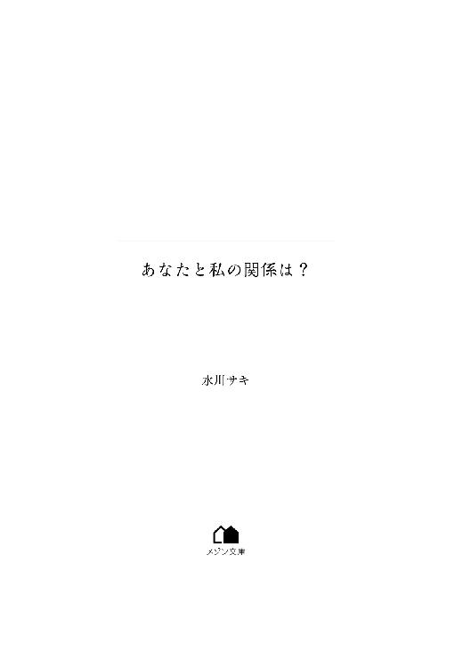

| あなたと私の関係は？ (メゾン文庫) | |
| 水川 サキ | |
| 一迅社 (2018) | |

【この恋はシンプル。しかしその証明はあまりにも難しい】
合コンに行ってみたら出会った人が高校のときの先生だった衝撃。
それはもう気まずくて、なるべくその人の顔を見ないようにした。
けれど、お互いもういい大人だから、通常どおり自己紹介や趣味なんかを言って、たわいない話をしたあと、みんなで連絡先を交換した。
そして一ヵ月後、私たちは当たり前のように居酒屋で飲んでいる。
「先生、十年でずいぶん変わりましたね」
「お前も十年でずいぶん変わったな」
「そりゃ十年ですからね。人生いろいろハプニングがありますよ」
「ハプニングしかなかったな、俺の人生」
お互いに近況報告ならぬ思い出報告をする。けれどもそれは必ずしも美しいものばかりではない。
「一体どうしたんですか？ 若かりし頃のさわやかさが皆無ですよ」
「お前も若い頃のかわいらしさがなくなったね」
ふたり同時にため息をつく。
「十年ですからね」
「十年だよな」
私、上山悠香二十八歳。先生、青砥英輔三十五歳。
十年前は教師と生徒。
今はただの飲み友達である。
私たちはふたりで夕食をとったあと、近くのバーに移動した。照明が抑えられ、ゆったりと落ち着いた雰囲気の中、仕事帰りであろう男性客がカウンターに並んでいたり、カップルらしき男女がテーブル席で笑い合っていたり。
そんな大人の空気を堂々と破壊する場違いなふたりがここにあり。
「お前、結構飲むなあ」
呆れ顔でそんなことを言われてしまったが、すでに三杯目のカクテルを飲み干したので開き直りつつグラスをテーブルに置く。
「飲まなきゃやってられませんよ。毎日毎日鬼残業と休日出勤。偉そうにしてるだけで仕事できない先輩と入社したらすぐに辞める新人。せっかく育てたのに寿退社する後輩」
口から出るのは愚痴だらけ。
「仕事なんだっけ？」
「システムエンジニアです」
「高給花形職業だな」
のんびりとした口調でそんなことを言う先生にイラッとして、つい睨みつけてしまった。
「冗談じゃないですよ。激務に追われて大学から付き合ってた彼氏に振られるし。四年も付き合ったんですよ？ 別れの言葉なんだったと思います？ 俺と仕事どっちが大事なんだ、ってお前は彼女か！」
「時代は変わった」
「うるさいですよ。先生のせいですからね」
きっぱりとそう言うと、彼は不可解な表情をした。
「なんでだ？ 俺が登場する場面あったっけ？」
特別登場することはなかったけれど原因のひとつではある。
「先生が、数学で大学へ行けって言ったから」
ぼそりとそう言うと彼の表情は一変、穏やかな微笑みとなる。
「ああ。そりゃ、お前の成績はずば抜けていたからな。お前が理学部の数学科に行って俺はちょっと誇りに思ったりしたけど。俺の生徒が俺の指導で志望校へ行けたんだって」
なんというプラス思考。この話の流れなら悪い方向だって思うでしょう？ 相変わらずの天然ぶりに呆れるを通り越してなつかしさが込み上げてきますよ。
イライラを抑えるために、つまみのピスタチオを噛み砕いてみる。
「悪夢はそこからはじまったんですよ。先生、数学科に行ってなんの仕事に就けると思いますか？ 就活して切に感じました。ほとんどの求人が教師かＳＥですよ。それに大学の数学ってマニアックとかそういうレベルじゃないんです。ほんと頭がおかしくなるかと思いました。私は数学の世界を甘く見ていたようです」
「うーんまあ、大変だったんだないろいろと」
かける言葉が見つからないのか、先生はそんな適当なことを返した。
「でも言うほど大変でもなかったです」
けろりとそう言うと彼の表情がまた一変、今度は拍子抜けしたような顔をする。
「なんなんだよ？」
「ただの愚痴です。悪いことばかりじゃないですよ」
「じゃあ、いいことはどんな？」
「休み返上で働いたから代休と有給使って海外旅行したり、金にもの言わせてエステとか高級ランチとか英会話とかスペイン語会話とか、あと護身術に合気道やったりもしました。ほとんど通えてなかったですけどね」
軽くおひとりさま自慢をしてみると先生はたいそう驚いてくださった。
「すげえリア充じゃねえか」
「そう。どっからどう見てもリア充です」
という仮面をかぶっていました。本当は私、二次元が大好きなんです。
先生のせいです。
高校のときにあなたに恋をしてから、私は自分の趣味を隠してきました。優秀な生徒として一目置かれるために必死で数学を勉強したのです。けれどあなたはきっと思いもしなかったでしょう？ 私がそんな想いを抱いていたなんて。
婚約者がいましたもんね。
そのことを思い出してふと疑問を口にする。
「そういえば先生、なんでまだ独身なんですか？ それともバツイチですか？」
「まだ独身だ」
彼は渋い顔つきで小さなチョコレートの包みを開ける。
「婚約者は？ 結婚しなかったんですか？」
「別れた」
彼はチョコレートを口に含んで気まずそうに噛みしめる。
「振られたんですか？」
「振られた」
彼はチョコレートの包み紙を丁寧に折りはじめた。
「一緒ですね。別れの言葉はなんでしたか？」
彼は包み紙を小さく結び終わりテーブルにそっと置くと、深く息を吐いた。
「あなたの給料じゃ将来が不安、だ」
「うわあ。典型的に男をＡＴＭとして見ている女の発言ですね」
笑いを取るつもりだったのに、先生はちっとも笑ってくれない。
「彼女は専業主婦になりたがっていた。しかも結構贅沢に育ったお嬢様だったから、年収一千万なきゃ嫌だとか」
なんというお姫様、いや女王様？ どんだけ偉いんだよと呆れてしまう。
「お前が働けよと言いたい。それだけもらうのにどれほどの責任を背負っているか、お前にわかんのかコラァ、ってね」
思わず声量が上がってしまい、斜め前のテーブル席に座るカップルたちにじっと見つめられてしまった。
「俺と別れたあと、その彼女は実業家と結婚した」
「......悲惨ですね」
どう返答すべきか迷ったあげく、同情の意味も込めてそんなことを言った。けれど先生はけろりとした顔で反応する。
「でもすぐに別れたらしいざまぁ」
その言葉に吹き出しそうになる。
「言いますねえ」
「女は金で男を選ぶ」
「そういう女ばっかりじゃないですよ。少なくとも私は金で男は選びません。稼いでるからあ！」
次は白ワインベースのあれにしよう、と店員さんに注文をすると先生が怪訝な顔つきになった。
「お前、飲みすぎ」
「あれ？ 私まだ四杯目ですよ？ まだまだいけます」
「食事のときにもビール四杯飲んでたぞ」
細かいところまでよく見てるなあ。
「数えてんじゃないですよ。とにかくまだいけます大丈夫。夜は長いよ楽しんでいこう」
明るくそう言ってドリンクメニューを差し出すと、彼は真顔でそれを受けとり、ビールとトマトジュースを混ぜたカクテルを注文した。
こうやって先生はいつも私に付き合ってくれる。呆れた表情を見せても本当は嫌がってなどいないとわかっているから私もついつい調子に乗ってしまう。
せっかくできた飲み友達だから？ いや、そうじゃない。私はきっとこの人とまだ一緒にいたいのだ。
あの頃叶わなかったことだから。
時間が過ぎるのも忘れて会話に没頭。主に私がしゃべり倒したのだけど、お店を出たのは十二時前くらいだった。本当はもっと長居したかったのだが、先生がいい加減に帰れと言って、最終の電車に間に合うように駅まで送ってくれる、はずだった。
「気持ち悪い」
吐き気がして道ばたに座り込んだ。
ああ、なんという醜態せっかくの楽しいひとときを一瞬で崩壊させてしまった。さすがにこれは呆れられるだろうと頭の中は後悔の嵐。そして軽い眩暈とひどい頭痛で気分は最悪だ。
先生が背中をさすってくれて、何か言葉をかけてくれたような気がするけれど、それはあまり聞こえなかった。目の前の光景はぐるぐるまわるし意識は遠のいていくしで、私はこれから自分がどうすべきかを考えることができなくなった。当然身体も動かなくなった。
そしてついに意識まで途切れた。
目が覚めると広いベッドの上にいた。夢か現実かはっきりしない頭でぼうっと天井を眺めてみる。部屋の中はあまりにも静かで、聞こえるとすればかすかな空調の音だけだった。軽い頭痛と身体のだるさはあるが、ベッドのシーツがさらさらしていて気持ちがいいのでやみくもに触ってみた。
それにしてもよく寝た。最近ぜんぜん寝ていなくて、久しぶりに熟睡したような気がする。思いっきり伸びをして「あーすっきり」と声を上げた瞬間にやっと自分がおかしなことになっていると気づいた。
「どこだ、ここは？」
ぱっちり目を開けて周囲を見わたすと、花柄模様の壁にうっすらピンクの照明が照らされてなんともかわいらしい。そう、ここは私の部屋じゃない。まさか。
「ホテルじゃねえかっ！」
叫ぶと同時にパニックになる。
「え、なんで？ 私......あっ、そうか。酔って終電を逃したんだ。それで先生にどこかへ連れていかれて......ってホテルかい！」
しかしこの広いベッドには私しかいない。ふと思い立って急いで布団をめくってみるとちゃんと服を着ていたので、ほっと胸を撫で下ろした。
とりあえず何もしていない。
それにしてもこんな酔って記憶なくして気づいたらホテルとかどこの漫画だよ。まさか、自分がそんなことになるとは思ってもみなかった。今まで酔いつぶれたことはなかったのに、私は一体何をしているのだろう。
やたら広いのにベッドしか置いていない部屋をうろうろしていると、別の部屋へ続くドアを見つけてそっと向こう側へ押しやった。そこはリビングのような作りになっていて、ソファとテーブルが置かれ、巨大な壁掛けテレビには水槽の映像が流れていた。魚がゆったりと泳ぐ姿にうっかり目を奪われそうになり慌てて顔を背けると、その目線の先に今度は先生の姿を捉えて思わず叫びそうになるのをとっさにこらえた。
彼はリビングのソファで眠っていたのだ。
そろりそろりと近づいてその寝顔を見つめてみる。さらりと流れる黒の前髪、凛々しい眉毛、すっと通った鼻筋、それに女の私でもうらやましいくらい清潔感のある肌の色。昔はさわやかな印象だった先生の顔立ちは、年齢を重ねただけ渋みが増してそれがより大人の男性を強く感じさせる。
胸の奥で音が鳴る。重くて少し痛みも生じる。
私はこの感覚を知っている。
十年前、先生をはじめて意識したときだ。
「あ、起きていたのか」
先生が目を覚まし、寝起きらしいかすれた声を出した。私はあまりにも近くでその寝顔を見ていたので慌てて離れた。
「あの、すみません。忠告も聞かずにほんと、飲みすぎてしまいました」
とりあえず一番に昨夜の失態を謝罪する。しかし先生はそのことについては触れず私の体調を心配してくれる。
「気分は？」
「ちょっと頭痛がするけど大丈夫です」
「そうか」
先生が寝ぼけた顔をしている。なんて貴重なショットだろう写真に撮りたい。しかし写真を撮らせてくださいも変な話だから、私は代わりに気になっていたことを質問することにした。
「先生、手ぇ出さなかったんですね」
「教え子に手ぇ出せるか」
「私もう生徒じゃないんですけど」
「俺にとってはお前は生徒だ」
その言葉は少々癇に障る。だからついムキになってしまう。
「あのー、私たち合コンで出会ったんですよね。健全に男女が相手を求めて出会う場ですよ？」
「人数合わせで行っただけだ」
彼は真顔で淡々とそう言った。
「でも、こうやって続いています」
クールな態度に少しばかり熱意で攻めてみる。
一瞬の沈黙の中で先生は鋭い視線を私にぶつけた。それが私の心をくすぐって少しばかり胸の奥がざわついた。
「なんだ？ 手を出してほしいのか？」
思いもよらない言葉に胸の鼓動は急加速。
獲物を捕獲するような彼の目つき。そしてそれを期待する私。
これはやばい流れ的にこれは、いたしてしまうかもしれない。
しばらくふたりのあいだには妙な沈黙があった。このあと先生がどうするのか気になりすぎて目がそらせない。たとえば期待するようなことになれば、私はすんなりと受け入れるだろう。
そこに特別な感情がなかったとしても、それでもいいと思ってしまう。
先生、だから。
「やべ、今、何時だ？」
突然先生が血相を変えて慌ただしく周囲を見まわした。
「え？ 何時って......うわあっ！」
棚に置かれたデジタル時計に目をやると、七時二十分。もちろん朝の。そして今日が水曜日であることを思い出し一気に血の気が引く。
「どうしよう。朝一でプレゼンがあるのに、今から家に帰ってメイクし直して......って間に合わないっ！」
頭を抱えながら寝室へ行き、バッグを手に取り忘れ物がないか入念に周囲をチェックする。そして寝室を出ると先生はすでに精算をはじめていた。
「やっぱり飲みは週末にするべきだったろうが」
不機嫌な顔でそんなことを言われた。
「だから、週末は出張があるんですよ」
とこちらもぶっきらぼうに返答する。
「じゃあ、出張から帰ってでよかっただろ」
「だって電話で愚痴言ったら飲みに行くかって誘ったの先生じゃないですか！」
「あんなに飲むと思ってねえよ！」
お互いに口調が荒々しくなる。が、口論などしている場合ではない。
私たちはそれ以上何も言わずこの場を脱出、駅へ向かって全力で走った。
週末、地方の客先に出張のため、私は飛行機に乗っていた。
となりの席のビジネスマンがパソコンで資料を作っている様子を見て、貴重な移動時間を仕事に費やして熱心なことだなと思った。ちなみに私は貴重な移動時間をプライベートに費やすことにしている。
コーヒーを注文し文庫本を広げる。カバーをかけてあるので中身はわからないが、自己啓発本ではなくさっくりと読める小説である。しかし失敗だった。今日持ってきた話はラブコメで笑いのツボが見事にはまり私はうっかり声をもらした。となりのビジネスマンがちらりと視線を投げつけてきたが、まったく気づかないふりをした。
その日の夜は上司と現場の方々との食事会があって、ホテルに着いたのは十時前だった。シャワーを浴びてベッドに入り、スマホで漫画を読んだりゲームをしたりしながら寝落ちした。まあ、だいたいいつもそう。そしていつの間にか朝を迎えるのだ。
スマホがいつもと違うアラーム音を鳴らして不思議な感覚で目を覚ます。ぼんやりと画面を見るとそれはメッセージ受信のお知らせだった。しかも相手が先生だったから驚いて飛び起きる。
『出張おつかれ。南青山においしいイタリアンがある。来週の日曜にランチでもどう？』
これはなんてうれしいお誘いだろう速攻で返信だ。
『行きます！』
来週は月曜日が祝日なので三連休。仕事がなければだらだらと三日間を引きこもって過ごして終わる。けれど今回は予定ができた。それだけでうれしいのに先生と会えるから喜びは倍増、思わず飛び上がりたくなっちゃうよ。
それにしても先生はおしゃれなお店をよく知っている。いつも飲みに行くときはだいたい彼がお店をチョイスしてくれるのだけど外れたことがない。
スマホを握りしめたまま「やっほう、リア充バンザイ！」とベッドの上で叫んだ。
どう考えてもこれはデートのお誘いだ。はじめて先生と昼から会うのだからどうしようもなく心が躍る。何を着て行くべきか今から迷う。ああ、私の人生にこんな未来があるなんて十八の私は想像もしなかっただろう。
あの頃の私は先生への恋心を必死で隠すために仮面をかぶっていた。けれど、もう素直に感情を出してもいいよね。
またメッセージを受信し、見ると相手は大学時代の友人である莉子だった。
『やっほー悠香。今度の日曜、旦那が出張なんだけどランチでもどう？』
久しぶりだから会いたいと思ったが、今度の日曜日は無理だ先約があると伝えると、すぐさま電話がかかってきた。
――ちょっと何？ 悠香、もしかしてデート？
「やだーわかる？」
――ええ？ まさか運命の先生？
運命という単語につい顔が緩んでしまう。
「運命だなんて運命だなんて運命かなあ？」
――よかったね。こっちまでテンションが上がってきた。
「なんで莉子が？」
――悠香、大学のとき忘れられないって言ってたじゃない。彼氏ができるまで引きずっちゃってさ。
そう。私は大学で彼氏ができてもしばらくは先生のことが忘れられなかったのだ。
「うん。まあ、でもね。一度は忘れた人だから今は普通だよ」
私は失恋して、ちゃんと先生を忘れたのだ。今はただの飲み友達だから、そこまで気にすることもない。それなのに、私はいろいろと期待をしている。
――よかったね。うまくいくように応援してるよ。
そう言われると、ますます期待に胸がふくらむ。
「ありがとう」
莉子に応援してもらえることが一番うれしい。
先生と再会して、真っ先に報告したのが莉子だった。なぜなら高校のときの友人は誰も知らないから。大学で数少ない女子の友人である彼女には失恋の話を散々した。
元彼と付き合うようにすすめてくれたのも莉子だった。
彼からは何度か付き合わないかと言われていたけれど、私はどうしても先生が頭から離れなくて、なかなかその気になれなかったのだ。しかし、人の気持ちとは時間が経てば変わってくるもので、彼と付き合いはじめてからいつの間にか先生を忘れることができた。はじめての彼氏でいろいろと戸惑うことも多かったけれど、彼はとてもやさしかった。大学の頃までは。
卒業後は急激に会える時間が減り、だんだんケンカが増えていった。あの頃の私は早く仕事を覚えたくて必死に勉強していた。そして仕事は想像以上に激務だった。
彼は私に対して不満をつのらせ、私は謝ることしかできなかった。ついに彼の浮気が発覚し、私が問いつめると奴は言った。
『お前は男かよ。仕事と結婚しろよ』
彼は悪びれた様子もなく、すべてを私のせいにした。
彼氏と別れたあと、私はずっと仕事だけに生きてきた。恋愛に臆病になったわけではないけれど、俺と仕事どっちを優先するんだとか面倒なことを言われるのは嫌だったし、多忙すぎて誰かのことを考える余裕もなかった。胸キュンが足りなければ、恋愛ものの小説や漫画を読めばいいだけ。それで充分だった。
けれど、神様は私にもう一度チャンスをくれた。
ベッドに寝転んでスマホをぎゅっと握りしめながら目を閉じる。
鼓動の高まりは止まらないし、手のひらには軽く汗をかいている。
震えるほどうれしい。
一週間が待ちきれなくて、そのことばかり考えた。久しぶりに仕事以外のことで頭がいっぱいになった。
＊＊＊＊＊＊＊＊＊
彼女に告白すべきだろうか。
しかし、それを知って彼女はどのような反応をするだろう。まずはチェックするだろうな。そしてその中身に仰天するかもしれない。
まさか彼女は想像もしないだろう。俺が小説を書いているということを。しかも、内容は十八歳未満禁止指定ジャンルである。
やばいよなあ教師がＲ18書いてるって絶対引くよなあ。いいや黙っておこう。
そもそも小説という作り話に興味はなかった。目覚めたのは昔、彼女と別れてからである。
当時付き合っていた彼女と婚約して互いの両親に紹介し合い、周囲にも報告していた二十七歳のときだった。彼女がいきなり結婚をやめると言い出したのだ。驚いたがどうやらマリッジブルーのようだったので、それならそれで落ち着くまで待つと言ってみた、のだが。
「私、あなたと結婚して幸せになれると思えない」などと言われた。
俺に何が足りないのだろう。彼女を満足させてやれないのはなんだ？ と真剣に悩んでみれば、「お金よ」と冷たく言い放たれた。
なんてことだ。俺は酒は飲むけどタバコもギャンブルもやらないし、特別金遣いが荒いわけじゃない。自分にはあまり金をかけない代わりに彼女には高い服やバッグやアクセサリーをプレゼントしてきたのだ。
おそらく彼女の不満は金銭的なものだけではないのだろうと思った。
たしかに付き合って八年同棲して六年、お互いに最初の頃のような盛り上がりはなく、いるのが当たり前のような存在になっていた。しかも俺は仕事のことばかりだったし彼女は飲みに行くのが好きな子だったので、それぞれ自由にしていた。いつの間にか彼女とのあいだに距離ができていたのだろう。
浮気をされてしまった。
相手は実業家で当たり前だが年収一千万円以上、つまり彼女の理想だった。どうやらずいぶん年上の人らしく包容力も財力もある。そんな人を相手に自分が敵うわけがない。そうは思っても、こちらには長年の絆があるから、そう簡単には切れないだろうと信じて彼女を説得した。ワガママなところもあるがかわいらしい一面もあり、すでにいるのが当たり前の存在になっていた。彼女を失うなど、考えたこともなかった。
しかし残念なことに彼女は別れるの一点張りでこちらの話など聞く耳を持たなかった。彼女を失うことの衝撃があまりにも強く、別れたあとは何も手につかなくなった。長く一緒に暮らしていた１ＬＤＫの部屋は、ひとりになるとあまりにも広く感じた。思い出が、ありすぎる。すぐに引っ越しをすることにした。
しかし、どんなに落ち込んでいても仕事を休むわけにはいかなかった。それが社会人として一番辛いところである。
仕事。それも高校生を相手に。彼らに失恋したショックを知られてはいけない。俺は青春真っただ中の彼らを相手に日々淡々と授業をこなした。
そのような不安定なときに俺を心配してくれた友人が気分転換に読書をすすめてくれた。すすめられて読んだ小説がたまたま成人向けだっただけ。なのだが、その友人は、読んだら次は書けばいいと提案した。
たしかに気分転換にはなった。もしかしたら自分はあのとき壊れてしまったのかもしれない。おどろおどろしい情念を文章にして吐き出し、精神を保っていた。そんな感じでインドア生活になったのである。
とまあそんな経緯があり、おしゃれな食事処などまったくわからない。友人たちに訊ねても、ひとりは夜の店しか知らないし、もうひとりは居心地のいいネットカフェなら教えてくれると言うから、もう自分でなんとかするしかなかった。
ネットでクチコミの多い店、評価の高い店、そういったところを探しまわり、比較的近くて利便性が高く雰囲気のいい店をピックアップする。が、評価のいい店が必ずいいとは限らないから、まず自分の足で行って事前に確認をしてみる。おひとりさま経験は長いのでたいていどこの店も気軽に行ける。
スマホがメッセージの受信を知らせた。上山からだった。
『せんせーのおかげで仕事はかどりました。来週楽しみだあ』
そのたった一文が微笑ましく感じられて思わず口もとが緩んだ。
『それはよかった。何もしてないけど』
と送信するとすぐさま返信があった。
『いいんです。予定があると頑張れるんだから！』
俺も、と打ち込もうとして、やめた。
待て待て。別に付き合っているわけじゃないんだから喜びを全面に出してどうする。
『じゃあ、来週の日曜日十一時に待ち合わせしようか』
『了解なり～♪』
つい笑みがこぼれた。そしてひとつの疑問が頭に浮かんだ。
上山はこんなキャラだっただろうか？
俺の知っている彼女は眼鏡をかけていて、どこか愁いを帯びた表情をしていた。口数も少なく、話すときは淡々としていてあまり感情を表に出さなかったような気がする。数学の成績は飛び抜けてよかった。彼女の答案を見るのが楽しみだった。しかし、それで数学科をすすめたのは安易だったのだろうか。
先日の彼女の言葉がどうにも気になって仕方がない。
『先生のせいですよ』
日曜日は雨だった。そして私も雨だった。
なんで？ まだ生理予定日まで五日以上あるのに、よりによって今日来ちゃうなんて神様イタズラにもほどがありますわ。身体は重いしお腹は痛いし、昨日も寝不足だし最悪だよ。
ぬれた傘を持ち歩く人々で混雑した改札前に立ち、私は微妙な気分で先生を待っていた。到着した電車からあふれ出てきたであろう乗客たちの群れが改札に押し寄せてきて、その中に先生を見つけると急激に緊張してきた。
彼は私の姿を見つけると小走りでやって来た。
やばい胸の鼓動静まれ、と心の中で叫ぶ。
「悪い、電車が遅れて。待たせた？」
「いえまったく。さっき来たばかりです」
頑張って笑顔を作ってみる。
「じゃあ行こうか」
穏やかに微笑む先生にまた胸がどきりと悲鳴を上げて、私は小さく「はい」と言った。
私は先生よりも少しあとを歩いた。傘が邪魔でもっと近づきたいのにそれができない。いっそのこと傘がひとつなら、一緒にくっついて歩けるのになあと思う残念。
歩きながら先生のうしろ姿を眺めた。すらりと背が高くて整った外見は昔とちっとも変わらない。この人は女子生徒から大人気だった。いや、もしかしたら今でもそうなのかもしれない。
そんな人とこうやってふたりで出かけることができるなんて最高だ！
先生がいきなり立ち止まりこちらを振り向いたので、慌てて顔を背けた。
「なんだ？」
「え？ ああ、先生って相変わらず男前だなあと思って」
明るくそう言うと彼は苦笑した。
「は？ 冗談」
「ほんとですよ。だって先生に彼女がいるって知って泣いた女子何人いると思いますか？」
「まさか」
「もしや気づいていなかったとか？」
いやいや、それはないでしょう。卒業前にクラスの女子たちから一斉に告白されていたのだから。私はその中には入っていないけれど。
「そういう目で見ることがないからなあ」
ため息まじりにそう言う先生にわざとらしい言葉をかける。
「わあーかわいそう。あの頃の女子たち」
「仕事だからな。お前は仕事をそういう目で見るか？」
訊ねられて数秒考えたあげく。
「......ないですね。冗談じゃないわ」
とあっさり返すと「ほら」と当たり前だとでも言うような顔をされた。
本当は私も泣いた生徒のひとりなんですって言ってやりたいけれど言えない。今さらそんなことを告白しても意味がないし、もしかしたら拒絶されてしまうかもしれないから。
先生の性格はよく知っているつもりだ。真面目で堅実、ルールをきっちり守るような人だから、生徒に対して特別な感情を抱くなんてことは絶対にしない。
もしも私がひそかに恋心を抱いていたと知ったら、せっかくの再会を台無しにしてしまうかもしれない。やっとこんないい感じの関係になっているのに、昔の私には邪魔をされたくない。
私はもう生徒じゃない。
今日は、社会に出てから合コンで知り合った男の人と食事をするのだから。
「女性に人気の店だから、気に入ってもらえるといいけど」
目的の場所に到着して、先生は私の様子をうかがうように微笑んで言った。
彼が連れてきてくれたレストランは茶色を基調としたシンプルだけどあたたかみのある内装で、あちらこちらに緑の装飾もあり森の中にいるような気分にさせてくれる。
料理も前菜からおいしい。サーモンのマリネとキッシュとサラダが絵になるほど美しく盛りつけられている。パスタも種類が豊富で、私はクリームかトマトソースか悩んだあげく、トマトクリームを選びどちらも堪能することにした。
先生にめずらしく飲まないんだなと言われたので、お昼から飲みませんよーなどと返したのだが、本当は莉子とランチをするときには白ワインを飲んでいる。しかし、今日は無理だ。
食事をしながらたわいない話をするような空気を出しつつ、私は先生のプライベートを訊き出すことに集中した。
知りたいのだ。どんな細かいことでもこの人のことが。
まずは誰もが質問をする気軽なところからはじめてみる。
「先生、休日は何をしているんですか？」
「そうだなあ。読書をしたり出かけたり料理をしたりかな」
思わぬ情報ゲット。
「料理するんですか？」
「ひとり暮らし長いからな」
「へえ。私も料理は嫌いじゃないんですけど、時間がなくてまったくしてないですよ。ちなみにどんなものを作ります？」
「和洋中、わりとなんでも」
すごい。まさかの料理男子にときめき度がアップした。
「得意料理はなんですか？」
「煮込み料理。得意っていうか楽だからな。野菜切って煮るだけだし」
「わあ、いいなあ。食べたーい先生の手料理」
なんて冗談で笑ってみたら衝撃のひと言が。
「いいよ」
耳を疑った。
なんてことだ。軽いノリで言ったのにＯＫをもらってしまった。この展開は予想していなかったので少々動揺してしまう。なんて返事をしたらいいか迷ったあげく話をそらすような発言をしてしまった。
「私はこれでも結構好みがうるさいんですよ。高級ランチでおひとりさまを謳歌してすっかり舌が肥えちゃって。あはは」
「知ってる」
またまた思わぬ返答をされた。
「え、なんで？」
「今まで飲みに行ってお前が注文する料理とか、俺と好みが似ているなと思った」
「そうですか。よく見ていますね」
う、うれしい。めちゃくちゃうれしい。今にも踊りたい気分である。しかし、ここで妙にテンションが上がって不自然な態度になってはいけない。
平静を装いにこにこしていると、今度は先生から質問があった。
「お前は？ 趣味」
「あ、そうですね。映画とか行ったり......」
はい、うそです。休日はゲームしたりアニメ見たり漫画とか小説を読んだりしています。主にベッドの上に寝転がって寝間着のままで一日を過ごします。言えないな。
「映画、行くか。このあと」
「え、いいんですか？ 私に合わせてもらって」
「いいよ」
神様、まさかの展開がやってまいりました。食事のあとに映画なんて、これ本当にデートじゃないですか。
これは幻想か、はたまた私が勝手に妄想しているだけなのか一応喜ぶ前に疑ってみる。いや、もうなんでもいいや。とりあえず今すごく幸せだからこの流れに身を任せておこう。
それから私たちは映画館へ行って本日の上映スケジュールを確認した。しかし先生に何が観たいか訊かれて正直困った。この中に観たいものがひとつしかなかったから。しかもそれはアニメ。それも。
『俺が支えるからおまえがやれ』
これは私が好きなアニメの劇場版。略して『俺おま』と呼ばれ、私が出張中の飛行機で読んでいたのはこれの原作である。しかし、これはファンのあいだでは有名なのだが一般的に知られているとは思えない。つまりこの人は絶対に知らないだろう。
何にしようかと迷っていると、流行りの泣けるという純愛ものがあったがすでに完売状態。みんな大好きだからな。コメディでもあればよかったのにそれもなかった。
「あの、これなんかどうですか？」
適当に外国のアクション映画を見つけて訊いてみた。
「いいよ」
了承が得られたので興味もないのにその映画を観ることになった。いや、それはそれでおもしろいかもしれないし、期待を込めて観ることにする。
とその前に。
「すみません。ちょっとトイレに行ってもいいですか？」
「わかった。じゃあ、飲み物を買っておくけど何がいい？ ビール？」
「あたたかいカフェラテでお願いします」
そこは強調して言っておく。
今は冷たいものを飲める気分じゃない。今朝飲んできた痛み止めが切れてきたので、私はトイレに行くついでにこっそり薬を服用することにした。
ああ、辛いなあ。せっかくのデートなのに、これだから女ってめんどくさい。
＊＊＊＊＊＊＊＊＊
今日の上山は変だ。顔色もよくないような気がする。だいたいあの酒飲みが昼だからと一杯のビールも飲まないのは不思議でたまらない。もし体調が悪いのならこれ以上連れまわしてはいけないのかもしれない。
上映時間になったが、あいつはなかなか戻ってこない。もしやトイレで倒れているのではないだろうか。じりじりと時間が経つたびに心がざわついてくる。
ふとチケットを見て思う。あいつはこういう映画が好きなのかと。
俺は映画を観ることはあまりないが、この中で知っているタイトルがひとつだけある。それは深夜にやっているアニメの劇場版。略して『俺おま』と言うらしい。
友人があまりにも好きすぎてその話ばかりするので、すっかり影響を受けて試しに見てみたら意外とおもしろかったのだ。
しかし上山は知らないだろうから、自分からは言わないことにする。
「すみませーん。お待たせしました。あ、はじまっちゃいましたか」
明るい笑顔を振りまきながら急ぎ足で彼女は戻ってきた。とりあえず無事でよかった。
「いいよ。どうせまだ予告だから」
「私、予告も楽しみなんですよ。早く行きましょう」
楽しそうに笑ってはいるがやはり万全な調子だとは思えない。
「ちょっと待て。お前、さっきから顔色が悪いよ。大丈夫か？」
「え、そうですか？ きっと照明が暗いせいですよ」
けろりとそんなことを言うが、どうも無理をしているように思える。しかし彼女が大丈夫と言い張るのだから、ここは様子を見ることにする。
「ブランケット借りといたから」
と言ってそれを差し出すと、彼女は感激した。
「うわあ、気遣いが神！」
「そうでもないけど」
「ありがとうございます」
彼女はうれしそうにブランケットを抱きしめた。
映画はあまり期待しなかったせいか、案外おもしろくて終始それなりに楽しめた。
しかし上山はとなりでぐっすりだった。つまらなかったのだろうか。いや違う。やはりこの子は無理をしている。
上映後、ロビーで彼女は謝ってきた。
「ほんと、すみません。自分でこれ観たいとか言っておいて寝てしまいました」
「日頃の疲れがたまってるんだろ」
そう言うと、彼女は返事もなくふらついてこちらへ身を預けてきたので慌てて肩を支えてやった。
「やっぱりどこか悪いんじゃないか？」
「平気......です。病気じゃ、ないんで」
恥ずかしそうにそんなことを口にした彼女を見て、もしかしてという考えがよぎる。
「その、俺にはよくわからないけど、辛いなら今日キャンセルしてもよかったのに」
「大丈夫です。家にいたって痛いもんは痛いし。むしろ出かけたほうが気分転換になりますから」
「少し休むか」
そう言って座れるところを探してみるが、休日の映画館で空いているスペースなどあるわけがない。これ以上連れまわしてはいけないなと思った。
「今日はもう帰るか」
「えー、嫌です。ちょっと休めば大丈夫ですから」
「送ってってやるから」
「私の家、遠いです」
「じゃあ俺の家に来る？」
上山が「え？」と小さく声をもらして呆気にとられた顔をした。
しまった。勢いあまってつい彼氏のノリで言ってしまったが。
「はい行きます」
と元気な返答があった。
この展開は予想していなかった。まさか上山をうちへ連れてくることになろうとは。
うちは１ＬＤＫのマンションで七階にあり、駅から歩いて十分もかからない。
とりあえず普段から掃除をしておいてよかったと思う。そして見られて困るようなものも、目に映る限りはない。
「お邪魔しまーす。わあ、先生の家きれい」
上山は遠慮なく上がり込み、周囲を見まわした。
「ずっとここに住んでるんですか？」
「八年くらいかな」
彼女と別れてからね、と言う必要はないな。
「そんなに長く住んでいるのにこんなにきれいなんてすごい。恥ずかしながら私はすぐ散らかしちゃうんで尊敬しますよ」
上山はそう言いながら本棚の前で立ち止まりじっと眺めた。人の家に来て本棚をチェックしたくなるその気持ち、わかるよ。だいたいそれで趣味嗜好がわかるからな。
「コーヒーでいいか？」
「あ、はい。なんでも。ていうかおかまいなく」
コーヒーを淹れているあいだ、上山は熱心に本棚を眺めていた。おもしろいものは何もないと思う。数学書か実用書か参考書、そういった類しか置いていない。小説や漫画本はなく、もちろん自作の小説も存在しないことにしている。
「つまらない本ばかりだろ？」
「いいえ。なつかしい本がいっぱいです。これなんか私苦手だったけど、めっちゃ頑張って勉強しましたよ」
上山は解析学の本を手に取り、そっと表紙を撫でながら苦笑した。
「上山でも難しいと思ったのか？」
「難しいですよ！ 大学の頃は勉強しかしていません。大学生は人生で一番自由だって言ったのは誰？ 合コン？ サークル活動？ 素敵な学生ライフはどこ行った？」
「まあ、大学の数学は高校とは比べものにならないほど難しいからなあ」
「それを知っていて私に数学科をすすめるなんて先生もひどい人ですよ」
「いや、だってお前すげえ賢いから、できると思ったんだよ」
彼女の数学の成績は学年トップだったから、いろいろと期待をしていたのだ。
ソファに並んで座り、コーヒーを飲んだ。上山は俺の知らない卒業後を語ってくれた。しかし、いいことばかりではないようだった。
「私はすべて中途半端で終わりました。だって、今数学やれって言われてもたぶんもう解けない。社会人になってから仕事ばっかりで、数学に触れる機会なんてなかったから」
「立派な社会人になってんだからいいだろ」
励ますつもりでそう言うと、彼女は疑問を口にした。
「立派な社会人ってなんですか？ 仕事ができることですか？ 出世することですか？」
「責任能力のある人間のことだと俺は思っている」
「模範解答ですね」
淡々とそう返されると、もっと気の利いた言葉を言うべきだったのかと思う。
話を聞く限り上山は相当努力をしていると思う。職場のほとんどが男性らしく、その中でひとり飛び抜けて昇進し現在は主任の立場にあるらしい、のだが。
「お前は頑張りすぎるところがあるから、もう少し誰かに頼ったほうがいいんじゃないか？」
単純に思ったことを口にすると上山は驚いた。
「私、そんなに愚痴ってましたか？」
「いや、昔から。お前はそうだっただろ」
十年前、上山悠香の努力をずっと見ていた。どんな小さな疑問もすべて解決するまで徹底的に質問をしに来ていたし、興味のある難問にまで挑戦する非常に勤勉な生徒だった。ただし、数学に限る。
他教科はあまり芳しくなかったので、数学科をすすめた理由はそこにもある。
上山は小さくため息をもらした。
「まあ、頼りたいのは山々ですけど、頼れる人がいないのも現実でして。私の上司はめっちゃ厳しい人でしたから、その影響を受けて私も後輩指導をしてるんですけど、ついていけないって言われちゃってて。私、教えるの向いてないのかなあ」
上山は少し冷めかけたコーヒーを見つめながらぼやいた。
昔から彼女は自分にはもちろん他人にも厳しいところがあったので、疎まれる傾向があるのかもしれない。しかし。
「ひとりくらいはいるかもしれないよ。お前についていける奴」
「さあ、どうでしょうか？」
「しっかり見てやれよ。俺にはいたぞ。教えがいのある奴が」
「へえ、どんな子ですか？」
「そいつはある日いきなり大学の参考書を持って質問に来た。驚いて訊いてみたら、そいつなんて言ったと思う？」
わざとらしく笑いながらそう言うと上山は気づいたようで突然思いついたように表情を明るく一変させた。
「「高校の数学に飽きたんです」」
ふたりで声をそろえた。
「あはははは。なんで覚えてるんですか？」
「忘れねえよ。なんだこいつって思った」
「ネタじゃないですか。さらっと流してくれてもよかったのに」
「どこまで本気か興味があった」
「なつかしいですね」
上山は朗らかな表情で遠くを見つめた。
本当になつかしい。けれどもう十年も前のことなのに、こうしてこの子と話しているとついこのあいだのことのように思い出せる。
上山はにっこりとやわらかい表情でこちらに顔を向けた。こちらも笑みを向けたのだが、そのあと彼女から衝撃のひと言が。
「あーねっみぃ......」
「は？」
「すみません、ものすごく眠気が。人んち来て申しわけないと思うんですけど、ちょっと寝ていいですか？」
マジかよ？ この展開も予想していなかった。しかし上山はすでにソファへ身体を預けて目を閉じている。
「待て。ここで寝るな。寝室行けよ」
「だめですよー汚れますから。ここでいいでーす......」
すでに入眠準備が完了している。
「風邪引くぞ」
「平気でーすおやすみなさい......」
十秒も経たないうちに寝息を立てはじめた。
あーあ、本当に寝てしまった。どーすんだこれ？
男の部屋で寝るなよ。こんなもん、どうぞ好きにしてくださいって言っているようなもんじゃねえか......いかん、落ち着け。教え子相手になんということを考えているのだ。それにしてもよほど信用しているのか、ずいぶんとまあ無防備に眠っていて、ため息が出る。
かなり疲れているのだろうな。おそらく平日はほとんど寝ていないのだろう。とりあえず毛布をかけてやって、買い物に出ることにした。普段ろくなものを食べていないだろうことは容易に察しがつくから、夕食でも作ってやろうと思い、起こさないようにそっと出かけた。
そして四十分後、買い物を終えて帰宅しても彼女はまだ眠っていた。その様子を見て心なしか安堵し、顔が緩んだ。極力物音を立てないように夕飯の準備をはじめた。
すると突如スマホの着信音が鳴り響き、仰天しつつも慌てて上山へと目を向けたが、彼女は変わらず眠っていた。
そっと電話に出ると相手は大学の友人、高田だった。
「はい」
――あー、英ちゃーん。今夜暇？
「暇じゃない」
――いや、暇でしょ？ ちょっと鳥ちゃんと会ってさ、今夜英ちゃんちで飲もうかって話してんの。行っていい？
「いきなりかよ」
――何？ 都合悪い？
「ものすごく都合が悪い」
上山を起こさないように声を抑えてはいるが、彼と話すときはつい声量が上がってしまう。
――どうした英ちゃん？ 土日にまったく予定がない英ちゃんがおかしいだろ！
何気に失礼な発言だよ高田くん。
「うるせえほっとけ」
――英ちゃん付き合い悪い！ 今まで断ったことないじゃん。なんかあったの？
いかん、変に勘ぐられてしまう。ここは冷静に対応しなければ。
「別に。今日はたまたま用事があるだけ。来週なら、たぶん空いてる」
とりあえず今日は来られると困る、と心の中でだけ呟いておく。
――絶対ね。鳥ちゃんの転職先が決まったから祝ってやりたいの。
「あ、あいつ。決まったのか」
――そう。無事ニート卒業。三十五歳ぎりぎりの転職よく採用されたよなあ。
「お前それ、ホントに祝ってんの？」
――あったりまえじゃーん。まあ、そういうことだから、来週空けといてね！
「わかった」
電話を切ってから上山が起きていないか確認する。
大丈夫。かなりぐっすり、というか朝まで起きないような勢いで眠っている。安堵のため息をついて夕食の準備を再開した。
大学時代の友人である高田と鳥山は今でも飲み友達である。なぜなら友人たちの中でいまだ独身なのが俺ら三人だけだから。
高田はめんどくさいからと言って特定の彼女は作らず夜の店に通う男だ。
鳥山は基本的にインドアな性格で彼女がいたことがない。というより二次元にしか興味がない男だ。
彼らとの付き合いが続くのは、俺が二十七歳でどん底に陥ったとき、そばにいて励ましてくれたからだと思う。他の友人たちは当たり障りのない慰めの言葉をくれたが、このふたりはバカみたいに明るく振る舞って連日飲みに付き合ってくれた。
立ち直れたのは彼らのおかげであり、心から信頼している友人たちである。
実は上山と出会った合コンに高田も誘っていたのだが、彼はドタキャンしやがった。毎度のことながらイライラしたが、今となってはあいつが来なくてよかったと心底思っている。あいつが来ていたら絶対に上山を狙うだろう。彼女はあいつの好みの部類だから。しかし冗談じゃない。軽い気持ちで大事な教え子を持ち帰らせてたまるかってんだ。
もう一度彼女の寝顔を見てため息をついた。
＊＊＊＊＊＊＊＊＊
私は言わなきゃいけない。
ちゃんとこの気持ちを言わなくちゃ。
誰に？
そんなの決まっている。
ほら、今日も質問を持って先生に会いに行くんだから。
いや、だめでしょ。生徒の私はそれを言っちゃいけない。
私は先生とどうにかなりたいとか、そんなバカげたことは考えていません。こんなの、きっと人生のうちのただの通過点に過ぎないから。お年頃だし、誰かにときめいてしまうのは仕方がないと自分に言い聞かせて。
それでも卒業までは先生に想いを寄せていてもいいですよね？
叶わない恋だとわかってはいるけれど、毎日あなたに会えるのがこんなにうれしくてたまらないから。見返りなんていりません。会えるだけで、顔を見るだけで、お話するだけでいいんです。
だから私は、あなたの数多くいる生徒の中で一番になります。
ぼんやりと薄暗い校舎に私は立っていて、まわりの声は聞こえない。私が声をかけるのは視線の先にいる先生だ。私は沈着冷静な仮面をかぶり、優等生を演じている。
「あの、先生」
「なんだ？ 今日はどんな質問を持ってきた？」
「今日は質問じゃなくて、言いたいことが、あります」
「何？」
うわ......私は何を言おうとしているんだ？
「私は、あの......先生のこと」
ちょっと待って。それはだめ。それだけは言っちゃだめだよ。
「私は先生が」
だめっ！
「先生が好きです」
足が、震えた。
先生の顔をまともに見ることができなくて、うつむいたまま時間が過ぎるのを待った。すると彼はとても残念そうな声で返答した。
「悪い。お前の気持ちには答えてやれない」
予想どおりだ。
目を開けると知らない天井だった。心臓の鼓動がどくどくと頭に響いてくる。
夢とはいえ、一番聞きたくなかった言葉を聞いてしまい、ひどく落胆した気持ちで周囲をゆっくりと見わたした。そしてほんのりと鼻を刺激するお味噌汁の香りがお腹の虫を呼び覚ました。
「お腹、すいたなあ。ごはん食べたい」
あまり働いていない頭でそんなことを呟いた。
「ああ、起きたか」
「へ？」
突如目の前に出現した先生に心臓が飛び出しそうになり私はソファから滑り落ちた。
「なんのコントだよ」
先生が吹き出した。
いや、もう記憶があまりにも昔に飛びすぎてしまって呆けているんです。
ようやく頭が現実を理解しはじめた。あれは夢だったのだと心底安堵する。
「すみません。私、どれくらい寝てました？」
「三時間くらい」
「うそっ！ 起こしてくださいよ」
「疲れているだろうと思って。夕飯できたけど食べる？」
「ええっ？ 何その実家に帰ったみたいな感じ」
「母ちゃんが全部やってくれるんだもんな」
先生がにやにやしながらそう言った。
ははは、返す言葉がありません。
テーブルの上には筑前煮と焼き鮭、玉子焼きとほうれん草のおひたし、そして雑穀米と味噌汁が並んでいた。
「すごーい！ 和食じゃないですか」
「褒められるほど難しいもの作ってないけど」
いやいやそんなご謙遜を。私が玉子焼きを作るとだいたい焦げるのに先生のは本当に美しいこれは芸術だよ。
「ちょっと意外でした。こんなに手間暇かけてお料理するなんて」
先生とテーブルを挟んで向かい合って座る。目の前のごちそう、しかも先生の手作りに胸が躍る。
「冷めないうちに食えよ。飯のおかわりならあるから」
「お母さーん！」
「誰がお母さんだ？」
「いただきます」
まさか映画デートからこんな展開が待ち受けているとは思いもよらなかった。お腹の痛みはすっかり消えて胸にぎゅっとした心地よい痛みだけを感じる。
私の鼓動は常に忙しくどくんどくんと熱心に働く。
ああ、お味噌汁がおいしい。煮物は味が染みているし、玉子焼きはふわっふわ。焼き魚とか、私はグリルを使わないからこういう脂の乗った状態で食べることなんてほとんどない。味付けはそんなに濃くないし、なんてやさしい。食べる人への愛情がこもっているよ。
「幸せすぎるーっ」
「大袈裟だな」
「ほんとですよ。最近コンビニばっかりだから」
「だと思った」
呆れ顔をされた。ここは多少なりとも弁明をしておこう。
「忙しくてなかなか自炊ができないんです。でも社食でちゃんと栄養を考えて食べていますよ。野菜中心にしたり」
「そうか」
短い反応があった。話題を変えよう。
「先生、ほんとに料理上手なんですねー。いつでもお嫁に行けますよ」
「もらい手がいたらな」
なんと。私がもらってあげましょうか？
仕事でクタクタになって帰ったら先生がごはんを作って待っててくれるなんて、どこのサラリーマンだよ。いいね、そういうの。
と幸せな妄想をふくらませたところで現実が襲う。平日なんてだいたい深夜帰りなのだから、一緒に晩ごはんを食べることなんてほぼない。それでもたまに早く帰れる日に、奥さんが家でごはんを作って待っているという同僚や先輩の男性たちを見ると、やっぱりうらやましい。などと愚痴ってみたが。
「そんな私は女としてアウトですか？」
「別に。今の時代、女だから家で待っているとかないだろう」
「でも男の人ってやっぱりそういうのを望んでますよね」
「人によると思うよ。少なくとも俺はどちらかが一方的な負担になるのはよろしくないと考えている。家のことなんてできるほうがやればいいことだし」
すばらしいお言葉をいただきました。世の働く女性たちが先生の争奪戦だ。
「先生めっちゃ寛大ですね。かなり需要があると思いますよ」
と言ってみれば先生は苦笑いをする。
「逆だ。こういう男だとだいたい私の存在意義がどうとか言われる」
「だったら先生のことを必要とする人を探せばいいんです」
そう、たとえば私のように。
「上山は......」
「え？」
今、先生が言いかけた言葉に、私はとんでもなく都合のいい想像をした。
上山は俺を必要としてくれるか――。
ドキドキしながら続きを聞いて。
「お前はほんと前向きだな」
と先生が笑った。
残念でした思いどおりにはなりません。妙な期待をした自分にがっかりだよ。
それから、食べ終わっても私たちはずっとおしゃべりをした。主に帰りたくない私が話題を次から次へと放り投げ、先生は嫌な顔をせずに聞いてくれるのだった。
けれどすっかり遅くなってしまい、さすがにそろそろ帰らなきゃな、と時計を見たところで夜の十一時と判明する。
「遅いし泊まっていけば？ 寝室貸してやるし。俺はこっちで寝るから」
「ええ？ そんな迷惑かけるわけにはいきませんよ」
などと恐縮してみるのだけど、本当は全力で泊まりたいと思っています。
「じゃあ、私がソファでいいです」
「だめ。また体調を崩されたら困る」
なんてやさしいお言葉。涙が出そうです。しかしよく考えてみたら私は今日困ったことにあれが......。
「あー、私、あれ買ってこなきゃ」
「これか？」
先生が顔を背けたまま、茶色の紙袋を持った手をこちらへまっすぐ伸ばした。
「薬局の親切なおねーさんが教えてくれた。これでいいんだよな？」
「マジですか！ どんだけ気遣い神なんですか！」
先生もう結婚しましょう。あなたのような奥さんがほしいです。
「ていうか、よく想定していましたよね」
「前回のことを考えると、そうなることくらい容易に想定できる」
今日は酔っていませんよ、と言おうとしたけれどやめた。
私は今、猛烈にドキドキしている。
先生は今、どんな気持ちでいるの？
しんと静まった寝室に、私の鼓動だけがやたらうるさく鳴り響く。
一体どうしてこんな展開になっているのだろう。私は今、先生の部屋着を着て、彼のベッドにもぐっている。
これは夢かな？
そっと布団を頭からかぶる。
自分以外の布団で寝るとき、違う匂いがするんだよね。
これは、先生の匂いだ。
思わずシーツを握りしめて枕に顔をうずめる。やけに緊張して手に汗をかき、顔が火照ってくる。
となりの部屋に先生がいると思うと余計な想像をしてしまい、胸の鼓動が高まってますます目が冴えてしまう。
眠れないのでとりあえず羊を数えてみることにした。
「羊が１匹......１匹、２匹、３匹、５匹、８匹、13匹、21匹、34匹......１４４、２３３、３７７、６１０、９８７......だめだ」
緊張のあまりトイレに行きたくなって寝室を出ると、キッチンでビールを飲んでいる先生を発見してすかさず移動、彼に懇願の目を向けた。
「先生ずるい。私も飲む」
「お前はだめだろ。万全な調子じゃないし」
「やだ。私も飲む。だって眠れないんだもん」
「頭の中がフィボナッチ数列になっていたら眠れないよ」
どうやらさりげなく私が羊を数えていた声を聞いていたようです。
彼は呆れ顔でビールの缶を私に手わたしてくれた。ソファに並んで座り軽く乾杯をし、一気に半分くらいまで飲んでつい感嘆の声をもらした。
「はあー、やっぱり寝る前の酒はうまいっすねー」
「お前は親父か」
すばやく突っ込まれた。
「もういいですよ親父になっても」
横目で先生を見ると彼はこちらを見て笑った。
「色気ねえなあ」
「色気で食っていけませんから」
思わずかわいげのない発言をしてしまい、すぐさま後悔する。
先生は急に真面目な顔で黙ったまま私に目を向けていた。心臓がどくんどくんと音を速めていく。
「じっと見ないでください。すっぴんなんで」
恥ずかしくなり、ビールを一気に飲み干した。
「今さら気にすることでもないと思うけど。それに昔はしてなかったよな？ まわりが色気づいてんのにお前はまったくそういうのに興味がなさそうだったし」
そうです。まさに地味ダサ子でしたからね。とそれは言わないでおこう思い出されては困るので。
「十代の私と比較するもんじゃないですよ。ほんとどうしてすっぴんで歩けていたのか不思議ですね。あれから歳ばっかり取っちゃって嫌になっちゃいますわ」
「たしかに変わったよな」
私をじっと見つめる先生の瞳に自分が見えた気がした。このまま見ていると吸い込まれてしまいそうで思わず顔をそらした。
「やっぱりそんなに変わりました？」
「うん。きれいになったと思う」
どきりと胸が大きな鼓動を打つ。
きれい。その単語が私の脳内を幾度となくループした。
それはどういう意味で言っているの？
もしかして先生は私に特別な感情を持ってくれているの？
私は期待をしてもいいの？
その日、私はどうやらそのまま眠ったらしい。朝になるとソファに横になっていて、布団をかけてもらっていた。先生は寝室で眠っていた。
きれいだと言われたのは夢だったのだろうか。そう思うと急激に気持ちが沈んだ。
私はずいぶんと欲張りになっている。
あなたにもっと近づきたい。
私の目の前には大きな水たまりが広がっていた。
あの日はかなりひどい雨だったのだ。
私は前日にゲームで夜更かしをしてしまったために朝起きることができず遅刻すれすれだった。よりによって一限目は超絶苦手な古文で先生はちょっと厳しい。たまに抜き打ちテストがあり私の点数はひとケタだから、せめて遅れるわけにはいかなかった。目をつけられたくないから。
ひと気の少なくなった校門をするりと通り抜け、教室までぎりぎりセーフで走り込めるはずだった。
運命のイタズラ――。目の前に広がる大きな水たまりを避けようとして失敗、思いっきり派手に滑って転びそのままダイブ。傘と鞄は投げ出され離れたところへ落下した。全身泥だらけになってしまった。水たまりにはまったまま、私はしばらく呆然としていた。
こういうとき不思議と冷静になれたりするのは、すべてをあきらめてしまったからだろうと思う。一限目の授業はもう間に合わないだろうし、だいたいこんな状態じゃ教室に行けやしない。雨は容赦なく私の頭を叩き続けるし、ひどく寒いし、手足は氷のように冷たい。身体を動かそうにもその気力がなかった。
なんて無様。もういっそ笑ってしまおうか笑ってしまえと口角を上げたときだった。
二階から声が降ってきたのは。
「大丈夫か？」
その声のするほうへ顔を上げてみると知らない男の先生がこちらを覗いていた。
やめてください見ないでください恥ずかしい。
「すぐに行く」
その言葉を残して先生は消えた。
え、来るの？ やめてよ。こんな醜態さらしたくないよ。などと考えているあいだにその先生はやって来た。彼は雨にぬれるのもおかまいなしで、私に手を差し伸べてくれた。
なんて親切な人だろう。
「立てるか？」
そう言われて立ち上がろうとすると、足首に激痛が走り思わず「いたっ」と声を出した。滑ったときに足を捻ったのだった。
そういえば鞄は？ そう思っているあいだに先生が取ってきてくれた。彼は傘を閉じて鞄と一緒に腕にかけて、そして次にとんでもない行動に出た。
「ちょっといいか？ ごめんな」
それだけ言って、なんと私を抱きかかえてしまったのだ。
「え、え......？ 重いです、よ？」
「軽いよ。保健室に連れてってやるから」
そう言って本当に軽々と私を抱いたまま歩いていった。
こんな漫画みたいな展開があっていいのだろうか。
お姫様抱っこなんて。
人生で、はじめて。
それが先生と私の出会いだったのである。
一生忘れられない、高校一年生の雨の朝のことだった。
私は朝からイライラしている。
無駄に長い会議に付き合わされ、部下に依頼した仕事は一向に仕上がってこない。
トイレに行くとおしゃべりをしながらメイク直しを入念に行う庶務の女子たちと遭遇する。そして一番行きたくない場所は給湯室という女子のたまり場で、今日も彼女たちはどの部署の誰それがカッコイイだの、食事に誘われただの、お前ら何しに会社へ来てんだよと言いたい。
憂鬱な気分で廊下を歩いていたら今度は部長に呼び止められて、期日の近い例の案件はどうなったかと訊かれてしまい、それを部下に任せていることを思い出しては嫌な予感が脳裏をよぎった。
最近私の下についた新人のおとなしい男の子、名前は日野玲二くん。彼は私と大学も学部も一緒だったので、最初は後輩だからと思っていろいろお世話をしていたが、最近はもう彼の仕事っぷりに嫌気がさしつつある。
「あのね。できないならもっと早くに言ってくれる？」
「その......すみません」
日野くんは謝るとき、いつも私の顔を見ないようにしている。
「あなたの仕事が遅れると、そのあとの工程がどんどん遅れるのわかるよね？」
「すみません」
「謝ってほしいんじゃないんだけど」
「......すみません」
しばらくお互いに沈黙する。
彼が何か言うのを待ってみたが一向にその気配はなかった。
「私はできないことを責めているんじゃないよ。せめて定期報告くらいちゃんとして。無理そうなら言ってくれればスケジュール調整だってするし」
「......すみません」
他に言うことないんかい。
「まあ、君の管理を任されていて放っておいた私も悪いから、今日中にふたりで仕上げようか」
「......はい」
それだけ言って彼はゆらりと気の抜けた様子で立ち去った。そのうしろ姿を見送りながら、私は大きなため息をついてしまった。
日野くんは開発部に配属されてから間もない。挨拶は普通にできるし、与えられたことはきちんとやるのだけど、非常に口数が少なくまわりと積極的に関わろうとしない。しかしこれでも前よりはずいぶんよくなった。会ったばかりのときは「はい」か「いいえ」くらいしか言わない子だったから。それでよく採用されたなとは思うが面接では頑張ったのかもしれない。その頑張りをどうか持続させてくれ。
深夜十一時を過ぎた頃、次から次へとお疲れ様でしたコールが続き、ついに私と日野くんだけがオフィスに残された。
「日野くん、君もそろそろ上がっていいよ。終電に間に合わなくなるから」
「あの、上山さんは？」
「私は平気」
タクシーで帰るし。
「すみませんでした」
「もう謝るのいいから。また明日ちゃんと頭切り替えてきて。おつかれ」
彼がおずおずと帰宅していくのを見届けて、私はひとりになった。
めずらしくもなんともない、いつもの光景である。
そして翌日、日野くんは遅刻してきた。まさか昨日の今日だから会社を休むのではないかと危惧していたが、とりあえずちゃんと来た。
そして今日は会議が三件も続いてほとんど一日つぶれた。報告メインならさ、メールで済ませてくれないかなと思う。だってその時間のうちのほとんどが無駄話なんだから。仕事させてよこっちは一分だって無駄にしたくないんだよ。
と思いつつもひと息入れたいと思い自販機へカフェオレを買いに行ってみたら、嫌な奴らに遭遇して隠れた。いや別に隠れなくてもいいんだけど、なんとなく察しがついたから。
「昨日の主任見た？ 日野にめっちゃ怖い顔で説教してんの」
「主任って上山さん？」
「そう、眉間にしわ寄せて」
「あの人いつも怒ってるイメージだよな」
出たよ出たよいつもの何しに会社へ来てるかわからない若造たちめ。
話しているのは二十代前半しかし新人ではない男女である。
「まあ、仕事できない日野も問題だけどさ。あの人もカリカリしすぎだよね。これだからアラサーって。あんなのにはなりたくないなあ」
女の口から毒が飛び出した。
「君は絶対ならないよ。仕事より恋に生きるタイプだろ？」
「当たり前でしょ。女の人生は恋よ。そして家庭これが一番！」
「あの人には一生縁のなさそうなことだよなあ」
男の口から飛び出した笑いも含めた毒矢は見事に私の胸を突き刺しましたよほっとけこのやろー。
「何？ 主任の話またしてんの？ 聞かれちゃうよお」
おっと、これまた新たなる毒キャラの出現。きゃぴきゃぴした濃いメイクの若い女がわざとらしく語尾を伸ばしてかわいくもなんともないですから。そしてめっちゃ聞こえてますから。
「あの人彼氏とかいるのかな？」
「いるわけないじゃーん。いたらこんなに仕事ばっかしてないでしょ」
「あたし知ってる。仕事ばっかりで彼氏に振られたって噂」
「うそ。彼氏いない歴＝年齢じゃないのお？」
彼らの耳ざわりな嘲笑がやたら私の脳に反響しイライラメーターがそろそろマックス。好き放題言ってくれるこの給料泥棒どもめこのまま登場してやろうか。
「でもさ、顔はいいほうだよね。外では猫かぶってるのかもしれないし、モテるんじゃないかな？」
男が微妙な褒め方をしてくれたが喜んでいいのかこれは。
「えー？ あんた主任タイプなの？」
「いやいや、まさか。本性知ってんのにそんな気になれないよ」
「だよねー。かわいげとか無縁だもんねあの人」
上げてから落とすの好きだな君たちは。もういいやこれ以上不必要な情報を頭に入れても意味がない。
カフェオレはあきらめよう。それよりさっさと仕事を済ませて今日は早めに帰ることにしよう。私は自分のデスクに戻り、ため息をついてからスマホの画面を連打してすばやくメッセージを打ち込んだ。
相手はもちろん。
「うるせー彼氏いないからどうした？ お前らになんか迷惑かけたかこのやろー」
居酒屋ですでに三杯目のビールをおかわりしている。
「荒れてんなあ」
いつものごとく先生は私の愚痴飲みに急な誘いでも付き合ってくれる。
「バカじゃないのあいつら。あんな人に聞こえる場所で悪口大会してんじゃないよ本人のいない場所でやれ気分が悪い」
「まあ、悪口なんてたいてい本人の耳に入ってしまうものなんだよな」
「だいたい日野くんも何考えてるのかわかんないよ。自分の意見とか言えないのかお前いくつだよ。あ、たこわさと手羽先くださーい」
通りかかった店員に注文しつつ三杯目のビールを飲み干してグラスを返す。
「今日はまだ木曜日だぞ」
「大丈夫です。明日金曜日だからあと一日耐えればいいだけ。とことん飲みますよ飲みましょう！」
「どんな理屈だよ。ちなみに俺は仕事だよ」
あ、そうか。土曜日も授業があるんだよね先生申しわけないです。と思いつつも自分勝手な私はもっと先生と一緒にいたいのだ。
それにしても。
「はあー、もうわかんない。別にそこまで怒ってないんだけど。彼、私が何かを言うとうつむいて黙り込むんです。私そんなに怖いですか？」
「うーん、職場のお前を知らないからなんとも言えないな」
「日野くんは私と同じ学部なんですよ。成績はよかったらしくて、いわゆるお勉強できるタイプなんですね。だけど仕事できないんじゃ意味ないよー社会では」
ドリンクメニューに目を通しながら次は焼酎行ってみよーと思っていたが。
「そんなにできないのか？」
と質問されて私はメニューをぱたりとテーブルに置いた。
「あのね、仕事うんぬんの前にまずコミュニケーションが取れない。これ問題です」
「バイト経験ないの？」
「塾の講師や家庭教師なんかをしていたそうですよ。教師を目指していたらしくて教員免許も取ったみたいですけど、自分には向いていないと思ってやめたんですって」
「ふうん」
「あ、ちなみに私は居酒屋でバイトしてました」
店員の「らっしゃっせーっ！」のかけ声が店内を駆けめぐる。
「すげー似合ってるな。お前接客向いてそうだし」
「楽しかったですね。就職決まらなかったらそのまま残ってくれって店長に言われてました」
たこわさと手羽先がやって来たので追加で枝豆を注文し、そしてドリンクは悩んだあげくやっぱりビールにしておいた。
「そういえば、お前はなんで持ってないの？」
「はい？」
「教員免許」
手羽先をつかんでまさに口へ入れようとしていたところに爆弾を投下された気分になって食べるのをやめた。
それを言わせるのか。
「そんなの、取ってないからですよ」
「知ってる。来てないからな教育実習」
知ってて訊くのか。
「興味がなかったんですよ」
とぶっきらぼうに言ってみると先生は怪訝な表情になった。
「真面目な性格のお前が普通に取れる資格を放棄するとは思えないけど？」
うわ、何そのお前のことはよく知っているぞ発言は。いやうれしいけどね。でも、もっと大事なことに気づいてほしかったなと思うのはわがままかな。
「想像してみてください。私が数学教師ですよ？ 似合うと思いますか？」
「悪くないと思うけど」
「きっと生徒から陰口叩かれると思いますよ」
昼間の若い社員たちを思い出してはイラッとする。しかし問題はそこじゃない。教師という仕事に興味がないとかそういうことでもない。
たこわさをつつきながらぼやくように質問を投げかける。
「もし私が教員免許を取って母校に採用されたら、先生と一緒に働くんですね」
「なんか嫌そうだな」
ええ、嫌ですよ。私立校なんて辞職しない限りずっとそこにいなきゃいけないんだから。彼女と結婚をした先生が幸せそうにしているのを毎日見るなんてどんだけ地獄なんだと、当時の私は簡単に鬱になれるだろう。
あの頃彼氏ができたばかりで先生を完全に忘れたわけではなかった。もし教育実習を受けて彼に会ったりしたら私はきっとまた揺れてしまうのではないかと危惧した。
そもそも教師になったりしたら、どこの学校へ行っても私は先生のことを思い出してしまう。記憶から彼のことをすべて消し去ってしまうにはまったく関係のない職種を選ぶのが最適だった。
「先生のせいですよ」
「また俺か？ そんなにひどい奴だったのか」
「いや別に」
「結構な頻度で登場しているような気がする」
「光栄に思ってくださいよ。それだけ生徒に影響を及ぼしているんですから」
「たいしたことしてないと思うけど？」
相変わらずの鈍感天然ぶりにため息が出ちゃいますよ。でもそんなあなたを私は好きになったんです。
「上山？」
私が急に黙ってうつむいたせいか、先生が心配そうな声で話しかけた。
「吐くのか？」
飲みすぎたと思ってんのか。
「違いますよ」
ひと睨みしてから、たった今店員が持ってきたビールを一気に喉へ流し込んだ。
夜の十一時。すっかり酔いがまわった私はいい気分で店を出た。涼しげな風が頬に当たってひんやり気持ちいい。夜の街は派手にきらめいて、うっかりするとその世界へ吸い込まれてしまいそうになる。
「あー気持ちいい」
「酔っ払いが。帰れるのか？」
先生が呆れ声を出した。
「帰らなくてもいいですよ。むしろ帰りたくないです。帰って寝たらまた明日が来ちゃうじゃないですか」
明日なんて来なければいい。この時間があまりにも貴重でこのまま終わりにしたくない。ずっと一緒にいたいんですと言えば、先生はなんて答えるのだろう。
星は見えないのになんとなく空を見上げて歩いていたら、タイルに足を引っかけてよろけてしまい、転びそうになったところを先生に支えられた。
「あ、すみません」
「このまま帰すのは心配だな」
その言葉に胸の奥がぎゅっと痛み、妙な期待感が押し寄せてきた。
「じゃあ先生のところに泊めてください」
ストレートにそんなことを言ってみると、彼は冗談と受けとめたのか、ため息まじりに苦笑した。
「完全に宿代わりにしてるだろ」
「そこにタダで便利な宿があったら使うでしょう」
こんなパターンになってしまうから、先生にとって私はやっぱりいつまで経っても生徒のままなのだ。
「別にいいけど......」
と彼が言いかけたところで私はその言葉を遮った。
「帰ります。今日はありがとうございました。いつも急なお誘いにお付き合いいただき感謝しています」
この心地よい関係を崩したくない。そう思うともう一歩の勇気が出ない。
先生と私の電車は反対方向だ。私たちは改札に入ってからお別れをし、それぞれの行き先へと足を運んだ。
私は向かい側のホームに立っている先生をじっと見つめた。
彼と私のあいだには大きな線路が横切って邪魔をしている。見えているのに、そこにいるのに、私の心は彼には届かない。
あちら側の電車が滑り込んできて、とうとう先生の姿を隠してしまった。そして電車は一定時間停車したあとゆっくりと動き出し、私の目の前から去っていった。
向かい側のホームでは降車した乗客がわらわらと出口へ向かっていて、私はその様子を空虚な心で見つめていた。しかし。
たったひとりこちらを向いて立っている人が目に飛び込んできて息を呑んだ。
先生、なんで？
呆然としていると、私のスマホにメッセージが入った。それを確認すると急激に胸が熱くなり震えた。
『お前がちゃんと乗るまで待つ』
なんでこんなことしてくれるんですか。期待しちゃうじゃないですか。
『どんだけ過保護なんですか』
そんな言葉を送ってしまったけれど、私は涙が出るほどうれしくてたまらない。
スマホを握りしめて先生を見つめた。
電車がまだ来なければいいのにと願った。
世間が週末気分で浮かれる金曜日、私は相変わらず寝不足で出社した。それは飲みすぎたせいというよりは、妙にそわそわしてなかなか寝つけなかったからである。
めずらしくお昼前に切りよくひとつ仕事が終わったので私は食堂へ行った。
先生にはちゃんと食べていると言ったけれど、実はお昼も仕事しながらコンビニのパンをかじって済ましてしまうのだ。朝からあまりにもしつこく先生の顔が頭に浮かんでくるものだから、見られているかもしれないと勝手に思い、ちゃんと食べなきゃいけない気になった。
「悠ちゃん、こっちこっち。窓側の席取ったよ」
食堂で声をかけてくれたのは篠原麻衣。同期入社で経理部所属、今でも仲良くしている数少ない同僚のひとりである。麻衣ちゃんは小柄で少しぽっちゃり系の女子、けれどいつも笑顔でいてほんわか空気をまとう癒し系でもある。彼女に会うとほっこりして疲れも吹っ飛んじゃうから私のオアシスなのだ。
「ありがとう。いい眺めサイコー」
と言ってみたものの見えているものはビルばかりである。
私たちは日替わり定食のハンバーグを注文し、久しぶりのおしゃべりを楽しんだ。
「ごめんね。お昼の時間を私が奪って。長坂も一緒に食べればいいのにね」
「いいの。晃くんとはいつも一緒に食べてるから」
彼女の表情が華やかになった。
長坂晃は総務部所属、彼も同期で麻衣ちゃんと付き合っている。
このふたりはいつも穏やかでまわりからも癒し系カップルと言われるほどほんわかしていて見ているとつい笑顔になれる。そして彼らはときどき周囲の存在完全無視でふたりの世界に入ってしまうこともあるが、それはそれでごちそうさまって感じで微笑ましく見守ってあげることにしている。
そんな彼らはもうすぐゴールイン。ふたりのことはずっと見てきたから私は家族か親戚のおばちゃんみたいな気持ちですごくうれしいのだ。
「悠ちゃん大丈夫？ 疲れてるみたい」
麻衣ちゃんが心配そうに私の顔を覗き込んだ。
「そう？ 平気、じゃないな。寝てないわ」
途中で本音が飛び出した。
「無理しちゃだめだよ。何か私に手伝えることがあったらいいんだけどね」
わあ、うれしいことを言ってくれる。じゃあ、お言葉に甘えて。
「うちに来て。麻衣ちゃんが私を助けて」
「無理だよ。私、理系じゃないしすごく難しそうなお仕事だもの」
「だーいじょうぶ。やればできる」
大事なのはきちんとホウレンソウができるかどうかである。
私たちはお昼を済ませたあと、コーヒーでも飲もうと自販機のある休憩スペースに向かった。するとまた、例のごとく私の悪口大会が開催されていた。そこになんと日野くんまでいる。
あんたたち暇だね他にやることないんかい。などと動揺することも怒りがわくこともなく、ただ呆れた。すると麻衣ちゃんが横から怒りをあらわにして今にも彼らの前に飛び出そうとするものだからとっさに止めた。
「あんな言い方あんまりじゃない。何も知らないくせに」
「いいから。他のところに行こう」
「悠ちゃんは腹が立たないの？」
「腹は立つよ。でもいいんだよ。あんなの気にしないから」
うそ。本当は傷ついている。しかしいちいち気にしていたら仕事にならないし、言いたい奴には言わせておけばいいのだ。ただそれは私のいないところでやれ、と言いたいが。
「日野、お前さ。主任にあんな八つ当たりされてかわいそうだよなあ」
ひとりの男性社員がとんでもないことを口走った。
「パワハラだよねえ」
と若い女子社員がつけ加える。
「訴えてやれよ」
日野くんは何も言わずにじっと彼らを見ている。
それにしてもすごい言いがかりだよ。私は特に彼の人格否定などしていない、単純に仕事に対して指摘しているだけなのに。何も知らないでいい加減なことを言いやがって給料泥棒どもめそろそろ我慢がならなくなってきた。と思ったら、意外なところから声が飛んだ。
「違う」
そのはっきりとした声は私でも麻衣ちゃんでもなく、日野くんだった。
「なんだよ日野、主任の肩を持つのか？ お前、散々な目に遭ってんのに」
「だから違う。上山さんは間違ったこと言っていない」
びっくりした。彼の口からそんなセリフが出てくるとは。いや、それよりも日野くんがまっすぐに彼らを見て真剣な顔で意見を言っていることのほうが驚きである。
「お前もしかして主任のことが好きなのかよ？」
日野くんはまっ赤な顔でうつむいた。
「うわ、マジかよ」
「うっそーどこがいいの？ あんなおばさん」
おいおいおい、なんだこの展開は。ていうか、おばさんって言ったな化け女メイク濃すぎるんだよ。
「そうじゃない。僕が、上山さんを好きになる、権利なんかない。ただ......」
日野くんはもう一度顔を上げておそらく精一杯の力を込めた声で彼らに訴えた。
「僕はあの人を尊敬している」
心に何かが撃ち込まれた気がしてしばらく呆気にとられた。そして私の中の固い部分がやわらかくなっていくようなじんわり心地よい痛みが広がった。
「なんだ、あの子。ちゃんと自分の意見が言えるんじゃない」
呟くようにそう言うと、麻衣ちゃんが横で笑った。
「ちゃんと悠ちゃんのことを理解してくれる後輩もいるんだね」
胸の奥がくすぐったくなった。
「だからって仕事ができるとは限らないけどね」
日野くんがどういう気持ちで言ったのかは知らないけれど、少なくとも私は心が軽くなっていた。
「ねえ、悠ちゃん。私が下につかなくてもいいかな。彼、いい子じゃない？」
「そうは言ってもね。難しいところだよねえ」
やる気があっても行動が伴わないと意味がない。
そうだなあ、彼の場合はまずまともに会話ができるところからだ。そんなことを半分冗談で言って笑いながらこっそりその場をあとにした。
夕方、少し仕事が落ち着いた頃、日野くんが声をかけてきた。
「あの、上山さん。ちょっといいですか？」
「何？」
「あの......お忙しいところすみません。時間なんかないですよね？」
「だから何？ って言ってるでしょ！」
しまった。またいつもの調子できつい口調になってしまった。こういうところだな私が直すべきなのは。
「教えてほしいことが、ありまして」
彼は資料を手に持ち、私の返事を待たずに続ける。
「あ、あの、本当にお時間があるときでいいんです。すみません」
そして急にしょぼくれるように彼は下を向く。
こらこらそこ落ち込むところじゃないよ。
「目を見なさい！」
「え？ は、はい！」
彼はびっくりしたように顔を上げた。
「一度しか教えないよ」
「いいんですか？」
彼が急にぱっと明るい表情になったので少し驚いた。ちゃんといい顔ができるのだから、もっと自信を持って話せばいいのにと思う。
となりの空いている席に日野くんを座らせて説明をはじめた。彼は紙とペンを取り出し、必死にメモを取った。
それから私は定時になるまで彼の勉強に付き合った。
「上山さんはすごいですね」
彼がふとそんなことを言った。
「えー何もすごいことなんかないよ普通に生きてる」
淡々とそう返した。すると彼は遠慮がちに私の目を見た。
「いつも前向きで明るくて自信があって、うらやましいです」
何を言ってるんだろうこの子は。思わず苦笑した。
「自信なんかないよ。いつもこれでいいのかなって不安と戦っているんだよ」
しかしそれを表で見せてはいけない。ただでさえ女だからという目で見られることが多いのに、弱い部分をさらすわけにはいかない。
戦場で生き残るためにはどんな手段も取らなきゃいけないのだ。そのためなら私は鬼の仮面だってかぶることができる。そういうのは昔から得意だったから、ごく自然にこなせる技でもある。
「意外です。上山さんみたいな強い人でも不安になることがあるんですか？」
日野くんが心底驚いた顔をしてそんなことを言うものだから思わず笑いが込み上げた。
「私はちっとも強くなんかないよ。すぐ顔に出るし、悩むし凹むしたまに泣く」
「え、泣くんですか？」
「家に帰ってからね。でも明日は必ずやって来るから、一晩泣いて気持ちを全部吐き出して翌日にはもう振り返らない」
「そんなこと、頭ではわかっていてもなかなか......翌日になったら余計に不安になってしまうというか」
「わかるよ。それでも目の前の壁を乗り越えなきゃ先へは進めない。だったらもうぶつかるしかないんだよね。人生ってさ、そんなに残酷なものでもないと思うんだ。いいことと悪いことの繰り返しだから、今どん底にいるなら、あとはもう上しかない」
変わりたいのなら、這い上がるしかないのだ。
先のことはわからないから不安はもちろんあるけれど、もしかしたらびっくりするほど素敵なことが待ち受けているかもしれないし、人生は損ばっかりじゃない。
私の頭の中には高校生から現在までの記憶が走馬灯のように流れた。
「君は社会に出たばかりだから、きっと目の前に広がる道があまりにも不安定で躊躇してしまうのかもしれないけれど、それは自分で舗装していくものだから。少しずつでいいんだよ。積み重ねれば必ずしっかりした道になる。ちなみに私も絶賛舗装中」
にっこりと笑いかけると日野くんも口角を上げた。もしかしたらこの子、笑うとかわいいのかもしれない。
「笑顔、いいよ！」
そう言うと、彼は照れながら少しうつむき加減で笑った。
「背中、曲がってる！」
そう言うと、彼は慌てて背筋を伸ばした。
日野くんとこんなに会話をしたのは、おそらく今日がはじめてかもしれない。それでも彼が少しずつ歩み寄ってくれていることはわかる。本当にちょっとしたことかもしれないけれど、それはとても大事なことだから。
意識が変わればその後の人生は大きく変わる。
社会は敵ばっかりじゃない。もしかしたら、私の知らないところで、他にも私のことをちゃんと見ていてくれる人がいるのかもしれない。
金曜日の夜、世間は飲み会だらけでお祭りみたいに騒ぐ。けれど私は今日は飲みには行かない。たまには帰ってゆっくり疲れを取って、明日は充実した休日を過ごしたい。
ただ、少しだけ足を止めて、スマホの画面を操作した。
『先生、私、少しだけ心が軽くなった気がします』
返信はそんなに遅くなかった。
『それはいい。いつでも呼べよ。俺はお前の味方だから』
うれしくて何度も読み直した。
私は両手でスマホをぎゅっと握りしめて、夜の街をゆっくりと帰路に就いた。
「上山は人がやりたがらないことも自らすすんでやってくれる。そういうところ、先生は感心しているんだよ」
いつだったか、そんなことを言われてとても照れくさくなったことがある。
彼は教師として当たり前のことを言っただけなのに、私にとってその言葉は特別で、うれしさと恥ずかしさで混乱した。そして素直になれない私は真顔で「クラス委員だから当然です」と言い放った。
あとから考えてみればなんてかわいげのない生徒だったのだろうと思う。けれど、素直になれば私は自分を止められなくなると思った。
先生を好きになってしまった自分をひたすら責め続けた。それゆえに彼に対して生意気な態度をとり、心底呆れられたような気がする。
それなのに。
あなたはずっと私のことを見てくれていたんですね。
大学に入ったとき、人生が終わったと思った。
桜が満開の新しい季節。新しい生活に誰もが心を躍らせ、そして少し緊張する。
新しい出会い！
漠然と女子大生への憧れを抱いていた私は、キャンパスライフという広告に出ているさわやかな印象の大学生を自分に置き換えて心底楽しみにしていた。
たくさんの友人ができて、学問やバイトや恋愛や将来のことなんかを語り合い、充実した毎日を送るのだと。
入学式そして新入生オリエンテーション。私のまわりにいらっしゃるのは似たような格好をした男子たち。
ていうか男しかいねえっ！
これはなんということだろう。漫画ではよくイケメン男子たちに囲まれたヒロインの胸キュンわくわくストーリーなんかあるけれど、私もそういうの大好きなんだけど、ここにいる人たちはみんなそれとはまた趣きが違う。だいたい眼鏡をかけていて服装にはあまり気を使っていないようである。大きなリュックを背負っている人たちもちらほらいるのだが、あの中には一体何が入っているのだとむしろそこに関心が向いてしまう。
とにかく、圧倒的に男子の比率が高い学部に入ったのだが、そこにイケメンパラダイスは存在しなかった。
とはいえ、私も高校のときは地味ダサ子だったから彼らの中にすんなり収まることはできるはず。そう思うようにした。のだけど、あまりにも思い描いていたことと違っていて、私はキャンパスライフの広告を頭の中で破り捨てた。
私はここで四年間も過ごさなければならないのだが、それはあまりにも長い。
そして衝撃はそれだけではなかった。
数学科とは、数学が得意だからといって来るところじゃない。もう好きで好きで好きで、数学を愛してやまない人たちが来るところなのだ。
高校生に戻りたい先生に会いたいどうして私こんなところにいるの？
大学最初の春、私は泣いた。
それでも私は頑張ったと思う。周囲はものすごく個性的な人が多かったけれど。
彼らは自己紹介で必ず「君の好きな素数は？」と訊ねるし、交流会ではリーマン予想（解けたら一億円）の話だけで三時間もつぶれる。しかも途中から紙とペンを取り出して議論を交わしつつ数式を書き殴る輩もいて、ついていくのに必死だった。
いや、もうついていけませんでした。
恋愛話ですか。そんなもの存在しませんでしたよ。
高校までの数学は明確な解答が存在するけれど、大学では解答のない問題を延々と解き続けることをはじめて知った。まあでも、社会に出れば解答のない問題が山ほど降ってくるから、考える力を身につけるにはよかったのかもしれない。
そんな私はある日、同じ境遇の女の子を見つけることができた。中沢莉子、のちに親友となる彼女だったのである。私たちはすぐに仲良くなり、私は高校の友達に話せなかった悩みを彼女にはすべて話すことができた。
私たちは女の子の友達を増やそうと文系のサークルへ入ることにした。莉子は留学を視野に入れて、私は単純に数学以外に得意だったからという理由で、英会話サークルへの入会を決めたのだった。そこでいろんな学部の子たちと出会い、それなりに充実した学生生活を送ることができた。
そのサークルで私ははじめて付き合うことになる男の子と出会った。
彼には当時、高校から付き合っている彼女がいたのだが、お互いに違う大学へ進学し、遠距離になってすれ違いが多くなり別れたようだった。
大学二年のクリスマスに彼から付き合ってほしいと言われた。最初は断ったけれど年明けにもう一度告白されて迷ったあげく莉子のすすめもあり、私はいい加減に過去のことを忘れなきゃいけないなと思い、彼と付き合うことにした。
付き合いはじめは恋愛感情などなかったのに、彼のやさしさに心を解きほぐされ、私はだんだん彼のことを好きになっていった。まあ、やさしいのは最初だけだったのだけど。
月日は流れ、いろいろと修羅場なことがあり現在にいたる。
「ええ？ 二回もお泊まりしたのに何もなかったの？」
莉子はアイスクリームをすくったスプーンをそのまま皿に置いた。
「莉子、声が大きいよ」
私は紅茶を飲もうとして慌てて手を止めた。
土曜日の午後、莉子と銀座に古くからある喫茶店でお茶をした。
メニューは季節限定のハロウィンプレート。かぼちゃテイストのクレームブリュレやアイスクリーム、ケーキなどが並べられ、フルーツとチョコレート、マカロンが飾られている。その上、ほんの少し金箔も振りかけてあって見た目が非常にいい。そしてお値段もそれなりにいい。
卒業後、大手の銀行に就職した莉子はそこで出会った上司と去年結婚した。披露宴はホテルで豪勢に行われ、私は友人代表で挨拶もした。新婚旅行はヨーロッパ周遊。新居は世田谷。旦那様は長身イケメン。
う、うらやましくなんかないもんね。
そんなプチセレブな莉子だけど私と対等に話してくれる親友である。
「ごめん。でも男の人の家に行って何もなかったのはどうなのよ？」
莉子は怪訝な表情でもう一度アイスクリームを食べようとした。
「女として見られていないのかも」
ため息をつくと、莉子はまたスプーンを置いた。
「それはちょっとよくわからない理由だなあ。だって先生からデートのお誘いがあったんでしょ？ そして家にまで上げてるんだから、そういう気持ちがないとできないよね」
莉子の言うことはもっともである。そして世の男性たちはきっとそうなのだろうと思う。しかし先生はちょっと他の人と感覚が違うから一概にそうとは言えない。
「保護者みたいな気持ちじゃないかな」
「いやいや、さすがにそれはどうなのよ。お互い、いい大人でしょ」
莉子が呆れ声を出した。
私はフォークの先でマカロンを転がしながら深くため息をついた。
「私、これからどうしたらいいかな」
「そんなの、どんどん先生を誘ってデートの回数を増やせばいいのよ」
「でも脈なしだったらショックなんだけど」
私たち、十年前は教師と生徒そして今はただの飲み友達、ということが頭から離れない。
「じれったいなあ。だって合コンで出会った男女が何度も食事を重ねて、デートもして、ついにお泊まりしたってことはもう付き合うってことでしょ」
「でも先生はぜんっぜん私に手を出してこないよ」
父親？ 兄貴？ そんな立場で私を見ているのではないかと思う。
いやむしろ、おかんだな。
「こっちから誘ってみたら？ もっと色気を出して」
「失笑されそうな気がする」
そんなことをして嫌われてしまうのが一番怖い。
そして私に色気があるとは思えない。
周囲を見わたしてみると余計に思い知らされる。女性客たちはみんな華やかな空気をまとっていて大人の女のオーラを放っている。となりの女の子はピンクのタイトスカートからすらりとした足を見せているし、その反対側に座っている子は美しいネイルで指先がきらびやかである。
そして莉子も例外ではない。上品な紺のワンピースを着て、髪型は内側に緩やかに巻かれ、爪はぴかぴかに磨かれている。胸もとには旦那様からプレゼントされたというパールのネックレス、そして薬指には高級ブランドの指輪がきらりと光る。
私のほうはセーターとフレアスカート。ネックレスは昇進祝いに自分で買った小さなダイヤモンドという、いつもの通勤服とたいして変わらない。
「私、地味なのかな」
おしゃれには疎いと自覚しているけれど、莉子はそんなことはないと言ってくれた。
「悠香の話だと先生は派手好きじゃないでしょ。それなら今のままでも別にいいと思うよ。清楚な感じだし。それより行動あるのみよ」
「たとえば？」
「酔った勢いで抱きつくとか」
とんでもない提案だ。できるわけないよそんなどっかの漫画で読んだようなこと。いや待てよ、もしかして。
「莉子はやったことあるの？」
「さあ、どうかなあ」
あるんだ。そりゃ、あなたみたいな魅力的な女がそうすれば男の人は落ちるだろうよ。しかし私の場合は。
「もし仮に私がそうしても、たぶんあの人は叱ると思う。飲みすぎるなと何度言わせるんだ、ってきっと子供に言い聞かせるみたいにね」
「あ、なんか想像できる」
莉子が呆れ声で言った。
だってそんなことをして軽蔑なんかされたくない。
そのあと、私たちは街を歩きながら服やバッグを見たり、雑貨屋に立ち寄ったり、あてもなくぶらぶらした。
行く場所が決まっていなくても、歩いているだけでいろいろな発見がある。今はネットでほとんどすべてが手に入るけれど、こうしてなんとなく目で見ていたら、自分でも思ってもみなかったものと出会ったりするものである。
運命の出会いはいつどこにあるかわからない。
あの日、私はたまたまお休みだった。その前の週は休日出勤だったから疲れ果てていて、いつもみたいに寝て過ごそうと思っていた。けれどたまたま合コンに誘われて、実は面倒で断ろうとしたのに、どうしてか行く気になった。何も考えていなかった。誰かと出会いたいとか、彼氏がほしいとか、今はそんなことを考えるほど心に余裕もなかったし。
その人の顔を見て私は心臓が飛び出しそうなくらい驚いたことを今でも鮮明に思い出せる。合コンで知り合いに出会ってしまうなんて、そんな話はないこともないけれど、まさか昔好きだった人に再会してしまうなんて。
あの日あの時間。私はあまりに緊張しすぎてしまい、他にどんな人がいたのかあまり覚えていない。
十年も経って、私はまた同じ人に恋をしてしまった。
「悠香はそのままでもいいと思うよ」
「え？」
「別に飾らなくても充分魅力があるよってこと」
「そうかな」
「少なくとも、興味のない女とこんなに頻繁に会ってくれないと思う。ましてや家に入れようとは思わないよ」
「そう、だよね」
そう思いたい。少しでもあの人が私のことを意識してくれていることを期待したい。
「きっと悠香のことをとても大切に思ってくれているのよ」
「うん」
胸の奥がくすぐったくなる。
私たちは日比谷から丸の内仲通りを東京駅へ向かって歩いた。ガラス張りのモダンな建物が立ち並び、緑の並木と石畳が描く街路で笑い合うカップルや家族連れとすれ違う。晴れてあたたかい陽射しの下、ベンチに座っておしゃべりをする人たちやテラスで食事を楽しむ人たちの姿はまるでヨーロッパの街並みを彷彿とさせる。
「ここってイルミネーションがきれいなのよね。一緒に見に来られるといいね」
莉子が微笑んでそう言った。
イルミネーションかあ。もうそんな時期になるんだ。
二十代の一年は恐ろしく早く過ぎていく。けれど、歳だけは重ねていくのに日常はほとんど何も変わっていない。
「今年は違う冬になるといいな」
わずかな期待を込めてそう口にした。
今日は街の景色がやけにきらきらして見えた。
＊＊＊＊＊＊＊＊＊
「英ちゃーん、来たよーん」
土曜日の夜、約束どおり高田は鳥山を連れて大量の食糧と酒を買い込んでやって来た。さらに大きな箱を見せびらかして彼は陽気に語る。
「ほら、鳥ちゃんのお祝いだからケーキも買ってきたぜい」
箱の大きさからすると、おそらくは直径十八センチのホールケーキだ。
「バカお前、三人でこんなでかいの食えるかよ」
「だーいじょうぶ！ 鳥ちゃんのお祝いだから」
「理由になってねえよ」
そんな俺を無視して高田はさっさと上がり込むとテーブルに酒を並べ、自分はソファに陣取った。そして鳥山は床に正座をする。本人いわく、そのほうが落ち着くとのことだ。なので俺は高田のとなりに座る。
「青砥くん、ごめんね。忙しかったんじゃない？」
鳥山が申しわけなさそうに言った。
「いや、特には」
と軽く返した。
ひたすら陽気で積極的な高田とは違い、鳥山は内向的な性格である。彼は大学院を出てからプログラマーになり、何度か転職を繰り返して、この二年ほどフリーの身であったがまた会社に入ったらしい。
フリーと言ってもほとんど仕事を得られなかったので実質無職である。
「やっぱりね、フリーでやるのって難しいんだ。特に僕のようなコミニ、コミュニケーション、能力......皆無だとね」
噛んだな。
「鳥ちゃーん、何を暗い顔してんの？ 君のお祝いなんだから、さあ飲め」
高田はハイペースでビールの缶を空にしていく。そして鳥山をからかっては大笑いしている。いつも以上にテンションが高い様子から、これは何かあったに違いないと思った。
「いいことでもあったのかよ？」
それを質問すると彼は待ってましたと言わんばかりに飛びついた。
「え、それ聞いちゃう？ てか聞きたい？ 聞きたいよね」
「言いたいんだろ」
いいから早く言えよ、と口にする前に高田が「いえーい」と叫んだ。
「俺、実はね。かなりあちゃんに告白されちゃったー」
かなりあちゃん、って誰だ？
質問をする間もなく、高田はしゃべり続ける。
「彼女はさあ、店で会った子なんだけど、ほんっと俺にやさしいんだよ。バッグ買ってあげたらすげえ喜んでくれてさ。昼間にデートしたら公園で告られたわけよ」
ちょっと待て。店って。
「お前それ客として見られてるんだよ」
そう言うと彼は満面の笑みで首を横に振った。
「最初はね、俺だって客として割り切った付き合いをしてたわけ。でもね、お互いにだんだん本気になってきたんだよ」
高田がめずらしく真剣な顔で話す。相手が本気なのかそうでないのかは知らないが、あえて言う。
「お前のような男、世間ではいいカモだと言うんだ」
そしてさらに鳥山が追い打ちをかけるように言う。
「高田くん、いつかもお店の女の子といい関係になったって言ってたよね。だけど高いものばっかり買わされて結局捨てられたじゃない？ いい加減に学んだほうがいいよ」
高田は急に不機嫌な表情になり、鳥山を半眼で睨み据えた。
「彼女いない歴＝年齢の奴に言われたくないね」
高田の言葉に鳥山は眉毛を片方だけ上げた。
「うるさいな。僕にだって気になる子くらいいるよ」
衝撃の発言に俺も高田も固まった。今まで鳥山からそんな話を聞いたことはなかったから。
「二次元とかそういうのナシね」
高田がバカにしたように笑うと鳥山は即座に否定した。
「違うよ！ 半年くらい前から......年上だけど」
遠慮がちに報告する鳥山に向かって高田が問いつめる。
「なんだよそれ。知らねえんだけど。てか、そんなこと言ってたっけ？」
「言ってないよ」
「言えよ、そういう楽しいことはさあ」
高田に肩をバンバン叩かれて鳥山は迷惑そうに彼の腕を振り払った。
「だってまだどうなるかわからないし......。でも、このままじゃいけないと思って、ちゃんと定職に就こうって決めたんだよ」
鳥山がなんとも男らしいことを言っている。失礼ながらそれも衝撃だ。
「マジかあ。鳥ちゃんがリアル女子に目覚めるとは。一生ないと思ってたのにこれ世界が終わるんじゃね？」
高田も相当失礼な奴である。
「よかったな」
と言うと、鳥山は頬を赤らめながらビールをぐいっと飲んだ。
「じゃあ、あとは英ちゃんだけだ」
いきなり高田がこちらに話を振った。
「は？」
「この前合コンに行ったじゃん。誰かいい子いなかったの？」
「......特に」
つい返答が遅くなり、高田に察知された。
「なんだよ、今の間は？ いたんだろ？」
「いない」
「ぜってーうそだ。英ちゃん最近おかしいもんね」
「何が？」
「小説書いてる？」
ビールを吹き出した。でも俺じゃない。鳥山が。
「青砥くん......あ、ああいう、その破廉恥なもの......」
「鳥ちゃーん、あれは芸術っていうの。そんな恥ずかしがっててさ、これから彼女とどうすんの？ 男のほうが下手くそなんて彼女に嫌われるよ？」
鳥山はまっ赤な顔でうつむいた。
しかし高田はさらに追い打ちをかけるように、付き合ったらどうこうするんだよーとあまり大声で言えないようなことを大声で言って鳥山を撃沈させた。
鳥山は少し距離を取って小さく体育座りをした。
「君が小説を書くのをやめたということはリアルが充実しているということだ」
「それは世の小説を書く人たちに大変失礼な言いぐさだな」
「絶対なんかあったね。この前だって突撃訪問拒否されたし。言えよー俺らも言ったんだからさあ」
高田だけでなく鳥山まで尋問するような目つきでこちらを見る。めんどくさいから当たり障りのないことだけを伝えることにした。
「わかった正直に言う。いたよ、俺好みの子が。だけどかなり歳が離れている」
「いくつくらい？」
「七つ下」
「え？ 許容範囲じゃん。俺はひとまわり下でもいいけど？」
それに関しては高田のほうが一般的なのかもしれない。
しかし俺の場合は。
「あんまり年下だと生徒に見えちゃうんだよね？ 青砥くんは」
鳥山が代弁してくれた。
「いやいや、もう二十八だろ？ 結構な歳じゃん」
たしかに高田の言うとおりだが、彼女を女性として見るのは罪悪感に似た感情がわいてくる。返答に迷っていると高田がとんでもないことを言い出した。
「じゃあさ。その女の子、俺に紹介してよ」
「だめだ！」
つい声が大きくなってしまい、高田が驚いた顔をした。
彼は軽い気持ちで言ったつもりなのだろう。こちらも冗談として受けとるべきだったのに、頭で考えるよりも感情が先に口から飛び出した。
「なんだよ。英ちゃん、その子のこと好きなんじゃないの？」
「だから、好みのタイプではある、って言っただろ？」
好みではあるけれど、そこに恋愛感情を持ってしまっていいのだろうかといちいち考えてしまう。けれど、もし彼女がまったく知らない人で、あのときが初対面であったなら、おそらく俺はすでに交際を申し込んでいるだろう。
自分の中で十年前の彼女と現在の彼女が交差して、どうしようもなく心が揺れている。
「好き、なのか？ そうではない何か？」
ぽつりと呟くと、高田は呆れ顔でため息をついた。
「英ちゃん、とても三十五の男のセリフとは思えないよ？」
彼の言うことに否定はしなかった。
その日は夜遅くまで飲んだが、鳥山は明日用事があるからと高田を連れて引き上げた。そして奴らが帰ったあと、食べ散らかしたものや空いた缶を分けて半透明の袋に入れながら、あることに気がついた。
冷蔵庫を開けると、それはまだ新しい状態で残っていた。
「ケーキ食ってねえ！」
＊＊＊＊＊＊＊＊＊
よく晴れた日曜日の朝、私は早起きをした。
いつもは一日中寝て過ごすから今日こそは充実した日にするのだと心に決めて、午前中から張り切って掃除と洗濯をはじめた。
ちょっと今日は丁寧に掃除がしたい気分だったので、本棚の奥の埃なんかもかき出してきれいにしようと本をどっさり外に出したところだった。奥にしまい込んでいた私の恋のバイブルとも言うべきなつかしい漫画たちが登場し、うっかりパラパラとめくってしまった。
ああ、いつ読んでもおもしろい。それにキュンとする。そして泣ける。こうなるともう一巻から読み返したくなるのである。ちなみに二十巻まである。
私は掃除のことなどすっかり忘れて読みふけった。
穏やかな午後、あたたかい陽射し、宙を舞う埃、そしてメッセージの着信音。
今いいところなのに。
落ち込んだヒロインを慰めてくれるイケメン彼と海が見える夜の公園ではじめてのキスをするというわくわくシーンに突入。ストーリーを知っているのに、なぜこうもドキドキしてしまうのだろう。十二巻で物語は盛り上がりヒロインが窮地に立たされ、そこから最終巻まで波乱のストーリーである。
また着信音が鳴った。
「誰だよ？」
苛立ちながらスマホの画面をちら見して、急いでロックを解除した。
『お休みの日にごめん。大きなケーキがあるんだけど、食べに来る？』
『もっとも用事があるならいいよ。そんなたいしたものじゃないから』
「先生！」
思わず叫んだ。
行きます行きますよ行くに決まってるじゃないですか！
慌てて着替えて急いでメイクをして家を出た。そして手ぶらではよろしくないと思い、近所のオーガニック食品専門店で小さなティーポットとハーブティーのギフトセットを購入してから先生のお宅へ訪問した。出迎えてくれた彼はシャツとジーンズというラフな格好で少々寝癖なんかついていた。ああ、部屋着姿も最高です。
「かえって高い買い物をさせたな。わざわざそこまでしてもらうほどじゃないのに」
「いいんですよ。私が飲みたかったんですから。カモミールなんですけど先生は大丈夫ですか？」
「ああ、たぶん」
ティーポットに湯を注いであたためて、しばらくしたら捨てる。そしてドライハーブを入れてもう一度湯を注いだら、三分ほど蒸らす。
いい香りがしてきた。
「手際がいいな」
「これくらいできますよ」
などと言ってみたが実はさっきお店の人に聞いたばかりです。自分の家じゃティーバッグで済ますからね。
「それにしても大きなケーキですね。どうしたんですか？ これ」
先生が冷蔵庫から取り出したケーキの箱には驚いた。これは六～八人分のサイズではないかと思う。
「昨日友人が持ってきたんだけど食べるのを忘れてた」
「私が食べちゃっていいんですか？」
「ああ。でなきゃ燃やすゴミだ」
「もったいない。開けてもいいですか？」
「いいよ」
大きな箱の中から現れたのは、まるいチョコレートケーキだった。クリームとフルーツでしっかりデコレーションされていて、メッセージプレートまであった。
『とりちゃん 祝ニート卒業』
えーっと、これはどう反応したらいいんだ。とりあえず思いついた疑問を口にする。
「とりちゃんてニートだったんですか？」
「は？ 何言って......」
私がメッセージを指さすと先生は呆れた顔つきになった。
「高田のバカが」
「お友達ですか？」
「ああ、大学のときの。もうひとりが転職したからそのお祝いで」
「おもしろいですね。こんなメッセージはじめて見ました。『おたんじょうびおめでとう』ならありますけど、これはなかなかお目にかかれないですね」
「これを書かされた店の人はドン引きだろうな」
「意外と楽しんでいるかもしれませんよ」
そう言いながら、私は箱に添えられていたキャンドルを一本ずつケーキに刺した。
「何ろうそく立ててんだよ？」
「え、だってお祝いでしょう。先生、早く火をつけてください」
「本人いないのに」
火を灯すとあたたかい空気がふわっと漂い、なつかしい匂いがした。
「なんかわくわくしますねえ。電気消してくださいよ」
先生はため息まじりで照明を落とした。
ぼんやりとケーキのまわりだけが明るくて、幻想的な空間にいるようだった。
「キャンドルを吹き消す瞬間が一番楽しいんですよね」
「お前いくつだよ？」
先生が呆れた声を出す。
「いくつになってもわくわくするもんですよ。それに私、みんなよりケーキ一個少なかったから余計です」
「どういうこと？」
「私の誕生日、十二月二十五日なんです」
先生がなるほど、という表情で苦笑した。
「一個しか食べられなかったわけだ」
「母が、今年はクリスマスケーキとバースデーケーキどっちがいい？ って訊くんですよ。みんなどっちも食べてるのになんで私だけって納得いきませんでしたよ」
「じゃあ今年は二個食べられるな。これと、誕生日と」
「あはは。とりちゃんて人のおかげですね」
とはいえ、誕生日にケーキでお祝いするような余裕があればの話だけど、だいたい二十四日から深夜残業しつつ会社でハッピーバースデーとなる。もちろんひとりで。
けれど今はそんな先のことを考えるのはやめよう。せっかく楽しい時間なのだから。
こんな、ドキドキするような、素敵な時間。
キャンドルの炎がゆらめくのをじっと見つめているといろんな思いがあふれてくる。
子供の頃は両親と一緒に。
大学の頃は彼氏と一緒に。
そして今は先生と一緒だ。
ふと顔を上げると、先生がじっとこちらを見ていた。
胸の奥が、かすかにぎゅっとつかまれるような感じがして急に恥ずかしくなってしまい、私は思わずうつむいた。
「上山......」
先生の低い声が耳に届いた。
「......はい」
あまりにもドキドキしすぎてはっきりと声が出なかった。
心臓の鼓動がどんどん加速していくから、このまま止まらなかったら私はどうなってしまうのだろうと考えれば考えるほど落ち着かなくなる。先生の視線に囚われてしまいそうでわずかに身体が震えた。
次の瞬間、彼が口を開いた。
「ろうが溶けてるよ」
「え？」
キャンドルはどんどん短くなり、形を変えてケーキの表面に張りついていった。
「ああっ、やばい」
急いで火を吹き消す。
「とりちゃん、おめでとー。頑張ってね」
ここにはいないがとりあえず彼にお祝いの言葉を贈っておいた。
そうして私たちは丁寧にケーキをカットし、お皿に乗せてから上品に食べた。あたたかいカモミールティーをおともに。
先生のおうちでティータイムなんて幸せすぎて、一週間分の疲れはどこかへ行ってしまった。フォークでケーキをひと口大にカットして食べながら、私は木曜日のその後を先生に語った。
「日野くんて笑うとかわいいんですよ。意外でした。根暗なオタクだと思っていたから」
「ひどい言われようだな。まあ、しかしこれから彼がどう変わっていくのか楽しみではあるね」
「不安もありますけどね。この仕事、つぶれちゃう人多いから」
そう言いながらお茶を飲み干してしまった。
「お前は大丈夫なのか？」
先生は立ち上がり、ティーポットに湯を注ぐ。
「私ですか？ 今はなんとかやっていますけど、昔は大変でしたね。鬼上司に毎日泣かされていました」
「いじめられていたのか？」
先生は私のカップにお茶のおかわりを淹れてくれた。
「いえ、違います。厳しい人ですが、別にいじめられていたわけじゃなくて。私自身、できないことが悔しかったんです。あ、でも泣いていたのは家に帰ってからですよもちろん」
ありがとうございますと言って湯気の立つカップに目線を落とす。
「大変な仕事だとはよく聞くが。おかわりいる？」
先生はそう言ってケーキをカットしてくれた。
「どんな仕事も大変だと思いますよ。特に二十代は社会に出たばっかりで右も左もわからないところからやっていくんです。誰だって辛いし厳しいと思う」
「そうだな。皿、貸して」
お皿を差し出すと先生は少し大きめにカットしたケーキを乗せてくれた。
「でも、その上司が私に言ってくれたことがあるんです。二十代の苦労を乗り越えれば三十代は余裕が出てくるぞって。何言ってんだこの人って当時は理解できませんでしたけど」
「まあ、経験が長くなるほど落ち着いてはくるが、お前の場合は特殊だしなあ」
普段愚痴を言いまくっているせいで余計な心配をかけさせているのか、先生が不安げな表情でそう言った。なので明るく返す。
「大丈夫！ 私オンオフの切り替えばっちりなんです。まだ病んでないですから」
「まだ、って......」
先生はさらに困惑した顔になった。
不安を煽ってどうする。話題を変えよう。
「そういえば、先生はお仕事どうなんですか？」
「特に変わったこともなくいつもどおり」
あっさりとした返答があった。これでは会話が終了してしまうじゃないか。
先生はあまり自分から仕事の話をしない。私は知りたいのに、もっと教えてくれればいいのに。と思うからこっちから訊いてみる。
「私がいた頃の先生たちは元気ですか？」
「もう十年も経っているからね。入れ替わりが結構あったよ」
「そうですか」
私たちはいつの間にかホールケーキに直接フォークを突っ込んで食べていた。上品に食べていたのでは終わりが見えないから。
子供の頃はホールケーキにかじりつく夢なんて見ていたけれど、実際にそれをやってみたら意外と無理だと現実を知った。
「ああ、そうだ。生物の先生はまだいるよ。お前、仲がよかったよなあ」
「あーそうです。生物は私いつも赤点だったからいじられてましたよ」
「いや、生物だけじゃないからね」
「言わないでください」
余計なことを言ってしまった。話題を変えよう。
「そういえば日本史の先生はお元気ですか？ 私、あの先生も好きだったなあ」
日本史の先生は笑顔が素敵な若い女性だった。この教科もかなり苦手だったけれど、赤点で補習になってしまった私に親身になって指導してくれた。
「結婚して退職した。今は子供がふたりいる」
「へえ、いいですね。それにしても彼女みたいな美人さんを捕まえるなんてどんな旦那さんなんでしょうね」
特に知りたいわけではなかった。なんとなくそんなことを口にしただけなのに、先生は驚くべき情報をくれた。
「相手は体育の先生」
「うそっ！」
思わず手からフォークが滑り落ちた。
「うそじゃないよ」
「ええーびっくり。でもお似合いです」
体育の先生はがっちり体型の男らしい人だった。これまた体育がかなり苦手だった私に彼は親身になって指導してくれたのである。
「うわあ、すごくうれしい」
「そんなに？」
「だって知ってる先生同士が結婚って聞いただけでテンション上がりますからね。これみんなに言いたいなあ」
高校のときの友達に言ったらさぞかし盛り上がるだろうなと思う。
「社内恋愛なんてどこにでもあるだろう」
「でも、私たちにとっては先生ですから」
明るくそう言ったのに、先生はなぜか目をそらしながら「......だよな」と呟いた。
彼が新しいフォークを出してくれると言ったけれど私は断った。残念だけど、もうお腹いっぱいでこれ以上ケーキは食べられそうにない。
「やっぱり先生同士ってくっつくんですね」
「他に出会いもないしな」
すっかり形の崩れたケーキを見つめたままで、ふと先生に質問をしてみる。
「先生は、あるんですか？ そういうの」
どんな答えが返ってくるか少し緊張しながら待つ。
「そういう話はあったが付き合うまでいかなかった。どうやら俺は職場恋愛はできないらしい」
「そうですか」
心から安堵して肩の力が抜けた。
先生にずっと質問したいことがあるのに私はどうしてもそれを口にすることができなかった。
せんせいはどんなひとがすきですか？
「先生、わからないところを教えてください」
廊下で女子生徒に呼び止められて、一瞬違う顔がそこに浮かんだ。
「いいよ」
夕暮れどき、校庭から運動部の連中の声が聞こえる中、誰もいない教室でその生徒が質問した問題を丁寧に説明してやった。
その生徒は成績優秀だが、おしゃれに興味があるようで化粧もしている。誰かとはまた真逆だな、と思いふとその顔を思い浮かべては笑いが込み上げてくる。
「先生どうかしました？」
訊かれて「いや別に」と真顔で返した。するとこの生徒は軽く睨むような目つきでこちらを見据えた。何かまずいことでもしたのだろうかと自分の行動を思い出してみても別段思い当たるふしがない。
あまりにもじっと見られるものだから、こちらがどうかしたのかと問いただしたいところだったがあえて別の疑問を口にした。
「ちょっと化粧が濃すぎるんじゃないか？」
「今どき普通ですよ」
女子生徒は上目遣いで返答した。
「十代はそんなことをしなくてもきれいだと思うけどな」
ため息まじりにそう言うと、彼女は真剣な顔つきで質問を口にした。
「先生、私のこときれいだと思いますか？」
それには答えないで違うことを言う。
「そんなに早く色気づかなくても大人になったらいくらでもできるから」
「私、早く大人になりたいんです」
「大人じゃない時間は限られている。急がなくてもいい」
そう言うと彼女は黙ってこちらを一瞥したあと、ためらいがちに言葉を発した。
「だって、大人じゃないと先生は私のことを見てくれないでしょ？」
これは非常にまずい空気になっている。
これ以上彼女に発言をさせてはならないと思い、「質問はもういいよな？」と言って立ち上がる。
どうにかこの場を逃れようと開いていた参考書をすばやく閉じて「早く帰りなさい」とだけ言い残して立ち去る、つもりだったが彼女に腕をつかまれた。
「待って先生！」
必死の形相で見つめられてしまったが、それはこっちが言いたい。待て。それ以上は言うな......。
「私、先生のことが好きなんです」
がらんとした教室内に女子生徒の声が響きわたる。
しばらく何も言えずにいると彼女から「先生は私のことをどう思っていますか？」と訊ねられたが、どうもこうも生徒だと思っているだけでそれ以上は何もない。
どうやって返そう。笑って冗談だろーと返すのはあまりにも失礼だし、ここはきちんと向き合うべきだろうか。
しばらく黙って、それから笑顔を向けた。
「ありがとう。君にそう言ってもらえて正直うれしいと思う。でもね、君はこれから社会に出て、俺なんかよりもっといい男とたくさん出会う機会がある。だから、こんなところで視野を狭めてはいけないよ」
やんわりとなるべく傷つけないように言ったつもりだったが、女子生徒は泣きそうな顔になっている。けれど慰めるとかそういう中途半端なことをしてはいけない。
「私は先生に振られたってことですか？」
「現実を言えばそうなる」
冷たいようだけどはっきりと言った。
「私のことが嫌いですか？」
「好きとか嫌いとかそういう問題じゃないんだ」
「じゃあ、やっぱり私が生徒だからですか？」
その質問には答えなかった。すると彼女は思いつめた顔をして、さらに続けた。
「私が卒業したら、先生は私のことを女性として見てくれますか？」
その質問にはどきりとした。今の自分には、そんなことは絶対にないと言い切ることができない。別の人間の顔が脳裏をよぎり、それを頭の中で振り払う。
「君が卒業しても俺の考えは変わらないよ」
きっぱりとそう言った。
うそをついていることはわかっている。これまでにも何度かこんなことがあったが、いつも同じように答えていた。しかし、実際はそうではなかった。
女子生徒に笑顔を向けて真実を伝えることにした。
「先生な、今好きな人がいるんだよ」
その日は夜の七時に五反田駅で上山悠香と待ち合わせた。
と言っても約束をしていたわけではなく、つい一時間ほど前になんとなく上山にたわいないメッセージをしてみたら、『ラーメン行きます？』と返信が来たからだ。
賑やかな店内で上山は明るい声を出した。
「私、味噌ラーメン大盛りいっちゃいますよ。あ、餃子もつけよう」
「食えるのか？」
「ストレスは食って発散させるものです」
とりあえずビールが来たので「おつかれ」と乾杯した。
狭い店内はすでに満席で外に列を作って並ぶ客もいる。周囲を見まわしてから上山へ視線を向けると彼女はすでに半分以上ビールを飲んでいた。
「あーおいしい。ラーメン屋なんて私いつもひとりで来るから今日は話し相手がいてうれしいですよ」
「どこの親父だよ」
「そのくだり、もう慣れました」
熱々の餃子が来たのでさっそく彼女は箸をつける。がしかし、食べる前にこちらを向いて首を傾げた。
「先生、進み具合が遅くないですか？」
まだひと口しか飲んでいない俺のビールジョッキを見て訝しげにそう言った。
「お前が早すぎなんだよ」
「さては何かあったんじゃないですか？ え？ 仕事の悩みですかあ？ 仕方がないですね。私が聞いてあげますから」
なんで楽しそうなんだよ。
「別に、悩みというほどでもないけど......」
正直困ることはあったが、それをいちいち言うのもどうなのだろうか。
「もしかして生徒に告白でもされましたか？」
いきなり核心を突かれてビールを飲む手を止めた。
「え、当たりですか？」
「まあ......」
「青春だー」
「どこが。こんなおっさん相手に」
他人事だからそんな気楽なことが言えるのだ。こっちは明日からどうやって顔を合わせたらいいか悩んでいるというのに。
「先生、年齢よりずっと若く見えますからね。それで、なんて返事したんですか？」
尋問されている気分である。
「社会に出たら俺よりいい男は山ほどいるぞって」
「そんなんじゃ納得できないでしょ！」
真剣な顔で怒られた。
「なるべく傷つけないように配慮した言い方をしたつもりだよ」
ため息をついてビールを飲んだ。
「先生ってやっぱりモテるんですね」
「勘違いしてるだけだよ。卒業したら現実を見てそれを悟るだろう」
「でも中には本気の子がいるかもしれませんよ。卒業してもずっと、先生のことを好きでいる子が」
「まさか」
苦笑すると、上山が何か言いたげな顔でこちらをじっと見つめてきた。
「何？」
「先生って大変ですね。けど、生徒も大変なんですよ」
「それはどういう......」
言いかけたところで味噌ラーメン大盛りがやって来た。
「うっわー、おいしそう。いただきまーす」
上山はいつものテンションで大盛りを崩しにかかった。
そのあとはお互いに無言でラーメンを食べることに集中し、食べ終わると待っている客に急かされるように店を出た。
しかし彼女は飲み足りないようで「飲み直しますか」と陽気な声で言った。
「一週間ははじまったばかりだぞ」
いつもの調子でそう言うと、落胆するような声が返ってきた。
「ですよね」
まあ、少しくらいなら付き合ってやってもいいかと思い、飲み直しの提案に乗ろうとしたら、彼女から「じゃあお開きですね」とあっさり言われた。
少々、調子が狂った。
最初に話に乗っておけばよかったと少し後悔しつつ、次はいつ会えるのだろうかとうら寂しさを感じながら帰路に就いた。
翌朝、その女子生徒は俺の顔を見て気まずそうにしていたが、こちらから通常どおり「おはよう」の挨拶をしておいた。そのときに彼女から挨拶は返ってこなかったが、放課後、帰り際に校門で呼び止められた。
どうやら待ち伏せをしていたらしい。
「大人ってずるい。私たちのことは未成年だと言っていろんなことを制限する」
女子生徒は不満げに表情を崩してじっとこちらを睨んでいる。
言いたいことはわからないでもないが。
「その代わり、君たちは守られている。大人になったら誰も守ってはくれないよ」
「守ってくれなくていいです。そもそも守られているなんて思ってない」
その言葉には返答せず、ただ黙って彼女を見つめた。
すると彼女はうつむいて吐き出すように話を続けた。
「私はいろんなことを我慢しているんです。恋愛くらい自由にしたい」
「自由にすればいいじゃないか」
「でも相手が真剣に答えてくれません。子供だと思ってる」
「大人子供に限らず、恋愛はひとりじゃできないよ。相手が応えてくれないなら、それはただの一方通行なのだから」
女子生徒は黙った。何か言いたげに唇を噛みしめている。
「先生の......好きな人って、どんな人ですか？」
しばらく考えてから、落ち着いた口調で返答した。
「責任感が強くて真面目。しかし決して堅苦しい子ではなくて、冗談も通じるし、おもしろい。それに明るくていつも笑顔だ。一緒にいるととても心地いい。いつまでもそばにいたいと思える」
女子生徒の顔が曇っていくのがわかったが、ためらうことなくはっきりと言った。
こういうことはたいてい誤魔化すものなのだろうが、真摯な目を向ける彼女に失礼なことはできなかった。
子供扱いするなと言うのだから、彼女をひとりの大人として対応するべきだろう。
「まだあるけど続けるか？」
「もう、いいです」
女子生徒は小さく呟いた。
何か気の利いた言葉でもかけてやりたいと思ったが、俺が何を言っても慰めにはならない。想いが断ち切られる辛さはよく知っている。
しかし時間の流れはそれほど残酷ではないから、いつか彼女は俺のことなど忘れてしまうほど真剣に愛する人に出会うだろう。
＊＊＊＊＊＊＊＊＊
先生が女子生徒から告白された事実を聞いて朝からまったくやる気が出ない。三十路すぎているのにいまだにモテるなんて男前だけど反則だ。
先生にとって断るのは当然のことだろうけど、私はその女子生徒に自分を重ねてしまって複雑な気分になった。もし私が十年前に同じことをしていたら、結果は目に見えている。そう考えると、まるで自分が振られたみたいな気分になって少し凹んだ。
「......さん、上山さん」
日野くんに話しかけられて、私はぼんやりとそちらへ顔を向ける。
「君、いつからいたの？」
「さっきから呼んでるんですけど」
「あ、そう。ごめんね」
だめだ今は仕事中だというのにぜんぜん身が入らないや今日はもう休業にしようかな、と勝手に決めて脳内でシャッターを降ろす準備をしてみる。しかし現実は残酷だ。
「時間、大丈夫ですか？ 上山さんがよく言っている《はっきり言って無駄会議》がそろそろはじまるのではないかと」
「うん、そうだね。日野くんが代わりに出ておじさんたち相手に頑張ってきてよ」
「ええっ？ 僕には無理ですよ」
真面目かよ。
「ねえ君、そこはもっとおもしろい返しをしようよ」
「僕はお笑いを目指していたのですが、才能がなくてあきらめたんです」
そこまで聞いてねえよ。ていうか今さりげなく衝撃の事実が飛び出したね。
私は彼がテレビでコントをしている様子を想像してみたが、ものすごくつまらなくなってそんな妄想をめぐらせた自分に嫌気がさした。
そしてそんな乙女みたいな悩みも仕事のトラブルの前ではどうでもいいこととなり、すっかり私の頭から都合よく消え去った。
本日も私は深夜の牛丼屋で知らないサラリーマンと並んでごはんです。
恋愛って何？ みたいな。
しかしそんなすさんだ日常にもわずかにきらめく出来事があったりする。
その日は食堂で麻衣ちゃんとランチをした。
「え？ 私が披露宴で挨拶を？」
「うん。お願いできるかなあ？ 晃くんもぜひ、悠ちゃんに挨拶してほしいって」
麻衣ちゃんと長坂は来月下旬に結婚式をする。その披露宴に仲良しの同僚として出席する予定なのだけど、まさかのご依頼である。
「急に決めた話だから迷惑かな。それぞれの友人代表は決まってるんだけど、私たちふたりのことをよく知っている人って悠ちゃんだけだから」
「迷惑なんかじゃないよ。むしろ私でいいのかなって」
「悠ちゃんは自慢の同僚だもん。晃くんにとっても」
「え、そう？ ありがとう」
なんだか照れくさくなった。
それにしても麻衣ちゃんはまぶしいほどきらきらしている。好きな人との結婚を控えている女性ってこんなにも幸せオーラを周囲に放つのだろうか。
「麻衣ちゃんと長坂にはむしろ私のほうが感謝しているくらいだから、喜んで引き受けるよ」
私が元彼と別れたときや仕事で辛いことがあったときなど、ふたりは私の支えになってくれた。だから私にとってふたりは大事な同僚であり友人なのだ。
麻衣ちゃんは「ありがとう」と言って微笑んだ。その表情がとても愛らしくてたまらなかった。そして内心うらやましくもあった。
週末の夜十一時。
やたらきらめく街の中を飲み屋から出てきた酔っ払いたちが陽気に騒いで歩き、その光景を眺めながら私はどことなく寂しさを感じていた。
麻衣ちゃんたちの結婚は心から祝福している。それなのに、ふと心に鉛のような重みを感じた。もっと若かった頃はこんなふうに考えたりしなかった。友達の結婚式でブーケをもらったとき、次は私が彼氏と結婚をするのだと信じて疑わなかったし。
三十が近づいてきて、まわりがどんどん家庭を持っていって、私はこの世界にとり残されたような気持ちになった。
あれ？ みんな、ついこの前まで同じ場所を歩いていたよね。いつの間に遠くへ行ってしまったのだろう。
駅のホームで電車を待つあいだ、私はスマホをチェックした。
誰からもメッセージは来ていない。私は思いついたように文字を打ち込んだ。
『おいしいお酒が飲めるお店を見つけたんです。行きませんか？』
送信を押そうとしてやめた。
途中まで消して。
『おいしいお酒が飲めるお店を見つけたんです。明日お時間ありますか？』
少し考えて、全部削除した。
『明日、会えますか？』
今の自分の気持ちをストレートに打ち込んで送信した。
＊＊＊＊＊＊＊＊＊
土曜日の夜、上山は少し疲れた顔をして現れた。
この前会ったときには、次いつ会えるかわからず少々寂しさを感じたものだったが、意外と早くて拍子抜けした。けれど内心うれしい。
彼女のすすめで汐留にあるホテルの夜景が見えるレストランに行った。創作料理とワインをいただける店で料理もそれなりにおいしい。
唯一気になったのは上山の様子がいつもと違うことである。あまりしゃべらず、酒の進みも遅い。
「お前、今日も体調悪いのに無理してるんじゃないのか？」
訊ねると彼女は呆気にとられたような顔をした。
「え？ そんなことないです。いつもどおりですけど」
「いや、おかしい。まだワイン一杯じゃないか」
しかも半分も飲んでいない。
「料理を楽しんでるんですー」
「食いもんより酒だろうお前の場合は」
「失礼ですね。私がまるで酒豪みたいな言い方じゃないですか」
「間違いないだろ」
彼女はそれには反応せず、ため息をひとつこぼした。
「私の仲のいい同僚が結婚するんです」
「へえ。それはおめでとう」
と言ったものの上山はちっともうれしそうな顔をしない。
「ええ。とってもおめでたいことだし、私もうれしいんですけどね。まわりがどんどん結婚しちゃってなんだか卒業式みたいに悲しくなってきました」
「卒業式？」
「独身卒業です。でも私ひとりだけ残されているんです。留年ですよ」
「ああ」
なるほど。三十近くになると誰もが焦りはじめるあれか、こいつが陥っているのは。
そんなもの、超えてしまえば半ばあきらめモードになると思うが。
「結婚したいのか？」
訊ねると、彼女は飲みかけたワインのグラスを置いて答えた。
「正直よくわからないんですよね。昔はすっごく結婚したかったんですけど、今は仕事が忙しくてぜんぜん考えられなくて。あ、でも恋愛は別ですよ。こっちのほうはいつでもウェルカムですわ」
「相変わらず前向きな発言で安心した」
「どこがですか？ 私は真剣に悩んでいるんです。このまま三十を過ぎてしまったらその機会も激減すると思いますし」
今の発言は非常に気になる。
「三十をとうに過ぎた人を目の前にして言うのかよ」
「男の人はいいんです。いくつになっても若い子捕まえればいいですから。女にはタイムリミットがあるんですよ」
「悩んでも解決しない問題だよ」
「そんなことわかってますよ。今日の先生なんだか私に否定的ですね。やっぱりこういうのは男の人に話しても理解はしてもらえないんですかね」
上山はふてくされた顔でワインを一気に飲み干した。
ここは何か気の利いたことでも言ってご機嫌を取っておくべきだろうかと思い、なんとなく思い出したことを口にした。
「お前が好きだった日本史の先生、彼女が言っていた。そういうのは運とタイミングなんだと」
「え？」
「あの人が言うには、女性は一番輝いているときにそういう運命的な何かがあるらしいよ。ゆったりした気持ちでいれば、そのオーラがまわりにも伝わって自然と運が寄ってくるらしい」
そう言うと、彼女の表情がやわらいで口もとに笑みがこぼれた。
「それって素敵ですね。ちなみに私にはどんなオーラが出ていると思いますか？」
いい返答を期待しているのだろうが、ここは現実を教えてやる。
「仕事で疲れたオーラが半端ない」
「そんな当たり前みたいな回答ほしくないんですけど」
そう言って彼女は苦笑した。
本当のところ、上山にはまぶしいほどのオーラがある。何事にも真剣に、前向きに、懸命に日々を過ごしているから、きっと本人は知らないうちに運を引き寄せていると思う。しかし輝くのは大事なことだが、彼女には休息が必要である。
「飲みたくなってきました」
そう言って上山はドリンクメニューを手に取った。
「飲めば？ 付き合うから」
「ありがとうございます」
そのあと、ホテル内のバーに移動して調子よく飲んでいた上山は、仕事の愚痴と陽気な話をして酔いつぶれた。
「先生、私眠いです」
そう言ってテーブルに突っ伏して眠りはじめた。
「ちょっと待て。ここで寝るな」
「大丈夫です。シャワーは明日浴びますからソファで寝ます」
「すでに寝ぼけてんじゃねえよ」
なんか前回も同じようなことがあった気がする。
それから何度呼びかけても反応がままならず、なんとか店から連れ出してタクシーへ乗せた。
「おい、上山。家はどこ？」
「ここでーす......」
だめだこりゃ。
＊＊＊＊＊＊＊＊＊
ああ、なんだかすごく気持ちがいい夢を見た気がする。目覚めるのがもったいないよ。このまま寝ていたいなあ......。
うっすらと目を開けると、となりに誰かがいた。ぼんやりとしていてすぐにはわからなかったけれど、だんだんと視界がはっきりしてきてその人の顔がしっかり見えた。
そう、見えたのだ。先生の顔が。
「せんせい？」
それを意識した瞬間、一気に目が覚めた。そして同時に理解した。
私は先生と一緒に寝ているのだということを。
カーテンの隙間から明るい光が射し込んでくるさわやかな朝である。そして私はあろうことかセーターを脱いで少々恥ずかしい格好になっている。これはいわゆる漫画でいうところの朝チュンってやつだろうかと呆けた頭で考えた途端、衝撃のあまり身体中に戦慄が走った。
これは、なんということだろう。
私はとうとういたしてしまったのか。それも先生と？
うわー何も覚えてないよどうなんだこれは。いや別にはじめてではないけどね久しぶりだったからせめて記憶くらいあってほしかったよ！
ていうか先生せめてお付き合いをしてからがよかったです。だってこんなんじゃまるで私たちオトモダチ関係じゃないですか私そういう割り切った関係とか無理ですできません。ちゃんと彼氏がいいんです！
いったん、落ち着こうか。
私は呼吸を整えてから、脱いだセーターを探してそれを枕もとに見つけるとすばやく袖を通し、そしてその場に正座した。
ひとつひとつゆっくりと記憶を整理してみよう。
ごはんへ行ったあと、お店を変えて飲んで、眠くなって......記憶ではそのあといきなり家に帰っている。いやそんなバカな。私、酒を飲みながらまどろんじゃって家に帰った夢を見たんだ。
なんだか思い出してきた。先生と夜の街を歩いた気がする。車に......ああ、タクシーに乗ったのね。そして家に帰って、もうお風呂いいやと思いそのまま寝ることにしたのだ。けれど外着でベッドに入るのが嫌だから適当に服を脱いで寝ようと......。
私は自分で服を脱ぎました。そしてここは私の家ではありません。先生の家です。
しまったーっ！
「さっきから何してんだよ？」
突然声をかけられて、びくっと身体が震えた。
「起きてたんですか」
まともに顔が見られなくて、私は正座をしたまま遠くの壁を見つめた。そしてどうしてもしなければならない質問を口にした。
「あのー、つかぬことをお訊きしますが、私たちはそういった行為があったのでしょうか？」
「覚えてないのか」
先生が呆れた声でむっくりと起き上がった。
「すみませんどうやら記憶障害に陥ったようです」
壁を見つめたまま早口で脳内発言を棒読みした。
「うるせえ飲みすぎだ」
先生はとても不機嫌な様子の口調である。
「私これ二回目ですよね。仕事で二回も同じミスをしたら説教もんですけど、三回目はもうないですね。見捨てられますわ」
いたって冷静に、ただし目線はまだ壁に向けている。
「数時間前とは別人だな」
「そんなに私、乱れてました？」
「それはもう、相当すごかった」
最悪。恥じらいも何もあったもんじゃない。
「私から脱いで誘ったんですよね？」
「まあ、事実だ」
もう返す言葉がない。恥ずかしすぎて死にたい。
「ごめんなさい。失礼だとは思いますが、私ぜんぜん覚えてないんです。だから、その......先生に満足していただけたかどうか不安なのですが」
「不満だよ」
「やっぱりですか。ですよね」
もしかしたら相性が悪いと思われてしまったかもしれない。いや実際にそうなら、もう希望はないのかもしれない。
あーやっちまった、と後悔していたら先生が深いため息をついた。
「まったく、こんなに不満なことはないね。酒に酔った女が半裸状態でとなりに寝ているのに我慢するとかどれだけ拷問なんだよ」
「え？」
それは何もなかったという意味で捉えてよろしいのでしょうか。
「安心しろよ。何もしていないから」
先生は少し照れくさそうに顔を背ける。
「なあんだ。そうでしたか。びっくりしましたよ。朝起きたらこんな状態だから」
安心すると急に身体から力が抜けて、私はようやく足を崩して座った。
「びっくりはこっちのほうだ。脱いで寝るのは勝手だけどな、俺を巻き込むな」
「どういうことですか？」
「お前が何を勘違いしたのか俺の腕を離さないし、こっちは理性を保つのに必死で眠れないし、気分は最悪だ」
「お、怒ってます？」
「当たり前だ。俺以外の男だったらこれじゃ済まないよ？」
先生マジ切れです。顔がめちゃくちゃ怖いです。
「すみませんでしたっ！」
ベッドに頭をめり込ませながら土下座した。
言いわけなどございませんすべて私の落ち度でございますと心の中で叫ぶ。
ふいに、ぽんっと頭の上に手を乗せられて、私は顔を上げた。
「まあ、いいや。止められなかった俺が悪い」
「え、何が？」
「お前が飲みすぎるのを、だよ。最近感じていることなんだけど、お前は別に酒に強いわけじゃないと思う。だから、自分できちんとコントロールしなきゃだめだな」
「はい。ごめんなさい」
記憶が飛ぶようなことなんて今までなかったのに、一体私はどうしてしまったのだろうか。先生の言うとおり、私はお酒に強い人間ではなかったのだろうか。
「あっははは。だめですね私、自分で自分の管理もできないようじゃ。社会人としてそれも大事なことなのに。今度から気をつけます。気落ちしていたからって酒に頼るなんてよくないですよね。ビールは五杯までにしときますねーってそれでも多い？」
「おい、少し黙れ」
黙ります。
先生に鋭い目つきで見据えられて身動きがとれなくなってしまった。その視線があまりにも強くてまるで縛られているみたいだった。
動けない私に先生が手を伸ばしてくる。その手が私の腕に触れたとき、全身がぞくりと悲鳴を上げた。その瞬間から私の胸の鼓動は頭に響くほどうるさく鳴りはじめた。
ぎゅっと目をつむって小さく声を出した。
「あの、先生......」
「......眠い」
「はい？」
思わぬ言葉に拍子抜けする。
「無理。寝る」
そう言って先生はベッドに倒れ込み、すぐさま寝息を立てはじめた。
ああ、相当疲れているのでしょうね。そうですね私のお守りをしたあげく一睡もしていませんからね。
日曜日のよく晴れた朝。車の走る音。
部屋の中は少しの雑音と私たちの呼吸の音だけがひそやかに漂う。
私は先生のとなりに寝転んでその寝顔をじっと見つめた。
なんという贅沢。私は今この人をひとり占めしているのだ。
触れたい。
そう思い、緊張のあまり震える指先を先生の顔に近づける。すると彼の呼吸が指先に当たって、私は思わず手を引っ込めた。
手......。手に触れるだけならいいかな。そう思い、今度は先生の手のひらにそっと指を滑り込ませ、触れた瞬間に鼓動が爆発した。
「大きな、手......」
私の声に反応したのか、先生は私の手をぎゅっと包み込んだ。
手を、握られてしまった。だから、強めに握り返した。
こんなささいなことなのに、胸が締めつけられる。
彼女だったら当たり前のことなのに、私はこの人のなんなのだろう。
「あなたと私の関係ってなんですか？」
ひっそりと呟いたその質問に返答はなかった。
先生と手を握ったまま、私は目を閉じた。
とても心地よくて、ずっとこのままでいたいと思った。
月曜日というのはなぜこのように憂鬱なものなのだろう。
何事もはじまりというのはわくわくするものなのに、一週間のはじまりというのは全体的に歓迎されるものではないと思うのは私だけではないはずである。
そして事実、憂鬱な展開が待ち受けていたらもうそれだけで残りの日々に希望を見出せなくなってしまう。
その日は背が低くて髪の薄いおじさまから実装段階に入ったプロジェクトの仕様変更を言いわたされてだいぶキレそうになった。
「先方がどうしても譲れないって言うんだよ」
おっさんがヘラヘラ笑いながらそんなことを言うものだからイライラ度が最高潮。
「無理です納期間に合いません」
「そこを上山ちゃんの力でなんとかしてよ」
いや、そこはあなたの交渉力でなんとかしてくださいよ。
「納期を延ばしてもらうか、変更をとりやめてもらうかしてください」
「でももう受けちゃったんだよね」
「え？」
少々気まずそうにするこのおっさん、役職は課長である。
ホウレンソウができないのは何も部下だけじゃない。上司の場合だってあり得るのだ。逃げるように立ち去っていく課長の後頭部を睨みつつ、その毛穴にセメントを詰めてやりたいと心底思った。
こうして私の一週間は憂鬱どころか地獄の幕開けとなったのである。
何かシステムを作るとき、だいたいこんな流れになる。
１、お客さんからこういう機能がほしいと言われ、それを実現するにはどうしたらいいか提案する。
２、どうすべきか決まったら設計書を作る。
３、設計をもとに組み立てる。（プログラミング）
４、テストをして不具合を見つける。
５、納品。
現在、私に降りかかっている問題は３の段階における仕様変更である。
お客さんからすれば「え？ ちょっと変えるだけじゃん？」みたいな内容であっても、こちらからすればほぼ完成状態で一から作り直せと言われているようなものである。これで工数もコストも変わらないとなれば地獄行きまっしぐらだ。
深夜残業に休日出勤がプラスされて、なんとも豪華なプロジェクトに様変わり。
これぞまさしくダーティワーク。笑えないよ。
「くっそー、あのバーコードめ。むしってやろうか。あ、もうむしるとこないな」
私がパソコンに向かって毒づいていると背後からさらりと声をかけられた。
「それって課長のことですか？」
仰天して振り返ると日野くんが立っていた。
「ちょっとびっくりさせないでよ。本人かと思ったじゃない」
「すみません。それより上山さん、大丈夫ですか？」
「大丈夫じゃないよ」
「......ですよね」
気まずそうな顔をする彼も相当体力を消耗しているはずである。
この要員不足の中ギリギリの開発メンバーで進めているのに余計な仕事を増やしやがってあのバーコードせめて顧客に「金を出せ」くらい言えないのかよ、と心の中では自由に叫んでやる。上司でなければもう本人の前で叫んでいる。
頭を切り替えるためにわずかに作った休憩時間。自販機の前でビタミンたっぷり炭酸栄養ドリンクを一気飲み。「はあー沁みわたるわあ」と声をもらしながら一瞬の癒しを投入する。
「上山ちゃーん」
背後から声をかけられて、その顔を見た瞬間に「げっ！ バーコード」と口から飛び出しそうになるのを必死で抑えた。
「課長」
と、そのとなりには知らない男の人がいる。
「彼は契約社員で入ったんだよ。ヘルプ要員にどうかな？」
分厚い眼鏡をかけて少し背中を丸めた男性が丁寧にお辞儀をする。
「鳥山と申します。よろしくお願いします」
「あ、上山です。どうぞよろしく」
軽くお辞儀をして挨拶をした。
鳥山真人。大学院卒業のプログラマー。彼は控えめな感じの人で顔がとても若く見えるので学生でも通用しそうな雰囲気である。日野くんタイプだなと瞬時に悟った。
しかし今は猫の手も借りたいくらいだから助かる。たとえ仕事ができなくても。
などと思っていたのに、私はこの人のとんでもないスキルを目の当たりにした。
まず来たばかりの社員はセキュリティ申請をしなきゃいけないし、当たり前だけどプロジェクトに関わるには仕様はもちろんシステム環境を理解しなければならない。
通常のプログラマーの何倍もかかる作業時間をこの人は同じペースで仕上げてきたのである。
「できました」と鳥山さんからテスト結果まで見せられたときには仰天した。
「てか、早くない？」
思わず声を上げると彼は淡々とした返答をした。
「僕は時給に見合った仕事をしただけです」
謙虚だ。
しかも彼は細かいところによく気がつくし、気になる点はすぐに報告してくれる。
おかげで安心して任せていられる。
鳥山さんはあまり人と積極的に関わろうとしないし口数も非常に少ない。無表情で淡々と作業をこなすまったく営業には向かないタイプだけど、仕事ぶりは完璧だった。
あの人は一体いくつなのだろう。ふと仕事に関係ないことを疑問に思った。
世間がお祭り騒ぎになる金曜日の夜、私の脳ミソもお祭り騒ぎだった。
定時をとうに過ぎてから、まわりの人がひとり、またひとりと消えていく。
「お願い。今日はここまで終わらせたいの。残ってくれない？」
必死に懇願してみるものの、メンバーの半分は過酷な残業続きにそろそろ限界を迎えていた。
「今日は勘弁してください。彼女の誕生日なんです」
「親が病気なんです」
「求人にそんなこと書いていませんでしたよ」
いろいろな理由を並べられて、退社していく社員を見送る。
「僕は待っている人はいないので残ります」
と日野くんが落ち着いた口調で言った。さらに横から鳥山さんが登場。
「僕も待っている人はいないので仕事をください」
ふたりのまわりに後光を見た。
「ありがとう」
と言うとふたりとも同時に照れ顔でうつむき、やはり似た者同士なのだなと再認識して思わず笑った。
怒涛の日々は長いように感じていてもカレンダーの日付が過ぎていくのは恐ろしく早いもので、すでに十一月に入っていた。
世間はすっかりクリスマスに向けて準備をはじめている。この前までハロウィンで騒いでいたというのに切り替えが早いものである。街では恋人たちがそわそわしているし、デパートはクリスマス商戦に向けて気合いが入っているし、年末が近づくと電車が止まるし。
つまりは冬が到来するということだ。
季節が変わろうと私は何も変わらない。相変わらず鬼のような仕事と絶望的な納期に悩まされながらいつの間にか通過する季節である。
「上山」
自販機の前で栄養ドリンクを一気飲みしているとふいに声をかけられた。
「あ、長坂。ちょっと久しぶりじゃない？」
彼は麻衣ちゃんの婚約者である。
「相変わらず男よりかっこいいな上山は」
「褒め言葉よねありがとう。あんたも相変わらず好青年だね」
そう言うと彼の表情が少し曇った。
「そうでもないよ。昨日麻衣とケンカしちゃったし」
「え、そうなの？ 意外だね。あんたたちがケンカするなんて」
「そんな大きなケンカじゃないんだ。ちょっと披露宴のことで揉めてさ」
「いいじゃないか。幸せな悩みじゃないかあ」
このふたりは今月末に結婚式をする。まったくうらやましい悩みだこと。
何が原因か訊ねてみると、どうやら麻衣ちゃんが披露宴で新郎にもお色直しをしてほしいと言っているようで、長坂はそれを躊躇しているのだ。
「衣装代とか結構かかるんだよな。あいつ料理とか演出も妥協したくないって言うし」
なるほどね。今後の生活のことを考えるなら、そこにお金をかけるのをためらう彼の気持ちもわからなくはないけれど。
「女の子にとって夢だからね。結婚式は」
「俺にとっては憂鬱なものなんだけど」
「男ってみんなそう言うよね」
「なんか、これで俺たちこれからやっていけるのかなって」
おやおや、これはまさかのマリッジブルーですか。
「長坂は真面目に考えすぎるんだよ。もっと気を楽にしたらいいと思うよ。たしかに高い買い物だけどご祝儀だってあるし」
明るくそう言うと彼は小さく笑った。
「なんか、上山と話していたら落ち着くなあ。お前が相手だったらなあ」
何を言っているのだこいつは。
私はかなり怪訝な顔をしたのだろう、長坂が慌てた。
「いや、たとえの話だよ。お前みたいだったらもっと楽だったかもって......」
「それ、麻衣ちゃんに言ったりしてないよね？」
少々苛立ったせいか私の口調はきつくなった。
「え？ いや、たとえでさ......」
長坂が口ごもる。ということは、こいつ言ったな。
「あのね、たとえあんたが私にまったく恋愛感情がなかったとしても、それを言われた彼女は傷つくんだよ」
思い出したくもないことを思い出す。かつて私は元彼に、誰それのほうが魅力があるとか、あの女に比べてお前は劣るとか、散々言われたことがある。
他の女と比較されてだめ出しされるほど傷つくことはない。
「麻衣が泣いてさ」
「そりゃ泣くわ」
「俺だってそんなつもりはないんだけど、あいつ口うるさいときもあるし、ちょっと面倒だなと思うこともあって。別に冷めたわけじゃないよ。ただこのまま家庭に入っていいのかなと思ったりする」
わ......これはかなり重症だな。
私が黙っていると長坂は苦笑した。
「お前も忙しいのに愚痴って悪かったな」
「いいよ。私でよかったらいつでも話聞くよ。ふたりのこと、ずっと見てきたから誰よりも応援してる」
「ありがとう」
長坂は安堵したように少しだけ笑って立ち去った。
結婚か。あんなにラブラブなふたりなのに、現実はいろいろと大変なんだなあ。
「マリッジブルーなんですよ」
夜の九時。とある騒がしい焼肉店で、私は肉を頬張りながら近況報告をかねて先生にその話をした。
「そりゃ大変だな。ビール追加するか？」
「ついでにハラミもお願いします」
目の前で先生が肉を焼いてくれて、私はそれを食べ続けている。
「よく食うなあ」
「食っておかないとこの冬を乗りきれませんから。あ、ライス大盛りも頼みましょう。先生は？」
「いや、俺はいいから」
「倒れますよ？」
私の心配など必要ないというように先生は苦々しい顔つきで口角を上げた。
「お前と違って普段から規則正しく食べてる。それにしてもお前、太らねえなあ」
「全部仕事に持っていかれますからね。あーでも最近お腹のへんがやばいです。運動してないし」
「もう若くないぞ」
「知ってますよ。あ、キムチともやしも頼みたいですね」
店員を呼ぶと来てくれたのは私のことをよく知っている人だった。
「あ、今日はお連れさんがいらっしゃるんですね」
店員のお兄さんがさわやかな笑顔でそう言った。
「たまにはねー」
と返しておく。
「知り合いか？」
「私、この店によく来るんですよ。主にひとりで」
「ひとり焼肉かよ」
「ここ意外とおひとりさま多いですよ。ま、私以外ほとんどサラリーマンですけどね。ほら、あの角に座っている頭がきれいな男性はよく一緒になります」
私が目でその男性を指し示すと先生は顔を引きつらせた。
「オブラートに包んだつもりか？」
「あれは髪が薄いとかいうレベルじゃないでしょ。きっと毎日磨いているんですよ。私はそのほうが好きです中途半端なバーコードより」
おっと、こんなときに課長を思い出してしまうとは不覚。頭を振って彼を消し去り、本来の話題に戻すことにした。
「ところでなんの話でしたっけ。あ、そうそう。同期がちょっと落ち込んでいるって話ですよ」
「結構深刻なのか？ ほら焼けてる」
そう言いながら先生は焼けた肉をどんどん私の皿に乗せていく。
「それほどでもないとは思うんですけど。彼はそんなにメンタル弱くないし。てか、先生も食べてくださいよ」
彼は相変わらず焼く係に徹しながら「食ってる。気にするな」と言った。
「当人たちにしかわからないことがあるだろうし、あまり首を突っ込むのもどうかな」
その言葉を聞いて思い出す。そういえばこの人は結婚をするはずだったのだと。
「先生は、なったことあります？」
遠慮がちに質問をしてみると、彼は堂々と答えてくれた。
「ないよ。でも相手がそうだった」
「へえ。何か変化とかありました？」
先生は少し考えながら首を傾げた。
「あったのかもしれないが、俺は気づかなかった。だからなんの参考にもならないよ」
「そうですか」
お皿の肉が山盛りになってきたので急いで口に放り込む。
「はーい、ビールとライス大盛り。そしてハラミとキムチともやしね」
店員のお兄さんが陽気な声で乱入した。そして余計なことを口走る。
「いい男ですね」
その言葉に一瞬ドキッとしたけれど。
「でしょー。私もそう思う」
と酔ったふりして返しておいた。
「彼ら、うまくいくといいな」
と先生が穏やかにそう言ってくれた。
「もちろん。うまくいくに決まっています。あ、焦げてますよ」
「早く食えよ」
先生は容赦なく次々と私の皿に肉を盛っていくから、それからあとは無言で食べ続けるばかりだった。
翌日、私は麻衣ちゃんと話をするために休憩室で落ち合うことにしていた。しかし、訪れた私が目にしたのは衝撃の光景だった。
「そんなに言うなら結婚やめるよ」
これは麻衣ちゃんの声だ。
「お前、ワガママなんだよ」
このイラついたような声の主は長坂だ。
温厚なふたりがケンカを、しかも社内でしているなんて非常にめずらしい。
「だって晃くんはいつも私の言うことに否定的じゃない。こんなんじゃ私たちやっていけないよ」
「わかった。じゃあ、もういい」
長坂がそう言って立ち去る。去り際に私とすれ違ったけれど、彼は罰の悪い顔をしてそのまま行ってしまった。
残された麻衣ちゃんは泣きそうな顔をしていた。彼女の話では、ふたりは最近よくケンカになるらしい。彼らが同棲をはじめたのは婚約をしたちょうど一年前。会社では仲睦まじい姿を見せていたから順調そのものだと思っていた。そして今月挙式披露宴を控えていてふたりは幸せの絶頂、だったはずのに。
一緒に暮らしはじめてから、いろいろと『こんなはずじゃなかった出来事』が多々あり、少しずつケンカが増えていったらしいのだ。麻衣ちゃんは彼が常にイライラしている理由がわからないと言う。
ふたりの気持ちがすれ違っている。
お節介な私は週末にふたりのおうちへお邪魔して話し合いの場を設けることにした。
ふたりの家は２ＬＤＫの賃貸マンションだった。近くに公園や学校があり子供たちの声が聞こえてくる。もしや今後のことを考えてここに決めたのだろうか。
しかし。
ダイニングテーブルに向かい合って座るふたりは沈黙したままお互いの顔を見ない。
私は勝手にキッチンを使わせてもらって駅前のコーヒーショップで買ったコーヒーを淹れてふたりの前に置いた。熱い湯気の立つコーヒーを前にふたりともしばらく無言だった。
「これ、すごく香りがいいでしょ。こっちのマフィンも試食したんだけど、しっとりしてておいしいんだよ。食べてみて」
ふたりとも無反応だから私の声はむなしく部屋に響きわたった。しんと静まった部屋には、外で子供たちがはしゃいでいる声だけが聞こえてくる。どちらかに声をかけようかと思った瞬間、長坂が口を開いた。
「やめるんだろ？」
すると麻衣ちゃんが不服そうな顔で彼を見据えた。
「今さらやめられないよ。もうみんなに招待状だって出してるし」
「結婚やめるって言ったの麻衣だからな。俺は今までひと言もそんなこと言ってないよ？」
「言ってないけど態度でわかるよ。ほんとは後悔してるでしょ？ 式の準備だってずっと私に押しつけてるくせに自分はあとから反対だけするなんて卑怯だよ」
卑怯、に反応したのか長坂が急に声を荒らげた。
「お前が好きにしたいって言うからさせてやってんじゃん。だけど、あれもこれもやりたいとか、金ばっかりかけてさ。今後のこととか考えてんの？」
「考えてるよ。だけど、遠方から来てくれる親戚や友達もいるし、あんまり質素にしたくないじゃない」
麻衣ちゃんも負けずに声を張り上げた。
「質素にしろとは言ってないよ。でも派手にしろとも言ってない」
「派手じゃないよ。友達はみんなやってるもん」
「それって見栄が張りたいだけじゃん、お前、俺と結婚したいの？ それとも結婚式がしたいの？」
「ひどい。そんなこと言ってないでしょ」
ふたりはとうとう立ち上がって本格的にケンカをはじめようとした。
「ちょっと待って」
ふたりを止めようとしたが無理だった。彼らは堰を切ったようにそれぞれの不満をぶちまけた。
「だいたいな、麻衣は贅沢すぎる。ここの家賃だって高いし、ちゃんと家計のことを任せられるか不安だよ」
「今さら何言ってるのよ。ここに決めたとき反対しなかったじゃない。そんなに気になるなら借りる前に言ってよ」
「それくらいわかるだろ？ 何年社会人やってんだよ？」
「そうやっていつも都合が悪くなると私のせいにする。これからも何かあったら私のせいにするんでしょ？」
「少なくともここに住みたいと言ったのは麻衣だからな」
ふたりの声がどんどん大きくなっていくので少々狼狽えてしまった。この子たち、外で見せる雰囲気とまた違うものだから。そしてさらにふたりの発言が過熱していく。
「そうやってまるで私だけ金遣いが荒いような言い方しないでくれる？ 晃くんだって、どれだけお金を捨てたの？」
な、なんと。それは初耳だ。長坂は一体何にお金を使ったんだ？
「うるさいな。昔のことじゃん。俺は夢を買ってたんだよ悪いか？」
「悪いよ。宝くじなんて当たるわけないじゃない」
宝くじかよ。かわいいじゃないか。
「買わないと当たらないぞ」
「だからって何十万もつぎ込むなんて異常よ！」
ケタが違った！
「それが二億になるんだぞ？ 投資だと思えばいいじゃん」
いや、それは考え直したほうがいいぞ晃くん。
「二億当たった人なんか見たことないし、ちなみに今は七億だよ」
「絶対どっかにいるだろ。ていうか詳しいな」
なんの話になってんだよ。なんかもう、かわいくなってきたよ。私が思わず笑ったものだからふたりは訝しげな目を同時にこちらへぶつけた。
似た者同士ということである。
ふたりの目の前に置いたコーヒーはすっかり冷めていた。
そんなに深刻な問題じゃない。
少し話し合いが足りないのだ。
「私、麻衣ちゃんの気持ちわかるなあ。一生に一度のことだから。いい式がしたいよね。新しい門出だから新居もいいところ選びたいっていうのもわかるよ」
そう言うと長坂は「やっぱり麻衣の味方か」と顔をそらした。
「でも私、長坂の気持ちもすんごいわかるんだよね。私も結構バーッとお金を使っちゃうタイプだからね。でも、長坂はもう無駄遣いはやめたんでしょ？」
「やめたよ」
彼は不服そうな顔つきで目を合わせずに短く答えた。
「だったら、もう麻衣ちゃんは過去のことで長坂を責めたりするのはやめよ？」
そう言うと彼女は複雑な表情で目線を下へ向けて小さく「ごめん」と言った。
長坂に顔を向けると彼は気まずそうにこちらを見てすぐにまた目線をそらした。
「長坂も本当は麻衣ちゃんのことが大好きなくせに、そんなつんつんした態度を取るんじゃないよ。なんですかツンデレですか？ そんなのは漫画だけにしとけよ」
長坂がぶふっと吹き出し、同時に麻衣ちゃんは手で口を押さえて顔をそらした。ふたりのその仕草が凍りついていた空気を溶かしはじめた。
彼らの前にある冷めたコーヒーをあたため直そうとすると、長坂はこのままで言いと飲みはじめた。
「麻衣ちゃんもほら、飲んでみて。マフィンもおいしいんだから。チョコチップとクルミが入っているんだよ。私大好き！」
麻衣ちゃんはゆっくりとカップを持ち上げてひと口飲み、顔をほころばせた。
「おいしい」
「うん」
長坂は穏やかな表情で同意した。
「このお店、朝食メニューが大人気らしいよ。ネットのクチコミだけど。行ったことある？」
「ううん、ない。毎日通るけど入ったことないから。でも行ってみたいな」
麻衣ちゃんがそう言うと、長坂はカップを置いてまっすぐに彼女を見つめた。
「今度、行くか？」
「うん」
麻衣ちゃんは微笑んで返事をした。
これはなかなかいい空気になってきたな、と思いひとつ提案をしてみることにした。
「ねえ。ふたりともお互いに言いたいことがあるならこの際だから言いなよ」
最初に口を開いたのは麻衣ちゃんだった。
「ごはんを食べているときくらいスマホのゲームはやめて」
「う、悪かった」
わは。これ結構やっている人いるよね。
「ズボンのポケットに物を入れたまま洗濯機に入れないで」
「忘れてたんだよ」
「一度や二度じゃないよ」
「悪かった」
それもわかるわ。特にポケットティッシュが入っていたら絶望する。あの悲惨な状況、思い出すだけでうんざりするね。
「長坂は何かないの？ 不満とか」
訊ねると彼は麻衣ちゃんの料理の味付けに不満があるようなことを言い、さらに彼女を怒らせるところだった。しかし。
「料理、頑張るから」
と麻衣ちゃんが言うと長坂は「いや、ごめん」と謝った。
「俺は料理ができないから勝手なことを言った。いつも感謝してるよ」
ふたりのあいだにふんわり空気が漂っていく。
「私、特別贅沢がしたいとか、そんなこと思ってないよ。ただ、晃くんと一緒に生きていきたい。できれば、仲良く」
「俺だって麻衣とケンカしたくないよ」
「ごめんなさい。私、すごく甘えてた。もっとちゃんと、いろいろ考えるようにするから」
「俺のほうこそ悪かった。きつく言いすぎた」
ふたりは見つめ合って穏やかに微笑んだ。
長坂がゆっくりと立ち上がって麻衣ちゃんに近づく。彼はそっと麻衣ちゃんの頬に触れる。そして麻衣ちゃんは頬を赤らめて少し気恥ずかしそうに目線をそらす。
私はまばたきもしないで、じっとふたりの様子を見守る。
さすがに私の熱い視線に気がついたのか、ふたりが動きを止めた。
「いいよいいよ。私のことは気にしないで。さ、続けて」
ふたりは急にまっ赤な顔をして離れた。
大変惜しいことだが、そろそろ邪魔者は退散しなければいけない。
「じゃあ、私は消えるから。あとはふたりでいちゃこらでもなんでもどうぞ」
そう言ってそそくさと帰り支度をすると、ふたりは慌てて私を見送ってくれた。
「あの、悠ちゃんごめんね。迷惑かけちゃって」
「えー、何それ？ 私は今日ふたりを祝福しに来たんだよ」
すばやく靴に足を滑り込ませ、彼らに向き直った。
「上山、ありがとな」
長坂が恐縮した姿勢で頭を下げた。
「礼には及ばず。じゃ、仲良くな！」
私は右手を額に上げて敬礼の仕草で出ていき、ドアを閉めようとして。
振り返った。
「ちゃんと鍵、かけなよ」
にやりと笑うとふたりは同時に赤面。それがたまらなくかわいかった。
『とりあえず第一関門突破！』
と私はメッセージを打ち込んだ。
『とりあえず、おつかれ』
と返信があった。
とりあえず、ですね。
ふたりのあいだには、これから先もたくさんの関門が待ち受けているから、ぶつかったり悩んだり大変なことがたくさんあると思うけれど、それでもきっと乗り越えられると信じている。
笑顔のふたりを思い出してはひとり頬が緩んだ。
いいなあ。
ふいにそんな思いであふれた。
私はやっぱり彼らのことがうらやましいのである。
ケンカをしながらでも、ゆっくりでも、育んでいけるものがあることを。
私にもそんな未来があればいいのになあ。なんて、そんなことを考えていたら頭に先生の顔が浮かんで恥ずかしくなり慌てて振り払った。
秋はずいぶんと深まり、夜になると肌寒さに小さく震えた。
恐ろしい夢を見た。いや恐ろしいというのは大袈裟かもしれない。なんてことはない、先生が結婚をするというのだ。そんなことはずっと前からわかっているし、私にはまったく関係ない。
それなのに、どうしてこんなに涙が出るのだろう。
この人と離れたはずなのに、どうしてまた近づいてしまったのだろう。あんなに苦しんだのに、また同じことを繰り返して傷つくなんて愚かにもほどがある。
「ありがとう」
そう言って私に笑顔を向ける先生はとても幸せそうだった。
先生の声はとても穏やかでやさしさに満ちているのに、私にとってそれは恐ろしい凶器であり、私の心を簡単に壊してしまう。
出会わなければよかったと、ただただ後悔の念に駆られた。
遠くから規則的な音がむなしく耳に届いてくる。もしかしたら誰かが呼んでいるのかもしれない。返事をしなければいけないのに、身体は重くなかなか反応してくれなかった。
目を開けるとそこは見慣れた空間だった。すぐにはどこだかわからずに、ぼんやりと天井を眺めた。頬をつたう水の感触があり、自分が泣いているのだとわかった。
スマホがメッセージを受信していたので、あまり働かない頭でそれを確認した。
『挨拶がんばれ。遅れるなよ』
あいさつ？
『なんのことですか？』
と打ち込んだ。
そのあとすぐに電話が鳴った。
「......はい」
半ば寝ぼけた状態で出ると訝しげな声が返ってきた。
――お前、今何してんだ？
「何って、寝てますけど？」
――結婚式だろ。
ドキッとして急に胸の鼓動が忙しくなった。
「だ、だれの......ですか？」
訊きたくもないのにそんな言葉が口から出てしまった。
そんなことはわかっています先生の結婚式でしょう？
――バカ。お前の同僚の結婚式だろうがっ！
一気に目が覚めて血の気が引く思いがした。
「ええっ？ 今何時？」
――十一時だ。
「うそでしょ？ 挙式は十二時からですよ」
――やっぱりな。連日寝てないと言っていたからそうなるだろうと思ったとおりだ。
「うわーやばいっ！ 先生、神対応ありがとう！」
ベッドから飛び出して顔を洗い、歯を磨きながら着替えて、電話でタクシーを呼んでおき、特急でメイクを施した。
鏡の前でなんとかサマになった姿を確認してから、玄関を飛び出したところでメッセージを受信した。
『ご祝儀忘れるな』
「先生、私のことを見てるんですか！」
急いで家に戻り、テーブルに置いていたご祝儀袋を手に取り、一応中身を再度チェックする。そして、やって来たタクシーに乗り込み披露宴会場へ向かったのは十一時半をとうに過ぎた頃だった。
到着した式場はそれほど大きくはなく、ガーデンウェディングが特徴のゲストハウスだった。時計の針が十二時直前を示しているのを確認しつつ会場入りした私を待っていたのは、チャペルの前で父親と腕を組んでいるドレス姿の麻衣ちゃんだった。
ああ、きれいだなあ、と思ったが感慨に浸っている場合ではない。ゲストはすでに着席しているのだから。
式場スタッフに案内されて、私は周囲に「すみません」と頭を下げつつ麻衣ちゃんの横を通る。彼女はこちらを見てにっこり微笑んだ。私は恥ずかしながらも彼女に軽く手を振って中へ入った。
結婚式には何度も出席したことがある。だからもう結構慣れているはずなのに、やはり毎回感動してしまう。非日常の空間に、親しい彼らが主役として輝いている光景は実に感慨深いものである。
長坂は麻衣ちゃんの手を取りやさしく微笑んで、彼女のほうは幸せそうにはにかみながら彼の顔を見つめる。そんなふたりを見ていると目頭が熱くなってきて、今からこんな状態で私は挨拶がきちんとできるのだろうかと危惧の念を抱いた。
挙式のあと、ブーケプルズが行われた。緑がいっぱいのガーデンテラスで数人の女の子たちとともに私もブーケにつながっているだろうリボンを手に持った。
結果、つながってはいなかった。
見事ブーケを獲得した女の子は「彼氏ができる気がする」と期待の声を上げていた。
頑張れ。ブーケ取っても別れる女もいるんだよ。
祝いの場だから口には出さず、そっと心で呟いておいた。
披露宴には六十人くらいが招待されていた。白を基調にしたテーブルコーディネートで淡いピンクやオレンジ色の花が飾られている。麻衣ちゃんはお色直しでワインレッドの大人びたドレスを着て登場した。ふんわりした雰囲気の彼女とは別人みたいに妖艶だった。
披露宴は和やかに進んでいった。私はいい感じにワインで酔って、となりに座る同僚との会話を楽しんだり、ふたりがケーキ入刀とファーストバイトをするときはスマホを片手に前へ出ていった。
そして私の挨拶の番がやって来て急にそわそわした。挨拶なら莉子のときにやったことがあるし、会議でプレゼンもやっているし、大勢の前で話すことに抵抗があるわけじゃない。それなのに、なんだか妙に緊張した。
「晃くん、麻衣さん、ご結婚おめでとうございます」
とまずはお決まりの文言を言った。
それから、自己紹介とふたりとのエピソード等を話し、彼らのほうへ顔を向けると麻衣ちゃんがにっこりと微笑んだ。
挨拶をしているあいだ、ずっと彼らとの記憶を頭の中で辿っていた。はじめての社会人生活に戸惑いと不安と緊張と疲れで大変な思いをしながらも、彼らとともに歩んできたのだ。悩みを打ち明け、一緒に笑い合い、辛いことを乗り越えてきた。
彼らの門出は私にとっても旅立ちになるような気がした。
ふと麻衣ちゃんが涙をこぼしているのに気づいて、思わず笑みがこぼれた。
ここで泣いちゃったら両親への挨拶でどうするの号泣になるよ。
そんなことを思ってみたものの、私の視界も曇っていた。
今日は快晴で気持ちがいいほど空は澄みわたっているのに、私には揺らいで見えた。
それでも私は最後のひと言におけるまで、決して言葉を止めることはしなかった。
＊＊＊＊＊＊＊＊＊
土曜日の深夜十一時をまわった頃に突如来客があった。
ドアを開けるとそこには鳥山と、彼にもたれかかっている酒臭い高田がいた。
「相当酔ってるな」
「ごめんね青砥くん」
申しわけなさそうに頭を下げる鳥山と違い、高田は笑いながら玄関に倒れ込んだ。
なぜこんなことになったのか鳥山に訊ねると、どうやら高田はかなりあちゃんに振られたらしいとのことだった。まあ、予想どおりだ。
「俺の何がいけないのー？ かなりあちゃんのこと大事にしてあげるつもりだったのにさあ」
高田は俺の頭を叩きながら愚痴をこぼす。
「わかった。わかったから、まず部屋に入れって」
「英ちゃんわかってくれる？ 俺はね、かなりあちゃんと付き合えたらもうお店に行くのやめようと思ってたんだよ。ひとりの女の子を大事にしようって決めてたの。それなのにさあ、彼女なんて言ったと思う？」
どうせ、あなたは大事なお客様なんです、とでも言われたのだろう。
「あなたを男として見れない、だって」
結構露骨だった。
高田はソファにぐでんと横になり、「今夜は朝まで飲んでやる」とぼやいた。
「鳥山、悪かったな。こいつうちに泊めるから、お前帰ってもいいよ」
そう言うと、高田がいきなり鳥山の身体にしがみついた。
「いやっ！ 鳥ちゃん、帰らないでっ！」
高田が甘えるような声で鳥山に懇願した。
「青砥くんが迷惑でなければ、僕はいてもいいよ」
「俺はかまわないけど」
結局、鳥山は高田から逃してもらえなかった。
「青砥くん、もしかして仕事してたの？」
鳥山が床に散らかった参考書を手に取って言った。
「あ、まあ。期末テストがあるから」
「ごめんね、忙しいのに。よかったら手伝うよ。問題作りでしょ？」
「お前が作ったら誰も解けない」
「青砥くんの高校って進学校だよね？ 少しくらい難問出してもいいんじゃない？」
鳥山がうれしそうに笑う。
「相手は高校生だからな。数学マニア向けじゃないぞ」
鳥山が残念そうな顔をする。
彼は少し変わっている。大学のときも「０の存在について考えていたら一週間眠れなかった」と突然倒れて大騒ぎになったことがあるし、合コンに誘われたときに一緒に連れていってみたらほとんど無口だったのに途中から【１とその数でしか割り切れない数字】について長々と語り女の子をドン引きさせた。
高田がフォローしてくれたおかげでしらけた空気は元に戻ったけれど。
「ああー、好きだったのにぃ」
高田がソファに寝転がったまま唸っている。
「この問題をちょっと捻ってみたらどうかな」
鳥山が勝手に問題用紙を片手に熟考している。
お前ら一体なんなんだよ。
翌朝、ソファで目を覚ました。あいつらはベッドで仲良く眠っている。
昨夜、高田はあのまま寝るのかと思いきや、俺を相手に延々と愚痴をこぼし、鳥山は本気でテスト問題を作りはじめた。しかし採用はしない。
時計を見ると朝の十時をまわっていた。
昼飯でも作ってやるかと冷蔵庫を開けてみたが、たいした材料はなかった。買い出しに行こうとしたところで、高田が寝室からふらふらと出てきた。
「英ちゃーん。俺、頭痛いんだけど。恋わずらいかなあ」
「そりゃ二日酔いだ」
「なんか寂しい！ もう英ちゃんでいいや。俺のこと抱きしめて」
「やかましい」
全力で抱きついてくる高田を断固拒否してさっさと家を出る。玄関のドアを閉めたあと、ため息をついた。世話の焼ける奴らだ。そう思うと別の心配事も頭をよぎった。
あいつは今日ちゃんと起きられたのだろうか。最近はあまり寝ていないと言っていたから体調も心配だ。
スマホを取り出してメッセージの画面を開き、手を止めた。いくらなんでもお節介すぎるだろうさすがに子供じゃないんだから。と思ってはみたが、あいつのことだからわからないので、とりあえず当たり障りのないことでも送っておくことにした。
『挨拶がんばれ。遅れるなよ』
しばらくして返信があった。
『なんのことですか？』
おい。たしかに今日だったよな。まさか、まだ寝てるんじゃ？
メッセージを打とうとしたが、やめた。電話のほうが早い。
――......はい。
彼女は少しかすれた低めの声で応答した。
「お前、今何してんだ？」
――何って、寝てますけど？
マジかよ。やっぱりか。
「結婚式だろ」
――だ、だれの......ですか？
まさかの忘れてやがる。
「バカ。お前の同僚の結婚式だろうがっ！」
つい声を荒らげてしまった。
彼女はようやく思い出したのか急に慌て出した。
――ええっ？ 今何時？
腕時計を確認して伝える。
「十一時だ」
――うそでしょ？ 挙式は十二時からですよ。
やっちまったな。
「やっぱりな。連日寝てないと言っていたからそうなるだろうと思ったとおりだ」
――うわーやばいっ！ 先生、神対応ありがとう！
そう言って彼女は電話を切った。
はあ......どいつもこいつも世話が焼ける。
薬局で薬を購入して、スーパーへ向かおうとしたところで足を止めた。
あいつは間に合うだろうか。相当慌てているからな。忘れ物をするかもな。
スマホを取り出してメッセージを送信した。
『ご祝儀忘れるな』
しばらくして返信があった。
『ほんとに感謝します先生。いや神、もう神と呼ばせていただきます』
なんだそりゃ。
思わず吹き出した。
帰宅すると髪に寝癖をつけた鳥山が迎えに出てくれたのだが、相変わらずテスト問題について語りたがるのでそれを無視してさっさと昼飯の準備にとりかかった。
そしてしばらくすると高田が元気そうな顔で寝室から出てきた。
「わー今日の昼はカレーかあ」
すっかり元気になった高田はもうかなりあちゃんの話はしなくなった。どうやら次の出会いに向けて体力作りをはじめるらしい。落ち込むのも激しい奴だが立ち直るのもすこぶる早い。
「そういえばさ、鳥ちゃん新しい職場はどう？ 慣れた？」
高田の質問に鳥山はカレーを頬張りながらうなずいた。
「今度の上司とはうまくやっていける感じ？」
「そうだね」
「いっつも上司と合わないもんねえ。ていうか、鳥ちゃんのコミュ障が問題だと思うけど」
「うるさいよ高田くん」
鳥山がじろりと睨みながら抗議する。
「よかったな。今までよりいい職場なんじゃないか？」
と俺が言うと鳥山の表情が少し緩んだ。これは本当にうまくやっているのかもしれない。今度こそ長く続けられるといいのだが。
「上司がね、年下の女の子なんだ」
と鳥山が言うと、高田が食いついた。
「おお、どんな子？ かわいい？」
「かわいい、と思う。普通に」
「いいなー俺に紹介して」
出た。高田はすでに次の女の子を探している。
行動早すぎるだろ。昨日散々愚痴っていたのはなんだったんだ。
「僕は別にいいけど、たぶん無理だと思うよ」
「え、なんで？」
「だってその人、年下の部下の男の子と仲がいいから」
鳥山の返答に高田は納得がいかないというように口を尖らせる。
「なんだよ。そんなの関係ねえじゃん。付き合ってるわけじゃないんだろ？」
「それはわからないけど、結構いい感じなんだよ。微笑ましいというか。きっとふたりは意識し合っていると思うんだ」
鳥山はめずらしく笑みを浮かべてうれしそうに話す。
「勘違いじゃねえの？ 鳥ちゃん恋愛のことわかんないだろ」
高田の言葉に鳥山の表情は一変、ふてくされた。そして力強く断言する。
「絶対そうだよ！ 間違いないよ」
ムキになってそう言う鳥山に高田はバカにするように「へいへい」と笑った。
「鳥山はどうしてそこまで自信があるんだ？」
興味本位で訊ねてみる。すると意外な返答があった。
「えっとね、実は『俺おま』の主人公とヒロインに似ているんだ」
二次元かよ。
「鳥ちゃんかーわいい。そろそろ魔法が使えるんじゃない？」
高田が大笑いし、鳥山は横目で彼を睨みつける。
ちなみに『俺おま』とは、平日深夜に放映されているアニメである。そういえば劇場版が公開されていたなと振り返ってみれば、あのとき映画館からうちへ上山を連れてきた記憶が鮮明によみがえり急に恥ずかしくなった。勢いとはいえ、よくあんなことをしたものだ。そしてあの子もまたついてくるんだもんな。危機感なしかよ。
「青砥くん、大丈夫？」
鳥山に声をかけられて我に返る。
「あー好きな子のことでも考えてるの？ 英ちゃんかーわいい」
高田がうっとうしいくらい背中を叩いてきた。昨日人生の終わりかというほど落ちていた奴とは思えない。ふいに高田のスマホがメッセージを受信、彼はそれをすぐさま確認するといきなり「帰る」と言い出した。
「渋谷で合コンだ。行かなきゃ！」
彼はビールを飲み残したまま立ち上がった。そして急ぎ足で玄関まで赴き、こちらを振り返り余計なひと言まで残した。
「好きな子には素直にならなきゃだめだよー草食男子たち。じゃあね」
勢いよくドアが閉まり、しんとなった室内で鳥山とふたり見合った。
「僕は高田くんみたいな女遊びはできないけど、彼の積極性は見習いたいと思うよ」
「そうだな。俺もそう思う」
それから夕方まで数学好きの鳥山の話を長々と聞かされてしまった。別に苦ではないのだが彼の場合は非常にマニアックなところまで話すので、いかんせん頭がついていかない。鳥山は散々自分の好きなことを吐き出して満足すると、一応片付けを手伝ってくれてから帰った。
ちょうど彼を見送ったあとすぐに上山からメッセージが届いた。
『先生今日はありがとうございました。間に合いましたよ感謝！』
思わず笑みがこぼれる。
『それはよかった』と返信した。もう少し何かメッセージを送りたいと思っていたら、向こうから思わぬ誘いがあった。
『今夜予定ありますか？』
『別にないよ』
『じゃあ、お礼にごはんおごります。私の晴れ姿見たいでしょ？』
見せたいんだろ、と苦笑しながら当たり障りのないメッセージを送ろうとして、頭上から高田の声が降臨した。
――素直にならなきゃだめだよー。
しばらく考えてから送信した。
『それはぜひ見たい』
待ち合わせ場所に行くと、コートの下に濃いめの落ち着いたエメラルドグリーンのワンピースを着た上山が立っていた。髪型も丁寧に整えてあり、とても朝バタバタしていたとは思えないほどだった。
「どうです？ 私のドレス姿」
と言って彼女はスカートをひらりとして見せた。
「ああ、きれいだな」
「え？」
何も考えず、ただ思ったことを口にしてしまい内心慌てた。上山も驚いた顔をしているので、とっさに笑い話にすり替える。
「昔の面影を忘れそうだなあ」
「忘れてください永遠に」
上山が急にふてくされるものだから、おかしくなってしまった。
「何笑ってんですか？」
「いやちょっと、昔のお前を思い出して」
「最悪。さっさと記憶から抹消してくださいよ！」
相当トラウマなのだろうな。しかし。
「そういうわけにはいかないなあ。記憶力はいいほうだから」
「何気に失礼ですよね。まあ、いいです。昔よりマシになったでしょ？」
「そうだな。大人になったよ」
「当たり前ですよ」
本当は、昔の面影など忘れてしまうほど、彼女はきれいになった。それは、さなぎから姿を変えて美しく羽ばたく蝶のようで、なつかしくもあり少し寂しさを感じた。
これは、この気持ちはおそらく卒業式だ。まだ子供だと思っていた彼らはいつの間にか成長していて、この手を離れていく。新しい世界へ進んでいく彼らを見送ることはとても誇らしいことなのだが、同時に切なくもある。
しかし、今の気持ちは少し違うような気もする。似ているが、違う。
その腕をつかんで引き止めておきたい。
「......せい、先生？」
「え、何？」
慌てて返事をすると上山は怪訝な顔でこちらを見つめていた。
「ぼーっとして、考えごとですか。あ、お腹すいてるんですかあ？」
にやにやしながらそう言われたので、そういうことにしておく。
「うん、すいてる」
「じゃあ早く行きましょう。何食べます？ 肉焼きます？」
「その格好で行くのか」
「この格好で行ける肉屋ですよ。鉄板ステーキでしょ」
彼女はそう言ってうれしそうにしながら俺の前を歩いた。しかしバッグの中から電話の音が鳴り、彼女はスマホを取り出して真顔になった。
「ものすごく嫌な予感がします」
彼女はそう言って表情をゆがめながら電話に出ると、いきなり落胆の声を上げた。
「日野くん？ 何かあったの？」
その名前は聞いたことがある。彼はたしか上山がよく話す部下の男の子だ。特に気にするようなことでもないのに胸の内が一瞬だけ激しくゆらいだ。
どうやら仕事で何かトラブルがあったらしい旨の話をしている。しかも結構深刻そうだ。これはもう今日は肉を焼くのはなしかな。
「わかった。急いでも三十分はかかるよ？」
その言葉を聞いて少なからず落胆した。
上山は電話を切り、俺に向かって頭を下げた。
「ほんっとーにごめんなさい！ 私から呼び出しておいてすみません」
「謝るなよ。仕方がないことだし」
「申しわけない。埋め合わせします。今度フレンチごちそうします」
「ああ、そうしてくれ。とびっきり高級なやつを」
「わかりました。稼いできます！ それじゃ」
上山はそう言って明るく手を振り駆け出した。
急ぎ足で遠のいていく彼女に向かって無意識に手を伸ばし、すぐに下ろした。
その手は届くはずもないのに何をやっているのだろう。届いたとして、一体どうするつもりなのだ。
華やかな蝶は広い世界へ羽ばたいていく。
そして誰かがその邪魔をすることは許されない。
どうしようもなく、意味もわからない複雑な感情に支配されながら、ただ彼女が見えなくなるまでその場を動かなかった。
その夜はやけに冷え込んだ。
君はまた、俺の手から離れていくのだろうか。
走って走って、息を切らせて私は目的地へ向かっていた。急がなくちゃ。今日こそ遅れるわけにはいかない。
街中がイルミネーションに包まれて光り輝く十二月。周囲には手をつないで歩くカップルが多く、誰もが幸せな表情をしていた。そのあいだを急ぎ足で突き抜ける。
寒い夜だった。不安に押しつぶされそうになりながら、ようやく待ち合わせ場所に辿り着いた。駅前の大きなクリスマスツリーの前で彼の姿を見つけて安堵する。
よかった。間に合った。ゆっくりと近づいていって声をかけようとしたそのとき、横から女の人がひょっこり出てきて彼の腕をつかんだ。
え、どういうことだろう？
「悠香、どうしたんだ？」
私に気づいた彼が怪訝な顔をした。
「え......だって、待ち合わせした、でしょ？」
「今さら何言ってんだよ。おせぇよ」
どくんと大きな音がして身体中が震えた。緊張と混乱のあまり声が上ずる。
「その人は？」
「お前に関係ないだろ」
何を言っているのだろうこの人は。
「関係、なくないよね？ 私たち付き合ってるし......」
少しパニックになっている頭をなんとか落ち着かせながら懸命に笑顔を作った。
しかし。
「お前これ何回目だよ？ いい加減にしろ」
「ごめんなさい」
「もう聞き飽きた。お前みたいなの女じゃねえよ。たいして魅力もないくせに努力しようともしない」
「ごめんね。もっと頑張るから」
「はあ？ 何を頑張んの？ 仕事？ お前さ、最近俺を喜ばせたことある？ 怒らせてばかりだろ？ 疲れたんだよ、お前といるの」
ひどく心が痛んだ。言いわけなどできず、ただごめんなさいを繰り返した。
「そうやって謝ってもさ、ぜんぜん反省しないだろ。ホントお前はだめな人間だな」
そんなこと言わないで。もっと努力するから。
「ねえ、あたしお腹すいちゃった。早く行こうよ」
女の子が彼にぴったりくっついて笑いながらそう言った。
やめてよ彼から離れてよ私の彼氏なんだよ？
主張しようにも、彼は私の顔など見もせずに女の子を連れて立ち去ってしまった。
彼の背中に向かって必死で叫んだ。
いかないですてないでおねがいごめんなさい。
ああ、私たちはどうしてこんなことになってしまったのだろう。学生の頃はもっと笑っていたのに。すべて私が悪いのだろうか。私のせいで彼を変えてしまったのだろうか。だったら自分でなんとかしなきゃいけない。もう一度、彼のために努力をして完璧な女になって、そうしたら彼はまた振り向いてくれるだろうか。
彼のあとを追いかける。まわりの幸せそうなカップルたちのあいだを突き抜けていく。けれど走っても走っても、彼には届かなかった。
走って走って走って激しく転倒し、背中をひどく打ちつけて私は悲鳴を上げた。
「いったあ......」
ベッドから派手に落ちていた。
「......朝？」
寝ぼけた顔で洗面所へ行き、歯を磨きながら肩を落として呟く。
「さいっあく」
元彼が夢に出てきてしまった。
朝からなんでこんなにイライラしなきゃいけないのだろう。こんなストレスを抱えて仕事に行きたくないので、とりあえず莉子にメッセージを送った。するとしばらくして返信があった。
『朝からおつかれー。先生の夢ならよかったのにね』
トーストをかじりながら返信をする。
『先生も夢に出てきたことあるけど、とても残念な結末だった』
『悠香、ストレスたまってるね』
コーヒーを飲みながらぼうっとテレビの占いコーナーを眺めていると本日の最下位が山羊座だったので落胆した。
『今日の占い最下位なんだけど』
着替えてメイクをして出かける準備を整えて、玄関を出るところで返信があった。
『転ぶなよー』
いつもどおりの朝。いつもどおりの満員電車。激混みの車内に立って揺られながら目の前に座るカップルに目をやると、お互いにスマホを手にこそこそ何かを話しては笑い合っていて、ひどくうらやましくなった。
いいなあ青春してるなあ私もしたいよ主にときめきとか。
突然電車が激しく揺れて乗客同士がぶつかり合った。私にぶつかってきたとなりのおっさんは、すいませんと軽く頭を下げてきた。
私のときめきはどこいった？
鬱々とした気分で出社すると周囲はリア充たちがざわついていた。クリスマスに向けて彼氏をゲットしようという女子たちが張り切って合コンの計画を立てている。なぜか私も部下の女の子に誘われたのだけど、丁重にお断りした。だってそんなの社交辞令に決まっているし、それに私はもう合コンには行かない。
クリスマスなんて関係ない。そう関係ないんだよ。ちなみに誕生日だよ。去年は深夜まで残業してそのあとひとりでラーメン屋に行ったよ悲しいことに。今年もひとりラーメンかよ。ああ、だめだ。考えれば考えるほどクリスマスツリーとラーメンという不思議な組み合わせが脳内を占領していく。
あんな夢を見たせいだ。
「クリスマスがどうかしました？」
びっくりして振り返るとそこに気配もなく鳥山さんがいた。この人は空気のように周囲に溶け込んでいるのでいるのかいないのかわからない。しかし、たまにこうしていきなり背後に出没する。
「鳥山さんてもしかして、忍ですか？」
「......そうではありませんが、育った環境で自然と身についたスキルではあります」
鳥山さんは本当に真面目な人だと思う。彼に冗談は通じないのだな。
「えっと、すみません私、声に出てました？」
「はい。クリスマスが関係ないとか。たしかに、この仕事をしていたらイベントなんて皆無ですけど、僕の場合は仕事をしていなくてもそういったことはありません」
「あ、そう」
別にそこまで訊いてないんだけどな。
「わかりますその気持ち。僕も自分の人生にイベントなんてありませんから」
と日野くんが突如出現まったく気配なし。このふたりは立派な忍になれると思う。
「僕たちはとてもよく似ていますね」
鳥山さんと日野くんはお互いに微笑みながらうなずき、おひとりさまクリスマスの過ごし方について語りはじめたので、私はお昼を食べに席を立った。
彼らの仲間には入らない入りたくない。
朝からため息の出るようなことが続いていたけれど、ついに叫び声が出るかと思うほどとんでもないことが起こってしまった。
テスト工程に入っているプロジェクトの仕様追加である。
顧客にいい顔がしたい課長は次から次へと相手からの機能変更や追加を受け入れてしまうのだ。しかもそんな重要なことを廊下で呼び止められてさくっと伝えられたのである。
「このままでは現場の人間は死にます」
きっぱりとそう言ってみれば課長は目をそらしながら言いわけをする。
「ちゃんと追加費用をもらうようにする」
「納期に間に合いません」
「とりあえず納品して、あとから直していけばいいから、ね？」
とんでもないことを言ったよ。そんな品質の悪いものを納品して信用もなんもあったもんじゃない。この人はコネ入社でろくに現場も経験せずに役職者になってしまったから、いろいろなことがわかっていない。上の人たちやお客さんの顔色ばかりをうかがい、部下のことをまったく考えない。そしてだいたいそういう人が取ってくる仕事は赤字が多い。
「じゃあ、よろしくね」
逃げるように去っていく課長のうしろ姿が見えなくなると苛立ちが爆発した。
「このハゲーっ！」
怒りのあまり聞かれてはいけない言葉が飛び出し、今のを誰かに録音されていないだろうかと周囲を見まわした。私はかなり精神状態がやばいのかもしれない。しかし私だけじゃない。オフィスでは開発メンバーみんなが半ばパニックになっていた。
「めちゃくちゃだ。今さらやり直しとか、俺らを殺す気かよ」
「主任、どうするんですか？」
こんなときどうする？ 上司はどんな采配をしてきた？
ゆっくりと深く呼吸をして冷静になり考える。私のまわりに集まってきたメンバーたちの顔を見やり自問自答した。このメンバーと今の状況、やるべきことをひとつひとつ整理していく。そして導き出した答えを伝える。
「担当の配置換えをします」
周囲がざわめくのもおかまいなしで話を続けた。
たとえばそこで不安げな表情を浮かべているテスト担当の彼は資料作りがうまいから。
「あなた、設計書の改訂をお願い」
「え、僕ですか？ あ、やります」
そしてそのとなりで不機嫌な顔をしている同じくテスト担当の彼にはデータ準備をお願いする。
そして、私がもっとも期待している彼のところへ足を運ぶ。
「鳥山さん」
デスクで背中をまるめて座り、ひとりパソコンで黙々と仕事をしている彼に向かって声をかけた。
「はい？」
呆けた表情でこちらに顔を向ける彼にひと言。
「あなたには新機能の追加をお願いします」
鳥山さんは一瞬驚いた顔をしたが、冷静に「はい」と返事をした。
地獄プロジェクトの開始である。
数日のうちに仕様変更分の追加見積もり、納期調整、品質確認を行った。毎日は飛ぶように過ぎていく。メンバー全員が深夜残業に徹し、やがて変なテンションになっていき、ときどき妙なセリフが聞こえてきた。
「もうプログラムの夢しか見ねえっ！」
「寝ているあいだに小人が出てきて朝になったら完成しているとか最高だよなあ」
「じゃあいっそ寝ますか」
そんなことを言っている人たちもいれば、実際に居眠りしていた人が突如起き上がり「夢のお告げがあった」といきなり高速でタイピングをはじめたりするなど、まあオフィス内はカオスだった。
そんな中、鳥山さんは淡々と私の指示をこなしていった。この人はやっぱり仕事が早くて正確である。その上、それ以上の働きもしてくれる。
「テスト結果も完璧です」
眼鏡を光らせながらそんなうれしい発言をしてくれると感動して胸が震えちゃうよ。
深夜になると夜食を買いに出る男性社員がいる。本日の担当は日野くん。
「買い物行きますけど何がいいですか？」
彼が訊ねると一斉に声が上がった。
「おにぎり」
「ドーナツ」
「ねむねむ打破」
「やすらぎ」
日野くんは最後の要望に「それは僕がほしいです」と呟きながら出かけた。私はよほど彼に「若返り薬」と言いたいのを我慢した。三十手前でこんな深夜残業続けていたら確実に肌に響く。これが終わったら金にもの言わせて肌つや回復に努めようとひそかに計画した。
恐ろしく激務な日々があっという間に過ぎていき、気づけばもう十二月も終わりに近づいていた。振り返ってみると、今月は本当にろくなことがなかったなと思う。
その日私は鳥山さんと日野くんと夜遅くの居酒屋に立ち寄った。鳥山さんの歓迎会でもしようかという話になったものの、他の人たちはもうずいぶん会っていない彼女に別れ話をされそうになっているとか、そろそろ妻に捨てられそうになっているとか、あまり笑えない理由を並べ立てて帰宅していった。
結局残ったのはこの三人だけだった。
アルコールが苦手な日野くんはコーラを片手に、相変わらず無口な鳥山さんはビールを片手に、私たちの空間だけ静かだった。
「どんどん注文していいよ。私のおごりだし」
ありがとうございます、とふたりは呟くように言った。
このメンバーでは盛り上がらない。
日野くんはサラダと揚げ出し豆腐を、鳥山さんはフライドポテトを頼んだ。
「ちょっとそんな草食系ばっかりでいいの？ もっと肉食べようよ」
「いや、むしろ僕がそんなのなんで」
「自分で言うか」
私たちのやりとりに鳥山さんが吹き出した。
あら、この人笑うんだ。
「どうしたんですか？」
「いえ、その......微笑ましいな、と思いまして」
よくわからないけれど、とりあえず本日一番の収穫は『笑う鳥山』に決定しよう。
「ところで、鳥山さんは大学で何を専攻されていたんですか？ やっぱり情報系？」
私は話題作りのために当たり障りのない質問をしてみた。鳥山さんの仕事ぶりを見ていて、きっと大学時代はプログラミングをやっていたのかなと思ったから。
すると彼はビールジョッキを置き、眼鏡を定位置に直しつついかにもインテリチックな表情で答えた。
「僕は大学で数学を専攻していました」
「え？」
びっくりしたように声を上げた。でも私じゃない。日野くんが。
「プログラミングは専門ではないのですが、興味があったので受講しました。本当は、数学の道へ進みたかったのです」
「へえ、そうなんだ」
私はこれ以上話題を広げないように簡単に返事をして次の話に持っていこうとした。しかし、日野くんが余計な質問をしやがった。
「数学者を目指していたんですか？」
「僕は数学の美しい世界に魅せられたのです。できれば大学に残って研究がしたかった。院に進みましたが、やはりその道は狭き門でした。僕には数学の才能がなかったのです」
「え、充分すごいですよ。大学院まで行ったんでしょう？」
「でも、僕にはワイルズの論文を理解することはできませんでした」
「ええ？ 読んだんですか？」
日野くんが今日一番の大きな声を上げた。
そういうマニアックな話はやめていただきたいのだが、ふたりの話は盛り上がる。
「実は僕も数学科出身なんです。『フェルマーの最終定理』ですよね。あの証明に挑戦したんですか？ すごい。しかも英文でしょ。鳥山さん英語もできるんですね」
日野くんのキャラが私の中で変化した。彼は暗い子ではなかった。
ちなみに『フェルマーの最終定理』とは、【ｘ＋ｙ＝ｚ】としてｘｙｚそれぞれを２乗したもの、たとえば（９＋16＝25）は存在するけれど、３乗、４乗、５乗～以下無限......は絶対に存在しないというシンプルなのにその証明方法は恐ろしく難問、それこそ頭がおかしくなるほど難しいと言われている。
当たり前だけど私は読んだことないし読みたいとも思わない。
日野くんがあまりにもすごいすごいと連発するものだから鳥山さんは少し頬を赤くしてうつむいた。
本日二本目、鳥山の照れ顔いただきました。ついでに明朗快活な日野くんも。酒の席では人の素顔が見られるから実におもしろい。
「そうそう。上山さんも数学科なんですよ」
また日野くんが余計なことを言いやがった。
「そうなんですか」
鳥山さんの顔が仲間を見つけたと言わんばかりに輝いて、嫌な予感が脳裏をよぎる。
私は彼が何か発言をする前に口止めをすることにした。
「あの、素数について語るのはやめておきましょうね」
すると、鳥山さんは残念そうに肩を落とした。
「ですよね。語りはじめたら朝が来てしまいますからね」
そうじゃない。そうじゃないんだ鳥山！
彼らが数学談義に花を咲かそうとするのでどうにかして話題をそらしたい、と思っていたところに店員がナイスなタイミングでサラダとフライドポテトを持ってきて話は中断、私はついでに刺身の盛り合わせを追加した。
「鳥山さんはこれまでもずっとこのお仕事をされてきたんですか？」
無理やり話題を変える。
「そうですね。僕には他の仕事はできそうもありませんから。その......人と話をするのが、どうにも苦手で」
うん。得意ではなさそうだな。
「そんなこと言ったら僕だって、あんまり得意じゃないですよ」
と日野くんがつけ加える。
「やはり僕たちは似た者同士ですね」
と鳥山さんが言うと日野くんは同意した。
ふたりのあいだの空気がほのぼのとしている。
「会話できないと仕事できないよー」
と鋭い口調で言うと、ふたりのあいだの空気は凍りついた。
またまたタイミングよく店員が揚げ出し豆腐を持ってきたので私はふたりを無視して食べることにした。
「鳥山さん、僕は仕事を失うわけにはいきません。会話力をつけたいと思います」
日野くんが真剣な顔でそう言うと鳥山さんは大きくうなずいた。
「それがいいと思います。しかし日野さんは僕よりもコミュニケーション能力があると思いますよ。そうでないと教員免許を取得することはできませんから」
「運がよかっただけです。僕は実習中、ほとんど生徒に話を聞いてもらえませんでしたから、絶対に教師は無理だと思ってあきらめました」
「そうですね。教師は大変ですよ」
鳥山さんは深いため息をつきながら遠くを見つめた。
なんだろうこの意味ありげな発言は。
「ひょっとして鳥山さんの知り合いに教師がいらっしゃるんですか？」
「はい。僕の友人なのですが、思ったより大変みたいです。たった五十分の授業のためにたくさん時間をかけて準備をしなきゃいけないし、担任を持っていたら生徒指導もしなきゃいけないし、学校行事や部活などがあると家に仕事を持ち帰ることもあるそうです」
鳥山さんがめずらしく饒舌だ。
「そうですよね。よく考えたらやることいっぱいありますね」
「ええ。ただ勉強を教えるだけじゃないんですよ」
そうか。先生って大変なんだ。そういえば私はいつも自分の話ばかりで先生にあまり仕事のことを聞いたことがない。私はまだ先生のことを生徒の目線でしか見ていないのだろうか。
「自分のことでも精一杯なのに、あんなにたくさんの生徒たちのことを考えるなんて無理ですよ」
と日野くんが自信なさげに言うと鳥山さんは同意した。
「僕だってそうです。それを思うと、彼のことを本当に尊敬します」
本日三本目は鳥山さんの笑顔、それもやさしい笑顔だ。
「鳥山さんはその友人のことを大事に思っているんですね」
「はい。こんな僕と長く付き合ってくれる大事な親友です」
それを聞いて妙な安心感を抱いた。ひとりぼっちじゃないのだと。しかし、彼の友人だからきっと理系のオタクかもしれないなと勝手に想像した。
「はいよー。刺身の盛り合わせお待ち！」
じんわりとあたたかい三人の空気の中に、熱気を帯びた店員の声が飛び込んできた。
その日は私だけが盛り上がって宴は終焉した。
十一時頃に解散をしたあと、激混み電車に乗って帰路に就いた。改札を出てから寒空の下、家に向かって歩いていく。冷たい風が容赦なく頬を刺激し、震える身体をなんとか動かして足早に進む。暗い通りには少しの外灯と住宅やマンションの明かりがぽつぽつと照らされ、帰宅を急ぐ人たちは無言で早歩きをしていた。
真っ暗な家に帰ると、安心というよりも急激に寂しさが込み上げてくる。でもなんてことはない。いつものことである。
シャワーを浴びて、たまたま放映していたテレビの深夜アニメを流しつつ、目線はずっとスマホの画面にあった。
もうどれくらい連絡をしていないのだろう。まったく受信をしていないメッセージの画面を確認しながらため息をついた。
「会いたいなあ」
無意識にそんな言葉を呟いたときだった。
「先輩のことが好きだ」
突然テレビから熱い言葉が飛び出して、思わず顔を上げた。
なんてことだ。『俺おま』の主人公がヒロインに告白しちゃったよ。しかし残念なことに彼は振られてしまった。あまりの展開に思わずテレビを消してベッドへ入った。
告白なんかして、もしもだめだったら、私は今度こそ立ち直れなくなりそう。そんなことを思いながら夢の中へ入り込んだ。
翌朝、目覚ましの音がわずらわしくて、五分置きに三回セットしているアラームを一回目で全部オフにした。そして二度寝をしてしまい――。
しばらくして、メッセージの受信音で目が覚めた。
「あっぶなー遅刻するとこだった」
飛び起きてメッセージを確認する。それは。
『おはよう。最近忙しそうだな。次の休みに時間があれば食事でもどうかな？』
なんとすばらしいタイミング。私も会いたかったんです。速攻で返信だ。
『はい行きます時間はあります』
『仕事大丈夫？』
『大丈夫休みです』
『じゃあ渋谷で待ち合わせようか』
久しぶりに先生に会える。やったあリア充バンザイ！
飛びはねるようにベッドを出ると、うっかり床に置いてあったクリスマスケーキのチラシに滑って転びそうになったがセーフ。
ああ、今日はなんて素敵な朝だろう。
激混み電車で臭いおっさんに接近されても、街中でいちゃつくカップルを見ても、あまり苦痛にならなかった。
会社ではヘラヘラ笑うハ......課長とすれ違っても笑顔で挨拶できたし、きゃぴってる若い女子社員とすれ違っても笑顔で挨拶できたし、クリスマス近くになって余裕がないから笑っているんだと噂されたりしたけれどそれも平気だ。
余裕がないんじゃなくて、予定があるからだよ。
そしてその日がやって来た。
先生はビール好きの私におすすめだと言って、渋谷にあるクラフトビールが飲めるお店に連れてきてくれた。それほど広くない店内は落ち着いていて、オレンジの照明がほのかに大人の雰囲気を盛り上げている。
私たちはカウンター席に座った。目の前には一面に並ぶ数々のビール。その豊富さに目移りしてしまう。
「地獄のプロジェクトで天に召されるかと思いました」
黒ビールを飲みながら、私は近況報告をした。
「笑えねえよ」
「笑ってくださいよ。生きてるんだから」
「相変わらず激務な生活を送ってるんだな」
「それほどでもありますけど」
けろりと笑ってそう言った。けれど先生は眉間にしわを寄せている。
「どうかしました？」
「誘って悪かったかな。せっかくの休みだからゆっくりするべきだったな」
「大丈夫です。いつものことです。慣れています」
と言っても余計に不安を煽るだけだったので、話題を変えることにした。
「先生も忙しいんじゃないですか？」
すると彼はグラスを置いて落ち着いた表情で返答した。
「そうだなあ。成績をつけなきゃいけないしね」
「成績！」
うわあ、なつかしい響き。でも嫌な響き。
先生が薄ら笑いで私を見た。
「なんですか？ 何も思い出さなくていいですよ」
「何も言ってねえよ」
「言わなくてもわかりますよ。どうせ私のことをバカにしてるんでしょ？」
訊ねると彼はにんまり笑った。
「バカにしてはいないよ。数学以外の成績が絶望的だった事実を思い出しただけだ」
「してるじゃないですか。先生の私に関する記憶からそこだけ削除してくださいよ今すぐに！」
「できないなあ。こんな両極端な生徒はあまり見たことがない。きっとこの先にもいないと思うね」
半眼で私を横から見やる先生の表情がいたずらっ子の目のようだった。
「じゃあ私は貴重な生徒ですね。一生忘れないでくださいよ」
冗談のつもりで言った。それなのに。
「忘れないよ」
「え......」
先生が急に真顔になり、声のトーンを落とした。
「一生」
じっとこちらを見つめるその深い眼差しに心がつかまれてしまうみたいで、胸の奥がぎゅっと苦しくなった。
一生、忘れないでいてくれるの？ 本当に？
これ以上目を合わせることができなくて、私は急いでビールを飲み干し、ドリンクメニューに目を落とした。しかしメニューの文字などまったく頭に入ってこない。何かしゃべらなきゃいけないと思い思考をめぐらせてみると、一番最初に鳥山さんが出てきたので、とっさに思いついたことを口にした。
「フェルマーの最終定理ですよ先生」
私の言葉に、当たり前だけど先生は訝しげな表情を浮かべた。
「何が言いたいのか知らないけど、俺には無理だからねあの証明は」
先生は淡々とそう答えた。
「いやまあ、そうですよね。普通の反応です」
私が苦笑しながらそう言うと、彼は穏やかに笑った。
「定理は子供でも理解できるほどシンプルなのに、どうして証明はあれほど難しいのだろうね」
ゆったりした口調でそう話す先生の横顔が、なんだかとてもきれいに見えた。いや、いつもかっこいいんだけど、なんだか特別に見えたのだ。
「そうですね」
と同意した。
客が増えてきたのか店内が少しざわついてきた。誰かの笑い声や乾杯とグラスを当てる音、食器のぶつかり合う音などが、なぜか私には心地よく胸に響く。
すべての音がさらさらと身体に浸透するような感覚がした。
「そういえば俺の友人が飲まず食わずでその論文に入り浸ったことがあるよ」
と先生が思い出したように笑った。
「数学者ですか？」
「今は普通の会社員だけど、学生の頃にね。風呂に入るのも忘れて家に引きこもって、俺が見つけてやらなきゃ廃人だったな」
「うわ......」
そういう人っているんだ。さすがに鳥山さんはそこまでじゃないだろう。
それから私たちは夜の街をなんとなく歩いた。人であふれ返る交差点を押し流されるように駅へ向かう。着いてしまったらお別れだからできるだけゆっくりと歩いた。「あ、クリスマスツリーですよ。大きい」
複合商業施設の前に圧倒的な存在感で輝いているツリーに向かって通りかかる人たちが次々とスマホを掲げていた。私もとりあえず自分のスマホに収めておく。
ふとまわりのカップルに目をやると複雑な気持ちになった。私も先生と一緒にいるのに、私たちのあいだには小さな距離がある。
「なんだか急にテンションが下がってきました」
深くため息をつくと先生が苦笑した。
「言ってることとやってることが矛盾すぎるよ」
「いやね、わくわくしますよ。でもそれは一瞬だけ。今年も終わっちゃうし歳も取っちゃうし。毎年こんな感じですよ。昔みたいにはしゃげない。しかも私、二十代最後になるんですよ。私の二十代ってなんだったの？」
ここ十年のことをいろいろと思い出してはため息をつく。
吐き出した息が白く空気に溶け込んでいった。
「じゃあ最後の一年をいい年にすればいい」
「そうなんですよ！ それは思うんです、けど、まあどうせ来年も同じです。仕事していたらなんとなく過ぎていくんです」
こんな愚痴、言いたくないのに。もっと前向きな言葉が言いたいのに思いつかない。
「そうか。じゃあ次の休日空いてたら鍋でも食いに行くか？ お祝いに」
「え、ほんとですか？ 祝ってくれるの？ 先生やさしーっ！」
まさかの提案に思わず声が弾んでしまう。けれど。
「かわいそうだからなあ」
同情の目で見つめるのはやめてください。
でもうれしいです。
だって毎年ひとり家にこもってケーキを食べながら仕事の資料作りなんかをして現実逃避をしているから。
「やったー鍋パーティ。ひとり鍋に飽きていたところです」
「ひとりだと具材もたくさん選べないしね」
先生は本当に困った顔をして言った。
私たちはお互いによくおひとりさまで行く鍋の店について話し、どこにするかを決めた。こんな色気も何もない会話だけど、私は心底うれしかった。
どんな理由だっていい。先生と一緒に過ごせるなら。
それからの日々は充実していた。予定があるというのは本当に毎日がきらきらしている。たとえそれが特別なことではなくても。
先生はクリスマスをどう過ごすのだろう。そんなことが頭をよぎった。しかし、せっかく貴重なお休みを私と会ってくれるのだから、せめて喜んでいただきたい。そう思い、プレゼントを用意することにした。
先生の大好きなチョコレートを有名な洋菓子店で購入し、ラッピングも丁寧にしてもらった。シックな黒の包装にほんの少し白い絵柄が描かれてあり、金のリボンで仕上げられた大人っぽいデザインでいかにも高級感が漂っている。実際高級だった。「日頃お世話になっているから。ささやかなお礼なんだから」
舞い上がる気持ちを落ち着かせるようにひとり呟いた。
しかし、現実は酷だった。
急に泊まりで地方へ出張することになったのだ。連絡をすると先生は「仕方がない気にするな」と言ってくれた。
もう最悪だ。
「せっかく用意したのになあ」
きれいにラッピングされたチョコレートの包みを眺めながら、夜中にひとりでビールを飲みつつ手帳に記入していた【先生と鍋パーティ】の予定を消去した。
その日は地方での出張を終えたあと、夜遅くの飛行機で戻った。
着陸前に機内から見下ろす東京の夜景は宝石よりもまぶしくて、目を奪われてしまうほどに美しい。それでも今日の私はまったくそんな気分にはなれなかった。
本来であればこの景色の中で私は先生と会っているはずだったのに。
着陸後、乗客たちが忙しなく降りる準備をしている中で、私は座ったまま「うまくいかないな」とひとり愚痴をこぼした。
到着ロビーに出て事務作業のようにスマホの電源を入れるとすぐさまメッセージを受信した。
『出張おつかれ』
先生からだったので急いで返信をした。
『今日は本当にごめんなさい』
『気にするな』
まあ、そんな返信が来ると思っていましたよ。
次はいつ会えるのだろう。年明けかな。なんて漠然と考えていたら、とんでもないメッセージを受けとった。それを見て思わず「えっ？」と叫び周囲から注目を浴びてしまったので急いでロビーの外に出た。
うそ。夢じゃないよね。これほんと？
何度もメッセージを見ては自分の目を疑ってみたが、見間違いではなかった。
『明日、会う？』
先生、明日はクリスマスイブですよ？
家に帰り着いてもまだ信じられず、スマホを持って部屋の中をうろうろしながら先生からのメッセージを読み返した。
彼はたまたまキャンセルで空きの出たレストランを予約してくれた。
夢じゃないんだ。
さっそく莉子に報告した。
『クリスマスイブに先生とデートだ』
『やったーおめでとう！』
『やったーありがとう！』
『クリスマスに男女が会うなんて、もうそういうことでしょ！』
そういうこと！ つまり、先生は私のことを意識してくれている？
瞬時にさまざまなことを想像して顔が熱くなり部屋中をぐるぐると無駄に歩きまわった。舞い上がっていると足の小指をテーブルの脚にぶつけた。
「いったあああっ！」
しばらく悶絶していたらメッセージを受信した。先生から。
『イルミネーションがきれいだろうね』
そっか。イルミネーション。今年は先生と見られるんだ。
夢が、叶った。
あまりにうれしくて、私は小指の痛みなどすっかり忘れた。
手帳を出して明日の予定を書き込んだ。
【先生とデート】
喜びがあふれてハートマークなんかつけたりした。
プレゼントが無駄にならなかった。このあいだヤケになってひとりで食べようとしたのを思いとどまってよかったと思う。
あまりにも楽しみすぎて、この日の夜はなかなか寝つけなかった。ずっとそわそわして顔はニヤついて、いつの間にか三時近くになりようやくそこで眠りについた。
そして翌日、寝坊した。
急いで支度をして朝食も食べずに出かけ、ギリギリ間に合った。朝はバタバタしたけれど、仕事はめずらしく落ち着いていた。
今日ばかりは私よりもケーキやチキンを売る店の人たちのほうが激務だろうこと間違いない。この調子なら早めに上がれそうだと確信し、一度家に帰って着替えてから出かけてもいいと思った。
トイレに行くと女子たちのうきうきした会話が聞こえてきた。
「今日デートなんだ。勝負しちゃうよ」
「あたしも。泊まりなの」
「きゃーっ」
相変わらずきゃぴきゃぴしてるなあ。私もしちゃうよ。
「上山さんがなんだかいつもと違います」
あまりにも私がご機嫌だからか日野くんは少々気味が悪そうに私の顔をうかがった。
失礼だな。
「そうかなあ？ いつもと変わらないよ。じゃあ私、お昼に行ってきまーす」
ランチタイムになったので席を立ち、デスクの右上に手を伸ばした。けれど、いつもそこに置いてあるはずのものがなかった。
「あれ？ やば......」
「どうかしたんですか？」
「スマホ忘れた」
そうか、今朝慌てていたから。スマホはベッドの脇に置いたままにしている。
しかし今まで気づかないって......まあ、気づいたところで取りには帰れないので、仕方がないから仕事が終わったら一度帰宅しよう。
それにしても、スマホがないとわかるとなんだか落ち着かない。
しかし、穏やかだったのはその日の午後までだった。
突如私に飛び込んできたのは、納品したシステムが仕様書と違うと顧客がクレームを言ってきているということだった。要件定義、仕様、設計すべてを確認しても相違点は見当たらず、話し合いをしなければならなくなった。
こんなときに課長は休み、いや音信不通だった。バーコードは逃げたのだ。
よりにもよって、どうして今日なのだろう。せめてスマホを忘れるんじゃなかったと後悔する。仕事は仕方のないことだけど、こればかりは自分の落ち度である。
これから客先へ行って話し合いをするとなればいつ帰れるかわからない。最悪、連絡だけでも取れればと電話番号を記載している手帳を確認しようとバッグの中を探ってみたが、血の気が引く思いがした。しっかりと記憶に焼きついているのは、手帳にわざわざ予定を書き込んでテーブルの上に置いたままにしているという事実。
こんな大事な日になんてことをやらかしてんだ私は。うっかりにもほどがある。
次から次へと後悔が押し寄せてきた。
今日の運勢も最悪だよ。
「......さん、上山さん？」
「え？ 何？」
「何って、顔色が悪いですけど、どこか具合でも悪いんですか？」
日野くんが心配そうに声をかけてくれた。
そうだ。
「日野くん、お願いがあるの！」
ひと気のない場所で日野くんのスマホを操作した。
先生の電話番号を覚えているだろうか。
ひとつひとつ数字を思い出しては、焦って震える指をなんとか動かして番号を押す。
全部押し終わるとつながった。
知らない番号からかかってきて出るだろうか。そんな思いを抱えながらも、出てくれることを必死で願いながら、うるさい心臓の音をどうにか落ち着かせようと深呼吸する。
しばらくして応答があった。
「あの、上山と申しますけど、青砥さんの携帯番号でしょうか？」
――違いますけど。
すぐに返事があった。
「すみません。間違えました」
番号を間違って覚えている。
どこが違うのか頼りない記憶を探ってみては最後が６だったか９だったか、そもそも全部間違っているのか、わからない。いくら暗記が苦手だからって、こんな大事な人の番号を覚えていないとか、自分が愚かすぎて呆れてしまう。
けれどもう、どうしようもないことだった。
結局、私が退社をしたのは夜の十時をまわった頃だった。
待ち合わせは八時。二時間も遅刻。もう無理かもしれない。
けれど少しの望みを抱いて私はその場所へ向かった。
あの人のいる場所へ。
会社の前でタクシーを拾って乗り込み、日比谷方面へ向かった。
道中落ち着かなくて、どうにもできないのに窓の外をやたら見てしまった。汗のかいた両手の指先をぎゅっと組んで祈るような格好をする。気持ちばかりが焦って心臓の鼓動が速まっていく。
はやく。はやく。
ふいにタクシーが速度を落とし、運転手がため息まじりに声をかけてきた。
「ああ、お客さん。大渋滞だよ。こりゃ事故でもあったかな」
「え？」
うそでしょうこんなときに。
「すぐそこに駅があるから。電車のほうが早いかもしれないよ」
「すみません降ります」
タクシーを降りて近くの駅から電車に乗り込んだ。
幸い二駅ほどだからそんなにかからない。
しかし悪魔は私のことを気に入ったようで、電車はいきなり止まった。
中途半端な場所で停止した電車の車内では乗客たちが口々に文句を言っている。
私は黙ったまま、ただ早く動いてと願うしかなかった。
もしくは、ここで降ろして！
ようやく動き出した電車はゆっくりと時間をかけて次の駅に到着すると、人身事故の影響で運転見合わせだとアナウンスされた。
駅構内は混乱した人々であふれ返っている。
私は駅を出て走った。
人があふれる街の中を、ひたすら目的地に向かって駆けていく。車のクラクションがうるさく鳴り響き、あらゆる人の声が私の頭上を通過していく。
誰かの楽しそうな笑い声とか、酔ってご機嫌なおじさんの声とか、手をつないで歩く恋人同士の何気ない会話とか。そんなものがいちいち頭に飛び込んでくるから、私の焦りを余計に駆り立てる。
――ホントお前はだめな人間だな。
胸を貫くような言葉に足が止まった。
こんなときに昔のことを思い出しても仕方がないのに、ひどく臆病になり手が震え、足がすくんだ。けれど、なんとか余計な思考を振り払い、走った。
待ち合わせのお店に到着し、店員に先に来ている人がいると伝えて店に入り、先生を探してまわった。もしかしたらいるかもしれないと、わずかに期待していた。
店内は楽しそうに会話をしながら食事を楽しむ人々で賑わっている。焦る気持ちが抑えられず小走りで通路を進み、忙しそうに動きまわる店員にぶつかりそうになる。客の笑い声や食器のぶつかり合う音がやたら耳を刺激する。
ここに先生はいない。そう判断して店を出た。
寒空の下で周囲を見まわした。当たり前のことだけど、連絡もなしでおよそ三時間も待っているはずがない。それなのに私は、このあたりのどこかに彼がまだいるような気がした。ただの身勝手な憶測だとわかっていながら。
『イルミネーションがきれいだろうね』
ふと彼のメッセージが頭に浮かんで、今度はその場所を目指して走った。
有楽町から丸の内仲通りを東京駅方面へ向かって進む。街はきらびやかな光に包まれて、訪れる人々に幸せを分けてくれる空間を演出している。その幸せな場所でひとりやみくもに彼を探した。
人にぶつかってしまい、すみませんと謝ると、おそらく恋人同士なのだろう男女が冷たい視線を浴びせてきた。
「こっちだよ」
男の人の声がして思わずそちらへ目を向けると、若い男性がカメラをかまえて彼女らしき女性に笑いかけていた。彼女のほうはやわらかく微笑んで手を上げてみたり身体を傾けてみたりして一番いいポーズを決めかねているようだった。
ふたりはとても幸せそうだった。
周囲は笑顔であふれている。
ベンチに座る男女はお互いに肩を寄せて語り合っていた。
周囲の笑い声が私にはハンマーで殴られるように頭に響く。
「わっ......」
段差につまずいて転倒し、とっさに手をついて身体をかばった。
タイルは痛いほど冷たく、まるで氷の上に置き去りにされたようで虚しさが込み上げてくる。擦りむいた手のひらから血がにじんできた。
行き交う人々の視線が痛かった。早く立ち上がりたいのに身体はすぐに動かず座り込んだままでいた。
そういえば先生とはじめて会ったときも転んでいた。あのときは周囲に誰もいなくて彼が助けに来てくれたのだ。今はこんなにもたくさんの目にさらされているのにひたすら孤独を感じる。
先生は、どこにもいない。
いや、私がバカなのだ。探したって無駄。いるわけがない。
ふと見上げると一瞬だけ、二階から声をかける彼の幻が見えたのに、それはすぐに消え去って暗い空を背景にいくつもの光のきらめきが目に入った。
周囲から見ればなんて惨めな姿だろう。笑えてくる。
ようやく重い腰を上げて歩き出した。
私は何をしているのだろう。どう考えたってもう帰ってるよ。
とんでもない迷惑をかけてしまったという思いと同時に、せっかくのこの日を台無しにしてしまったショックが込み上げてきて、足が動かなくなった。
二度目のドタキャン。しかも連絡なし。
最低。もう、嫌われたに違いない。
莉子が言っていたイルミネーションは切なくなるほどにきれいで、並木道にきらきら光るその光景は今の私にはあまりにも残酷だった。
一緒に見たかった。
私の目の前をカップルが楽しそうに笑いながら横切っていった。
目の奥が熱く、あふれ出しそうになる気持ちをこらえるために空を仰いだ。
あきらめて帰ろう。
そう思った瞬間――。
「やっと、見つけた」
とん、とうしろから肩を叩かれて、心臓がどくんと跳ね上がった。
あまりにもよく知った声。振り返り、その人を目にした途端に胸の奥が熱くなり、言葉を失った。
これは夢じゃないだろうか。
先生が目の前にいる。
こんな人の多い場所で、私のことを見つけてくれた。
「遅くまでおつかれ」
先生は寒そうに白い息を吐きながら穏やかに笑ってそんなことを言ってくれた。
どうしてそんなにやさしい顔をするの？ 私は連絡もせずこんなに遅刻したのに。
「ごめんなさい......急に仕事が」
震える声でやっとそれを口にすると、先生はふっと笑った。
「そうだろうな」
「すみません。言いわけにしかならないですが、スマホ忘れて連絡ができなくて。本当にごめんなさい」
深く頭を下げると先生は穏やかな声で話しかけてくれた。
「そんな気がしたよ。お前しっかりしているようで、どこか抜けているからな」
怒らないの？
「すみません本当に。電話、してみたんですけど、番号を間違って覚えていて」
「はは。そうだろうな。お前は暗記が苦手だからなあ」
先生の穏やかに笑う声が凍りついていた私の心を溶かしてくれた。
「先生、あの......」
言葉が詰まった。
「え？ なんだよ。お前泣いてんの？」
先生が慌てた。
「すみませ......」
恥ずかしながら目から水分が出てきてしまった。
「怒られると思ったのか？ まったく、ガキかよ」
違うよ先生うれしいんだよ。そう言いたいのに言葉が出てこない。
「お前は無断で約束を破るような奴じゃない。それは俺がよく知っている」
先生は落ち着いた表情でそう言った。
そんなふうに思ってくれていたの？
私がじっと先生を見つめていると、彼は急に声を出して笑った。
「どうせこんなに遅刻してるんだから先にスマホ取りに帰りそうなもんなのにな」
「ごめんなさい。夢中で......」
あなたに会いたい。それだけで来てしまいました。
「責めてないよ。俺がまだいると信じてくれていたから、うれしかった」
穏やかに微笑む彼の表情が胸にじんと沁みわたる。
うれしいなんてそんな言葉、私にはもったいないくらいです。
「歩ける？」
「え？ はい」
「じゃあ少し歩こう。イルミネーション、見たいだろ」
「はい」
私の心から絶望感というものはすべて消え去った。
きんと冷えて澄んだ空の下、シャンパンゴールドにきらめく並木道を先生と歩いた。
つい先ほどまでこのきらきらした風景がとても残酷に思えていたのに、今は胸が打ち震えるほどに美しく、まるで光の雪が降りそそいでいるようだった。
私の視界は涙で揺れて、それがより一層幻想的に見える。
先生と一緒にいるだけで、風景の色が明るく周囲の笑い声は心地よくなり、混乱していた私の心はゆっくりと安らぎを取り戻していった。
神様ありがとう。彼と過ごせるこんな時間を与えてくださって。
ひそかにお祈りがしたくなった。
「きゃあ、ありがとう。これほしかったの」
突然聞こえてきた声に反応し、そちらを見ると女の子が彼氏らしき男性から受けとったリボンのついた袋を大事そうに抱きしめていた。中身は何かわからないけれど、きっとプレゼントだ。
「ああ、そうだ。プレゼント」
先生はいきなり声を上げて、鞄と一緒に持っていた小さな紙袋を私にくれた。あまりにもあっさりとわたされたものだから一瞬戸惑ってしまったけれど、紙袋の中からリボンのついた箱がお目見えして急に胸が高鳴った。
「うそ！」
「そう思うなら中を確認してみたら？」
先生が苦笑した。
まさかプレゼントを用意してくれていたなんて、うれしすぎて泣いちゃうよ。
「開けてもいいですか？」
先生の顔をうかがうように訊ねると彼は照れくさそうに微笑んでうなずいた。
リボンをゆっくりと解いて箱を開けてみると、中からバスソルトや入浴剤やハンドクリームなどが入ったピンクと白のかわいらしい容器が透明の袋でラッピングされて入っていた。
「わからなくて......少々困った」
先生は頬を赤くして目をそらしたまま話を続けた。
「最近の若い女の子は何がほしいのか迷って......。お前は仕事ばかりで疲れているだろうし、どんなものがいいか店員に訊きまくった。もし、気に入らなければ、無理して使うこともないから、な......」
先生の声はだんだん小さくなっていった。そして顔はどんどん赤くなっていく。
その反応がとてもかわいく見えた。
先生が懸命にお店をまわって店員さんに訊きながら私のプレゼントを選んでくれている様子を思い浮かべると、おかしくなってつい吹き出した。
「あー笑ったな。結構大変だったぞ。男がひとりで女性向けのかわいい化粧品専門店とか入るのめちゃくちゃ恥ずかしいんだからな」
もう笑いが止まらなくなった。
「先生、かわいい」
「こら、笑うな」
彼は私を責め立てるように睨んで、すぐに笑った。
うれしい。本当はうれしいんです。あなたの気遣いもやさしさも、こうしてそばにいてくれることも、プレゼントを選んでくれたことも。
それを探しているあいだ、あなたは私のことを考えてくれていた。それだけで今の私には贅沢すぎるほどです。
「ごめんなさい笑って。すごくうれしいです。私、こういうの大好き」
「そうか、よかった。お前のほしいものがさっぱりわからなくて本当に困ったよ」
先生は心底困惑した表情で苦笑した。その顔も大好き。
「私の、ほしいもの......ですか」
そんなの、あなたの心に決まっているじゃないですか。
口にしようか。今なら言えるかもしれない。
「そんなの......私は、先生の」
心臓の音があまりにもうるさく頭に響くから、自分がきちんと声を出しているのかがわからない。
せんせいのことがすきです。
十年前に言えなかった、私にとってあまりにも重くて大切な言葉。
『好き』の言葉ひとつ、口にするだけで勇気がいる。
なぜか私は十年前に戻ってしまったような錯覚に陥った。
十八の私は先生の前で気持ちを隠しながら毎日を過ごした。とても苦い思い出なのに、それはいつもなつかしく記憶を辿るほどに幸せな気持ちになる。
涙があふれた。
悲しい涙じゃない。
今があまりにも幸せすぎるのだ。
「おい、どうした？ 疲れてるのか？」
「すみません。あまりにうれしくて」
自分でもこんなに泣いたのは久しぶりだ。しかもうれし泣きなんて滅多にない。
「泣くほどのことかよ？ まったく仕方がないな。ほら、早く拭け」
先生がポケットからタオルハンカチを取り出して私にくれた。
「女子力高っ！」
思わず叫んでしまった。どこまで用意周到なのだろうこの人は。
「うるせえな。ハンカチくらい持ってて悪いか」
「悪くないです」
「じゃあ、とりあえず涙を止めろ。まるで俺が泣かしたみたいに思われる」
「事実じゃないですか」
私が流す涙は先生のためだから。昔は冷たく感じていた涙が、今はとてもあたたかい。
先生が微笑んで、私も自然と笑みがこぼれた。
「目が腫れるよ？」
先生の大きな手が私の頬に近づいてきて、ぎゅっと目を閉じた。もしかして触れられるのではないかとドキドキしながら。
けれど、その手は私の頭に乗せられた。そして、大きく包み込まれるようにゆっくりと頭を撫でられた。その手はあまりにもあたたかくて、私からあらゆる不安を消し去ってくれた。そして胸がぎゅうっと鳴り心地よい痛みが走った。
空気は冷たいのに私の身体は火照り、吐く息は一層白くなっていく。
どうしよう。緊張して手が震える。何か話そうにも思いつかない。
あれこれと考えているうちに自分もプレゼントを持っていることに気づく。
「あ、あの......私も、先生にプレゼントがあるんです。たいしたものじゃないけど、日頃お世話になっているお礼もかねて」
急いでバッグの中からラッピングされた包みを取り出すと、先生はいきなり声を上げて笑い出した。
「え、何かおかしいですか？」
わけがわからなくて不安げに先生を見上げると、彼は必死で笑いを抑えながら「ごめんごめん」と言った。
「スマホは忘れるのにプレゼントは忘れないって、優先順位間違ってるだろ」
「すみません」
自分でもやらかした感半端ないんです。許してください。
プレゼントをわたそうと手を伸ばした瞬間、先生が私の手を取り、びくっと震えた拍子に危うく包みを落とすところだった。
手が触れた、という感覚じゃない。しっかりと握られている。
胸の鼓動が急加速をはじめた。
「あ、の......せんせ......？」
戸惑いながら先生の顔を見る。しかし彼の目線は私の手にあった。
「怪我してる」
私の手のひらにある赤いすり傷を見て先生は顔をしかめた。
「あー、さっき転んだときですね。あっはは。もうー私、落ち着きがないから」
笑って誤魔化すつもりだったけれど、彼は笑ってはくれずに自分の鞄を探りはじめた。そして新たなアイテムを取り出した。
「細菌が入ったら困るだろ」
彼はアルコール入りのウェットティッシュで私の手の傷をきれいに拭いてくれた。
「すごいぞ女子力」
「うるせえよ」
思わず本心を口にすると睨まれた。
「先生の鞄の中には一体何が入ってるんですか？」
訊ねてみると、彼は無言でハンカチ、ティッシュ、ペンとメモ帳、飲み物とお菓子、さらには折りたたみ傘と小さな懐中電灯を披露してくれた。
「サバイバルですか」
「黙れって」
そのあと絆創膏を出して傷に貼りつけてくれた。
握られている手首から彼の体温を感じて妙に緊張する。ただ傷の手当てをしてくれているだけなのに、どうしてこんなにドキドキするのだろう。
鎮まれ鼓動。
必死で自分を落ち着かせようとしたが無理だった。それどころか、もっと握ってほしいなどと思ってしまい恥ずかしくて顔はもちろん耳まで燃え上がった。
「そういえば」
先生が急に話を切り出した。
「え？」
「よく知ってたなあ。俺がチョコレート好きなの」
感心したように訊ねられて拍子抜けした。
だってそんなこと、ずっと前から知っている。それこそ十年前から。
あの頃、バレンタインになると女子たちは禁止されていないからとみんな先生にチョコレートをわたしていた。私も用意はしていたけれど、結局わたすことができなかった。
だから、これがはじめて。
先生はさっそくプレゼントの包みを開けて、チョコレートをひとつ口に入れた。
「うまいよ。ありがとう」
身体が震えた。
寒いからじゃない。彼の微笑む表情があまりにもやさしいから。
「食べる？」
そう言って差し出されたチョコレートをひとつ、そっと口に入れた。
胸が締めつけられるような不思議な感覚とともに、また目頭が熱くなってくる。口の中に広がる甘さは、今まで食べたチョコレートの中で一番だった。
「おいしい、です」
喜びの言葉を口にした途端、胸に抱えた想いが涙となって私の頬をつたって落ちた。
どうしてこんなに次から次へとあふれてくるのだろう。私はこんなに泣き虫ではないはずなのに。
さすがに先生は呆然となっていた。
「ごめんなさい。やだーもう。どうした私！」
なんとか笑わなきゃと声を上げる。
さすがに呆れられてしまったのかもしれないと、それ以上彼の顔を見ることができずに顔を背けた。
「あはは。最近ずっと緊張続きだったからですね。疲れがたまってて涙腺も弱くなってるんです。恥ずかしいなあもう」
早く、涙、止まれ。
胸中で必死に叫んでいると、ふいに腕をつかまれた。
「上山」
先生の声がゆっくりと私の耳に届いた。
それは一瞬の出来事だった。
ふわりと包み込まれた感覚に身体は硬直し言葉を失った。私が先ほどまで見えていた場所に先生はいなくて、ただ通りすぎていく人たちのものめずらしそうな視線が飛び込んできた。
「えっ......え？」
あまりにもこの状況が信じられずに頭も声も混乱した。
脳内はパニック状態でうまく思考がまわらない。自分が今何をしているのか、一体どんな状況になっているのか、冷静ではいられずにただ目を見開いて身体は動かなくなっている。
周囲の視線がちらほらと気にはなったけれど、それどころではなく、私にとって妄想でしかありえなかった事態が現実に起こっていることをひたすら疑うことしかできなかった。
「まあ、かわいいカップルだこと」と品のある中年のご婦人が通りすぎながら呟いていくのを耳にしてようやく頭がはっきりとしてきた。
先生に抱きしめられている。
「仕方がないな」
先生の声が私の耳もとを刺激して身体が悲鳴を上げた。
私を抱きしめる彼の手が背中をやさしく撫でてくれた。
「涙、止まるまで待つから。ゆっくりでいいよ」
そんなことを言われてもこんなの無理です。涙じゃなくて心臓が止まってしまう。
頬に冷たい風が当たるのにちっとも寒くなかった。それどころか彼の体温が私をどんどんあたたかくしてくれる。胸の鼓動がうるさいほど頭に響き、思考は止まったまま、身体もまだ動かずにいた。
それなのに、涙だけは止まらずに先生の服をぬらしてしまう。
「ほら。大丈夫、大丈夫」
彼は私を抱きしめたまま、頭を撫でてくれた。
「あ、の......」
「よく頑張ったな」
やだ。それ以上やさしい言葉をかけないでください。
壊れちゃうよ。
「わ、たし......がんばってなんか......いつもご迷惑を、おかけして......」
しゃくり上げながらようやく声を出すと先生は強い口調で私の言葉を遮った。
「頑張ってるよお前は。いつも頑張ってる」
彼の声は重低音でこんなに近くで聞くと身体が震えてしまうのに、同時にやわらかさも兼ね備えていて不思議と緊張から解放されていくようだった。
あふれる気持ちは止められない。
ずっと長いあいだ張りつめていた糸が断ち切られたように感情は制御できなくなり、私は彼の胸の中で思いっきり泣いた。
本当はずっと誰かにこんなふうに言ってもらいたかった。
誰にも甘えることはできず、ひとりで強気に走り抜けてきた。
まさか、こんなふうに私を見てくれている人がいるなんて。
それも、一番大好きな人に。
「よしよし。怖いの飛んでけー」
頭をぽんぽんと撫でながらそんなことを言う先生に思わず吹き出した。
「なんですかそれ」
「おまじない」
これじゃあまるで子供扱いだけど、それでもいい。先生のおまじないは安心感をもたらしてくれる。
「辛いことは全部忘れてしまえ」
穏やかな口調なのにはっきりとした力強い言葉。
本当に頭が空っぽになるくらい忘れてしまった。
残っているのはあなたと一緒にいられる幸せだけです。
冷静になってくると、道行く人々の視線が集まっているような気がして恥ずかしさが込み上げてきた。涙を拭いて先生から離れ、精一杯の笑顔で彼に笑いかけた。
「ありがとうございます」
「落ち着いた？」
「はい。もう大丈夫です」
「じゃあ、行こうか」
私たちは光り輝く並木道を外れて駅へ向かって歩いた。
今日が終わってしまう。
まだ、終わらないでほしいのに。
このままずっと一緒に歩いていたい。
私は先生の少しうしろを歩いて彼を見つめた。
同じ距離で見ていたのに、昔は遠く感じた背中は今こんなにも近い。
もっともっと近づきたい。
少し躊躇しながらも彼の腕に手を伸ばしてみる。そしてその腕に触れる距離まで近づいた途端いきなり先生が振り返った。唐突なことで驚いてしまい慌てて離れると、彼は腕時計を確認して、それから私に笑顔を向けてくれた。
「十二時だ。誕生日おめでとう」
先生の背後には東京駅が幻想的な光を帯びてたたずんでいた。
いつも気にしたことがないのに、今日はひときわ輝いて、たいそう立派な城のように見える。
ここはきっと私の人生の思い出になる。
「ありがとうございます。私、最高のクリスマスで、最高の誕生日です」
ほんの一時間前まで最悪だと思っていたのに、人生って何が起こるかわからない。
終わりよければ、なんて言葉が今はすごくありがたく感じる。
「大袈裟だなあ。ただ歩いただけだろ。何も特別なことはないよ」
先生は苦笑した。
あなたと一緒にただ歩いただけのことが私にとって特別なんです。
それに......。さっきのことを思い出して恥ずかしくなり慌てて思考を振り払う。それもすごく特別なことだけど、もっと別の大事なことがある。
「ずっと、覚えててくれてありがとう」
「え？」
「私のこと。ちゃんと覚えててくれて」
十年も経っているのに、あなたは私のいろんなことを覚えてくれている。
私はあなたにとって数多くいる教え子の中のひとりに過ぎないのに。
先生は少し驚いたような顔をして、けれどすぐに微笑んだ。
「当たり前だ。こんな世話の焼ける奴、忘れるかよ」
わざとらしく意地悪な笑みを浮かべてそんなことを言われてしまった。それなのにうれしくてたまらない。
胸の奥から奮い立つ小さな勇気が私の口から飛び出そうとした。
「先生......」
ドキドキしてきた。言いたい。
これからもずっと......。
「世話してください」
真顔でそんなことを言ってしまった。
なんてことだ。そうじゃない。一緒にいたいって言いたいのに。
先生はすっかり呆れ顔になり苦笑した。失敗だ。
「図々しい奴だなあ。しかし、それでこそ上山悠香だ」
「お褒めにあずかり光栄に存じます」
だめだこりゃ。どうやら私の勇気はきれいに消え去ったようです。
先生は呆れ顔から笑顔に変わった。
「そういえば腹が減ったな。ラーメンでも食いに行くか」
「賛成。大盛りで」
「お前、太るよ？」
「今日は特別です。クリスマスだし誕生日だから」
「じゃ、行くか。餃子もつけてな」
「当然です」
すっかりいつもの調子に戻り、私たちは急ぎ足で駅へ向かった。やっぱり先生と私はこんな関係がしっくりくる。
結局今年のクリスマスも去年と同じ、深夜のラーメン屋に足を運ぶことになった。
ただし、ひとつ違うのは。
今年は、おひとりさまじゃない。
「ねえ、今朝の主任見た？」
「ああ、さっきのあれでしょ。部下に、同じことを何度も言わせるなって。あんたのヒステリックな声のせいでまわりは迷惑してるんだよって誰か言ってやりなよ」
「三十近くで結婚してない女っていつもイライラしてるよね」
「公私混同するなってお前のことだよって」
トイレの洗面台でメイク直しをしながら若い女子社員たちが悪口に花を咲かせていた。しかし彼女たちは知っているだろうか。本人が個室に入っているということを。
「あーあ。イケメンの男が主任だったらなあ。ちょっと厳しくてもそれがキュンってなるのに」
「わかるー。それでプライベートではやさしいの。もうっ、オフィスラブ大好き」
彼女たちの声が高らかに響く。そして私はトイレットペーパーをカラカラしたい。
「でも現実はこんなもんよね」
「ああ、言わないで。私から夢を奪わないで」
あんたの夢をトイレに流してあげるよ。
「ねえ、今夜も行かない？ 新宿で婚活パーティ百人限定。まだ空きがあるよ」
「条件は？」
「男は年収五百万円以上。女は二十五歳以下限定」
「うーん、まあまあかな。行くわ」
どうやらオフィスラブはあきらめたらしい。
彼女たちは今夜のパーティで着ていく服について語りながらトイレを出ていき、私はその声が遠のいていくのを確認してからゆっくりと個室を出た。少し時間をかけて手を洗う。指のあいだも爪の先も石けんで丁寧に。特にイライラすることも腹が立つこともなく、私は不思議なほどに冷静だった。
あ、そうだ。今日、漫喫行こう。
自宅近くにあるネットカフェで、私はハンバーグプレートを注文して漫画本を十冊ほど積み上げた。ちなみに恋愛もので内容は意地悪なイケメン上司にぐいぐい攻められる内気なヒロインというお話。現実に俺様がいたら最悪だけど二次元なら最高だ。
枯渇していた胸キュンをたっぷりと補給して満足するとすでに三時間が経過していた。とりあえず無事にふたりがくっついたから帰ることにした。
店を出たのは夜の十一時を過ぎた頃だった。私の家のまわりは、わりと賑やかで人通りも多い。少し酔ったカップルが私の前をいちゃつきながら通りすぎた。
どうしてだろう。漫画の中のカップルには共感できるのに、現実のカップルを見るとイラッとするのは。
帰宅するととりあえずテレビをつけてだらだらした。スマホがメッセージを受信していたので確認すると、昔趣味のスペイン語会話教室で知り合った女の子からの合コンのお誘いだった。
しばらく考えてみたけれど、場所が会社の近くだったのでやめた。合コンに参加していることを万が一誰かに見られたりしたら嫌だし、来週の出張のための資料も作らなきゃいけないし、などと頭に理由を並べ立ててみたのだが、単に面倒だっただけだ。
そんな感じで今年の夏も終わった。
まだまだ蒸し暑い九月のこと。
世間では読書の秋、スポーツの秋、食欲の秋だと言うけれど、私は仕事の秋だ。
部下に説教をし、先輩社員から嫌味を言われ、女子社員からは陰口を叩かれる。そしてそんなことも気にならないくらい次から次へと起こるトラブルに対応していたら遅くまで残業、気づいたら日付が変わっているという日々。
なんてことはない。いつものことである。しかし。
「今夜デートなの」
「あたしは彼のうちにお泊まりしちゃうよ」
給湯室できゃっきゃとはしゃぐ女子社員たちを横目で見やり、今日は私も早く上がってリアルを充実させることに決めた。
行きつけの焼肉屋さんで優雅なひとり焼肉決行。
「お疲れさんです。生ビールでいいっすか？」
焼肉屋の騒がしい店内で、親しくしている店員のお兄さんに声をかけられて私は「よろしく！」と返事をした。
あとは適当に肉と野菜を注文して、ライスを......。
「大盛りですよね？」
「さっすがー。よくわかってる」
お兄さんがにこりと笑って「オーダー入りまーす」と元気よく立ち去った。
いいなあ。なかなか素敵な彼なんだけど残念なことに既婚者なんだよ。いいと思う男の人って、まあだいたい結婚してるんだよね。
ため息をついているとお兄さんがビールを持って飛び込んできた。
「あれ？ どうしたんすか？ 何か悩みごとでも？」
「まあ、ちょっと。人生いろいろ、うまくいかないなあと思って」
「あれれ、結構参ってる感じですか？ それならいいこと教えてあげますよ。うちの店のとなりの路地によく当たる占い屋があるから言ってみたらどうすかね？」
意外だ。なぜ占いをすすめてくるのだろう。
「よく当たるの？」
疑いの目を向けるとお兄さんは陽気に笑った。
「実は俺の結婚当てられちゃったんすよー」
それは偶然でしょう。占いとかそんなよくわからないものがアテになるわけがない。
と思ってはみたものの、そのあとちゃっかりその占い屋さんの前に来ている私。
もう遅い時間だから終わったかなと思ったけれど。
「どうぞ。まだやってるよ」
中からおばあさんがのっそり顔を出した。
店内は薄暗くて、壁のところどころにヒビが入り、天井にはクモが華麗な巣を作っている。古い棚には壊れかけた骨董品がいくつか並べられている。
私は小さな椅子に座らせられて、おばあさんに手のひらや顔をじっくりと見られた。
「あんた金運最高だね。稼いでんだろ？」
おばあさんが目を見開いて感心するように低く声をもらした。
「まあ、そこそこに」
「今後も順調だよ」
「ありがとうございます」
訊きたいのはそういうことじゃないんだけどな。
「あのう......結婚運、とかどうですかね？」
その質問をするとおばあさんは渋い顔つきになった。
はい、今のでしっかり理解しました。
「仕事と結婚したようだね」
もう言わなくていいですから。
「じゃあせめて恋愛運はどうでしょう？」
と訊ねてみれば、おばあさんは肩をすくめた。
「仕事が彼氏だね」
もういいわこれ以上いいわ帰ろう。
「ありがとうございました。おいくらですか？」
私が立ち上がろうとすると、おばあさんはいきなり私の手を握った。
「あんた、いいことあるよ。ひたむきに努力していれば神様は必ずご褒美をくださる」
「ありがとうございます」
そんな誰にでも言えるようなことを言われても信じられないんですけど。
「じゃ、五千円ね」
たっけーなっ！
その夜、莉子にこのことを報告すると彼女から『ぼったくられたな』とメッセージが来た。莉子は、私がお金のオーラをまとっているからだと言うのだが、そんなの関係あるかい！ 貴重なお札一枚で結婚も彼氏も無理だなんて言われてもう明日から何を楽しみに仕事すればいいんだ。ああ、私のときめきライフよどこ行った？
イライラしながらテレビのチャンネルを変えていると【結婚できない女特集】という番組が出てきて思わず手を止めた。
「いつの時代も女は男より控えめに。出しゃばりすぎると男が引いてしまうから」
品のいい着物を着た貫禄のあるおばあさんがそんなことを言うものだから、まわりの二十代、三十代女子たちが「えー？」と不可解な表情で声を上げた。男に説教をする女ってだめなのだろうか、と思いつつもしばらくその番組を見ていたが、だんだん嫌になってきてテレビを消した。
またメッセージを受信したので莉子からだと思いながらスマホを手にすると違っていた。相手は会社の先輩だった。
『お疲れ様。実は今度合コンがあって、会社の人たち誘ってるんだけど、上山さんもどうかな？』
突然のお誘いに驚いた。この人は総務部の日吉さんで私よりひとつ年上の先輩である。最近彼氏と別れたばかりだと噂になっていたけれど、もう合コンをするなんてやはり華やかな美人さんは次へ進むのも早いなあ。
『会社の人に合コン誘われた』
と莉子にメッセージを送るとすぐに返信が来た。
『いいじゃん。行けば？』
『正直もういいかなと思ってる』
合コンには何度か参加してみたものの、気の合う人はなかなかいない。とりあえず付き合ってみればと言われたこともあるが、そこまでして彼氏がほしいのかと自問してみれば今のままでも悪くはないかと自答する。
『じゃあこれで最後にしたらどう？』
『考えてみる』
答えは出なかった。
仕事と結婚。仕事が彼氏。占い師の言葉が脳裏に焼きついて離れなかった。
翌日、会社の食堂で日吉さんに声をかけられた。
「ねえ、昨日のこと考えてくれた？」
相変わらず彼女は美人で笑顔が麗しく、そばに寄るとふわりと甘美な香りが漂った。
私が男なら落ちるわ。
「いつでしたっけ？」
「今度の日曜日よ。経理の子と人事の子を誘ってるの。あと、社外の子がふたり」
「結構人数いますね」
私はいなくていいんじゃないか？
「向こうが六人なのよね」
つまり私は人数合わせですね。などと考えていたら日吉さんが困惑した顔で両手を合わせた。
「お願い。上山さんて器量も愛想もいいから絶対華になると思うの」
「そうでしょうかねえ」
いやいやいや。あなたのほうが主役にぴったりですよ。わたしゃ雑草ですよ。
「幹事の人、役所勤めなの。きっといいメンツを連れてくると思うのよね」
「はあ、そうですか」
別に相手の職業に興味はないんだけどな。
「もしかして日曜日出勤？」
「いや、たぶん今週は大丈夫だと思います」
「じゃあ、決まり。場所は六本木のお酒がおいしいお店なの。時間は七時ね」
決められてしまった。
まあ、いいか。おいしいお酒が飲めるなら。とそんなふうに軽い気持ちで参加する予定だった。だから、このときはまったく想像していなかったのだ。
私に、とんでもないことが待ち受けていようとは。
そして日曜日がやって来た。私は今夜のために顔のお手入れをしたり髪型を整えたり着ていく服を選んだり、女子として最高の準備なんて、まったくしなかった。
昨日は休日出勤で深夜帰りだったから、今日は昼すぎまで寝て夕方までベッドの上でごろごろしながら漫画を読んでいた。しかし五時を過ぎた頃、さすがにそろそろ支度をしないとやばいなーと思いつつ、気だるい身体をようやく起こした。
歯を磨いてメイクをして髪型は少し整えるくらいで。着ていく服は無難なカットソーとフレアスカート。まるで通勤服。ま、いっか。
合コン会場は六本木にあるイタリアンダイニングで、店内は落ち着いた雰囲気でおしゃれ、しかも完全個室だった。さすが日吉さん、チョイスが大人だ。私ならがっつり居酒屋だもの。
案内された部屋にはすでにそこそこ人数が集まっていた。
「あ、よかった上山さん、来てくれた」
まるでパーティに参加しているような、華やかなシフォンワンピを着た日吉さんが手招きしてくれた。他の女の子たちも服装に余念がない。
あーしまった。この店でこのメンツ、私は完全に地味っ子だ。
男性のほうは、眼鏡をかけたインテリくん、茶髪のホストくん、明るいぽっちゃりくん、そしてやさしそうな幹事くん。これはあくまで私のイメージです。
あれ？ そういえば四人しかいない。
「ひとりキャンセルしたんだ。もうひとりは少し遅れてる」
幹事くんが申しわけなさそうに言うと女子たちから少し残念な声がもれた。
じゃあ私も退席しましょうか、なんて思ってみたけれど、今さら帰れないので一番奥の隅っこに座ることにした。
「何を、飲まれますか？」
私の目の前に座ったインテリくんがドリンクメニューを見せてくれた。緊張しているのか、その手が震えている。こういう場にあまり慣れていないのかな。
「ありがとうございます」
と営業スマイルで受けとる。
「君さ、かわいいね。いくつ？」
いきなり私のとなりに座ったホストくんがそんな質問を投げつけてきた。
こいつ、自己紹介もしていないのにいきなり年齢を訊くのかよ。
「二十八です」
「マジ？ 二十二、三かと思った」
それは言いすぎだ。
「はいはーい！ 私二十三でーす」
ホストくんの目の前に座っているのは経理の子だ。ピンクの服と濃いメイク、気合いの入った巻き髪。勝負してるなあ。
「俺は二十六だけど、年上ぜんぜんオッケーよ。もちろん年下も」
とホストくんが陽気な声を上げる。
「お前さあ、いきなり女性に歳を訊くなよ。失礼だろ」
人事の子の目の前に座るぽっちゃりくんが突っ込んだ。そして彼は続ける。
「ところでみんな、彼氏とかいんの？」
お前もいきなりだな。
「いないですよお。いたら来ませんよー」
と経理の子がけらけら笑う。
「いや、彼氏いても来る子がいるからさあ。一応ね」
とぽっちゃりくんが苦笑した。
幹事くんがみんなの飲み物を注文してくれるので、私はシャンパンを頼んだ。
それにしても店レベルの高い合コンだなと思う。テーブルコーディネートが完璧で、しっかりナイフとフォーク、シャンパングラスやワイングラスが並べられ、パーティ仕様になっているんだもの。
飲み物がそろって乾杯をしたあと、自己紹介をした。名前と職業と趣味なんかを当たり障りなく言っておく。
インテリくんはやたら私に話しかけてきた。彼は証券会社に勤めているらしく、近年の株価と世界情勢について熱く語ってくれた。とりあえず笑顔で話を聞いていたけれど、はじめて会った女の子に経済の話をぶっ込んでくるとはなかなか勇気のある人だなと思う。相手がその話題にまったく興味のない女だったら完全に外しちゃうよ？
となりのホストくんは学生時代にメンズ雑誌の読者モデルをしていたらしく、芸能人の誰それに会ったことがあるだの、さまざまな自慢話を披露してくれた。最初はきゃあきゃあ言いながら聞いていた女子たちだけど、さすがに飽きたのか前菜が終わる頃には彼の話にすっかり興味を失っていた。
ちなみにぽっちゃりくんは甘いものが大好きらしく、東京近辺のおいしいスイーツのお店にやたら詳しい。結局、女子の興味を一番引いたのはまぎれもなく彼だった。
「ところでもうひとりのお方はまだですか？」
人事の女の子が幹事くんに訊ねると、彼はスマホに目線を落とした。
「もうすぐ着くよ。さっき駅に着いたと連絡が来たから」
「どんな人なんですかあ？」
経理の子がわくわくした表情で訊ねた。
「教師をしているんだ」
「えー素敵！」
経理の子がかん高い声を上げた。
あら、もうここの方々には興味がないのでしょうか。
それにしても、証券マン、元モデル、スイーツ好き、教師、幹事くんはたしか公務員だっけ。一体どんなつながりなんだろう。
「みなさんどういったお知り合いなんですか？」
人事の子が冷静に私の疑問を口にしてくれた。
「実は街コンで会って意気投合した者同士なんだよね」
たいした知り合いじゃなかった。
幹事くん、そういうときはうそでも会社関係とか飲み友達とかそのへんを言っておきなよ。
「あ、でもね。あとから来る人はセミナーでお世話になっている知り合いだから」
なんのセミナーだよ？
周囲の女の子たちがざわめいているあいだ、私は次に何を飲もうかとドリンクメニューを眺めていた。そのとき胸がどきりとする言葉を耳にした。
「あ、来たよ。青砥先生」
幹事くんがただいま到着した遅刻男に向かって声を上げた。
あおと、せんせい？
「悪い、遅くなった」
「よかった来てくれて」
その人と幹事くんが交わした言葉を聞いて妙にそわそわした。
そんなはずはない。けれど、ひとつの可能性を頭に浮かべてひやりとした。もし私の勘違いでなければ、私はその人をとてもよく知っている。
「遅れてすみません」
遅刻男がみんなに頭を下げる。
経理の子が「うそ、かっこいい」と声を上げた。
人事の子が「先生って感じがするわ」と言った。
私はうつむいたまま顔を上げることができない。心臓が飛び出しそうなほど早鐘を打ち、全身から汗が噴き出した。まさかいくらなんでもこんな偶然あるわけが......。
そっと顔を上げて、気づかれないように気をつけながらその人をちらりと見た。
「―――っ！」
思わず声を上げそうになり慌てて口を手でふさぐ。
どうして？ なぜ、こんなところにいるの？ あおとえいすけ。
彼だと認識した瞬間に、私が昔封じ込めてしまった記憶が一気によみがえってきた。
忘れもしない。彼は私が高校三年生のときの担任である。はじめて本気で好きになり、あっさり失恋した人。私のほとんどなかった青春の一ページに深く刻まれた人物なのである。
それより彼女はどうしたの？ 結婚したんじゃなかったの？ 離婚したの？
さまざまな疑問が一気に頭を駆けめぐりパンクしそうになったので、私はシャンパンをぐいっと飲み干した。
「あれ、結構飲む感じ？ 悠香ちゃん」
となりのホストくんが陽気に声をかけてきた。
黙れ。今はとにかく私の名前を呼ぶんじゃない。
「顔色がよくないようですけど、大丈夫ですか？」
インテリくんが心配そうに声をかけてくれた。
「大丈夫です。あ、次は白ワインが飲みたいですね」
私はメニューで顔を隠した。
「じゃあとりあえず、みんなそろったところでもう一回自己紹介しとこうか」
幹事くんがいらない提案をしやがった。
「青砥英輔と言います。高校の教員をしています」
ええ、知っています。
「青砥先生、かっこいいですね。モテるでしょ？ 彼女とかいるんじゃないですか？」
となりに座る社外の女の子がそう言うと、彼は苦笑した。
「いたらここには来ていませんよ」
いないの？
「先生って素敵。萌えますよね」
彼の前に座っているこれまた社外の女の子がとびきりの笑顔を振りまいた。
帰りたい今すぐに。ここからひっそりと誰にも気づかれないように消えてしまいたい。と願いつつ、バーニャカウダがやって来たので私はひたすらかじることにした。
「次はあなたの番ですよ。自己紹介」
「え？」
インテリくんにそう言われてまたもや心臓の鼓動が激しくなり頭が痛くなってきた。
い、言わなきゃいけないのか。
「......かみやまゆうかです」
顔をそらしたまま、早口で小さく呟いた。
聞こえないよー、と女子たちから声が上がったけれど、もうここはこのままやり過ごしたい。たとえ印象の悪い子だと思われてしまっても。
「悠香ちゃん！ 上山悠香ちゃんね！」
ホストくんがでかい声で叫んだ。
うわーこいつ。さすがにバレたかな。ドキドキしつつもまだ先生の顔を見ることができない。
「上山さん、大丈夫？ 彼女いつも元気なんだけど、今日は緊張してるのかしら」
一番端っこに座る日吉さんがとなりにいる先生に向かって説明した。
「あの子すごいのよ。おそらく彼女、同期の中では出世頭じゃないかしら。もうすぐ課長の椅子も見えているからね」
日吉さん、そういう補足いりませんから！
「マジで？ 悠香ちゃんてキャリアウーマンなんだ。かっこいいね」
ホストくんが大声で私の名前を連発する。
やめてくれー。
しかしやはり、ここはあまり動揺を見せるべきじゃないだろう。逆におかしいと思われる。私は背筋を伸ばし堂々とした態度でいることにした。
「ありがとうございます。けれど、私はまだまだ学ぶべきことがたくさんありますから、日々勉強ですよ」
「謙虚な女も俺好きよ？」
「ははは、そうですか」
もう早く次行ってよー。
ローストビーフのサラダ添えといんげん豆のトマト煮込みがやって来て、私は黙って取り分ける作業に集中することにした。
「そういえば、ふたりはどういうお知り合いなんですか？ さっきセミナーって言ってたけど、なんの？」
日吉さんが幹事くんに訊ねたので、とりあえず聞き耳だけは立てておく。
「ああ、大学で一般に公開されているセミナーだよ。数学のね」
「数学？」
マニアックな発言きたーっ！
「俺は数学に興味があって、たまにそういうの行くんだけど、だいたい青砥さんがいるんだよね」
幹事くんがそう言うと、日吉さんは先生に向かって質問をした。
「てことは数学の先生なんですか？」
先生が「はい」と答えると、まわりの女子たちが騒いだ。知的だわ、とか。理系の男性って素敵、とか。
ははは、オタクばっかりだよ。
「私、計算得意なんですよお」
経理の子が先生に向かってイラッとするくらい語尾を強調して言った。
「あら、そういえば上山さんも数学科出身だったわよね」
日吉さん、それ以上暴露するのはもう勘弁していただけますか。
「悠香ちゃんて理系なの？ いいね、理系女子」
ホストくんが私に接近する。
もうホントにね、黙ってくれる？ そして近づくんじゃねえ。
「それはどうも」
と返しつつ距離を取る。
日吉さんのほうに目を向けると、当たり前だけど先生が視界に入った。それも見られている。めちゃくちゃ見られている。
とっさに顔を背けるとタイミングよくピザが運ばれてきたので、私は「冷めないうちに食べましょう」とインテリくんに顔を向けた。
彼が私の顔をじっと見つめてくるので営業スマイルをしておく。
「あなたは、素敵な女性ですね」
「ありがとうございます」
女子力低いですけどね。
オマールエビのパスタが出された頃、私はすでに何杯目かのワインをおかわりしていた。次は肉料理らしいから赤にしようかな、とメニューを眺めているとホストくんが顔を近づけてきた。
「悠香ちゃんてさ、結構飲むんだね」
彼は私の耳もとでささやくように言った。
やめろ。近い。
「ええ、まあ。大好きなんで」
「飲める女、好きだな。ねえ、このあとふたりで抜け出さない？」
なんとまあ。もうお持ち帰り計画ですか。早くない？
「俺さ、頭のいい女が好きなんだよね」
「そうですか。じゃあ残念、私はよくないですね」
だって私、あなたの名前を覚えていませんから。
ホストくんが私の背中に腕をまわし肩を撫でた瞬間に悪寒が走った。
さわんな気持ち悪い！
私が離れようとすると彼はさらに肩をくっつけてきた。
やーめーろー。
「何か飲まれますか？」
その声に、どくんと胸が高鳴った。いつの間にか目の前に、先生がいる。
どうやらインテリくんはトイレに立ったらしく、空席になったそこへなぜか先生が座っていたのだ。おかげでホストくんは私から離れてくれたが今度は別の意味で身体がぞくりと震えた。見つめるその瞳があまりにも鋭くてまるで縛りつけられたみたいでドキドキする。
「......赤ワインにします」
顔を背けながらそう言うと、先生がそれを注文してくれた。
しばらく無言が続いた。彼は何も言わずにこちらを見ている。その視線に耐えられなくて、私はひたすらパスタを食べ続けた。
ぽっちゃりくんが苺のタルトが大好きだという話をしているので、無理やりそちらの話題に乗ってみる。都内で超絶人気のタルト店の話で盛り上がり、私はそこのタルトをもうすぐ制覇するのだと語った。しかし。
だめだ。違うことを考えようとしても目の前の先生が気になって落ち着かない。
ふいに社外の女の子ふたりが席を立つのを目撃した。
そうだ、トイレ行こう。
女子トイレの前でふたりの会話が聞こえてきた。今日の合コンが成功か否かを話している。まあ、女子が同時にトイレに立つということは、だいたい中間反省会だ。
「ねえ、誰かいい人いる？」
「収入面なら眼鏡の彼よね」
インテリくんね。たしかに証券マンだしそこそこ安定したお給料をもらっていそう。
「でもあの人ってさ、ちょっと変人っぽくない？」
「あーなんかわかる。オタク臭がするの」
「外面だけよさそう。ねえ、他には？」
「あの茶髪はないよね。遊んでそう」
「それもわかるー。何モデル自慢してんの？ そこまでイケメンじゃないし」
ホストくんか。私もあの人は苦手だ。
「痛いよねー。あ、スイーツ男子は？」
「ちょっと顔が無理」
「ウケるー」
ひどい言われようだな。
「じゃあ、公務員か教師かな。どっちもまあまあよね」
その発言にはどきりとした。この人たち、先生を狙っている？
「そうだけど、どっちも数学でしょ？ 無理、話ついていけないもん」
「いいじゃない。さらっと流しておけば。とりあえず連絡先を訊いとこ」
胸の奥がもやもやしてきた。この人たちが先生の連絡先を知ることになるなんて、考えただけで嫌気がさす。
話を終えた彼女たちがトイレから出てきたので、すれ違いざまに軽く会釈をしたものの、私の心は落ち着かなかった。
「あの、上山さん」
トイレから出たところでインテリくんに声をかけられた。今までどこにいたんだ。
「はい、なんですか？」
「実は、その、お話があって」
彼はうつむいたり目を泳がせたり、そわそわしている。
「大丈夫ですか？ どこか具合でも」
「僕は、はじめてなんです」
「はい？」
インテリくんはガチガチに固まった表情で私を凝視した。
「その、こんなに気の合う女性と出会ったのは、はじめてで......」
彼の声はどんどん小さくなっていく。
いや待てよ。いつあんたと気が合う場面があった？
「そうでしょうか？」
愛想笑いで返しておく。
「はい、そうです。僕の話を真剣に聞いてくれたのはあなたがはじめてなんです」
「え？」
おいおい。私はいたって普通のトークをしただけだよ？
「僕は人と会話をしてもおもしろくないと言われるんですよ」
「えっと、もしかしたら会話が難しすぎるのかもしれませんよ。専門用語とか、他の人がわからない単語を度々使われていましたから」
「そうですか。やはりあなたは僕のことがよくわかっている」
いやいや、わかりませんよ。そもそもこのやりとりが意味不明なんですけど。
「もしよかったら、次はふたりで会いませんか？」
どうしてそうなる？
「そうですね機会があれば。とりあえず戻りましょうか」
適当にそう言って背中を向けると背後から突然腕をつかまれた。
「なんですか？」
やだ。さわらないで。
「あなたは僕の理想の人だ。知性があり芯がしっかりしていて容姿もいい」
あなたは私の理想じゃないです。どうかその手を離してください！
「まだ会ったばかりだし、あなた私のこと何も知らないでしょ？」
「知りませんけど、わかりますよ」
はあ？ どの口が言ってんだこのやろー。
「あなたは良妻賢母になるでしょう」
この人、もしや亭主関白タイプか。
「なりませんよ。私、料理は下手だし掃除もできないし、仕事ばっかりで家にほとんど帰りませんから」
「結婚すればそのような過酷な労働をすることもなくなります。僕が保障します」
な、何言ってんだこいつ！
「仕事は辞めません。私は今の仕事に責任とやりがいを持っているんです。どんなに苦しくても私が選んだ道です。それを誰かにどうこう言われたくありません」
そう言って彼の手を振り払った。
「何を言っているんだ。女性の幸せは結婚でしょう。家庭に入って子供を育てることでしょう」
「そうですね。それも幸せなことだし、そうでなくても幸せなことです。けれど、それはあなたが判断すべきことじゃない」
彼は理解できない、と言うように首を傾げる。
「すみません」
突然声をかけられて、そちらへ顔を向けると先生が立っていた。
その顔を見て安堵し、頬が緩んだ。
「デザートが選べるらしいですよ。席に戻りませんか？」
先生がそう言うと、インテリくんはあからさまに不機嫌な顔になった。
「彼女と大事な話をしているんだ。邪魔をしないでいただきたい」
「はあ？ 私はそんなこと......」
言いかけると先生が割り込んできた。
「あんたは顧客に対してもそんな態度なのか？ それでよく勤まるな」
先生がインテリくんを睨みつけながら低い声で脅すように言った。その威嚇はかなり効果があったようで、インテリくんはおろおろしながら立ち去った。
はあ、やっと解放された。
「大丈夫か？」
「はい、ありがとうございます。おかげで助かりました」
私はぺこりとお辞儀をして、そのまま逃げ去ろうかと思ったけれど、足が動かなかった。まともに先生の顔を見ることができず、うつむき加減で笑った。
どうしよう。なんて言えばいいか。
「上山」
呼ばれてどきりとした。
何か、言わなきゃ。
「あはははは、そうでーす。すごい偶然ですよね。こんなところで会うなんて。いや、ホントもうびっくりですねえ」
あきらかに声のトーンがおかしなことになっていると自分でも思う。
「そうだな。俺も驚いた」
先生が穏やかな顔つきでやさしく微笑んだ。
なつかしい。その表情、大好き。
「先生、あんまり変わってないですね。すぐにわかりましたよ」
「お前は変わったな。すぐに気づかなかった」
「ですよね。まあ、女はいろいろと変化が激しいですからねえ」
「そうか。元気そうで何より」
あ、なんだ。思ったより普通に話せる。
「あら、上山さん。どうかしたの？ なかなか戻ってこないから心配で」
日吉さんに声をかけられて「大丈夫です」と言い、私は席に戻ることにした。去り際に彼女が先生に笑顔で話しかけていたのを見て、少し気になった。
私の心臓は休むことなくうるさい鼓動を鳴り響かせている。
テーブルに戻ると牛フィレ肉とフォアグラのソテーが出されていた。ここで席替えがあったが先生と私は離れてしまい、日吉さんと経理の子が彼を囲んで楽しげに会話をする様子を遠くから眺めつつ、私は肉を頬張った。味を感じる余裕はなかった。
「上山さん、たしか数学科出身ですよね？」
私のとなりの席になった幹事くんがおもむろに話しかけてきた。
「ええ、そうですね」
「じゃあ、普段から数学に触れていらっしゃるんですか？」
「いえ、卒業してからはまったく。たぶん、もう問題も解けないでしょうね」
「それはもったいないですね。俺なんか興味はあるんですけど、頭がついていかなくて。数学ができる人って尊敬しますよ」
「ははは、そうでしょうかねえ」
変人ばかりですけど？
ちらりと先生に目を向けると、日吉さんと女の子がスマホを片手に楽しそうにしていた。まさか連絡先を交換している？ ちょっとそれはみんなでやろうよ。私だって先生の連絡先がほしいんだ！
「上山さん、もしよかったら今度セミナーにご一緒しませんか？ 青砥さんもいらっしゃいますし」
え、先生も？
幹事くんの言葉に反応した私は思わず「はい」と即答した。
「よかった。数学ができる友人がまたひとり増えました」
「あんまり期待しないでくださいね。私はそこまで興味があるわけじゃないんです」
ていうか、もう興味はないんです。私が興味あるのは次にもう一度先生と会うことができるかどうかです。
「じゃあ、連絡先をお訊きしてもいいですか？」
「ええ、いいですよ」
ごめんなさい幹事くん、私はあなたを利用します。これで少しでも先生とつながりができるから。
デザートは苺のタルトとチョコレートケーキから選べるようになっていた。選んだケーキが大皿に置かれ、アイスクリームとフルーツが添えられている。
「あれ、上山さん意外ですね。てっきりタルトを選ばれるのかと思いましたけど？」
ぽっちゃりくんにそう言われて、今日はチョコレートの気分なのだと答えた。
だって、あの人もきっとそうだから。
先生に目を向けると、思ったとおり彼はチョコレートケーキを選んでいた。好きなものも変わっていない。そんな小さなことでも再確認するとうれしくなる。
先生がチョコレートケーキにフォークの先を入れる。それをゆっくりと口へ持っていく。手の動きとか食べるときの表情とか、それらが私にはスローモーションのように感じられてドキドキする。
じんと胸の奥が熱くなるのを感じた。
「青砥さんは人気ですね」
幹事くんがふとそんなことを言ってどきりとした。
「そう、ですね」
私は紅茶を飲みながら内心ハラハラしている。
私だけじゃない。先生のとなりにいる女の子も経理の子も、もしかしたら日吉さんだって、彼を狙っているのかもしれない。
やだなあ。みんな今日会ったばかりでしょ。私のほうが、ずっと昔から彼のことを知ってるんだから、なんて。
私、失恋したくせに未練がましいにもほどがある。
「彼、いい人ですよね。それなのに、どうしてお相手がいないのか不思議なんですよ。だから今日お誘いしたんです。彼と合う人がいるかもしれないと思って」
「そうなんですか」
この人、どうしてそんなに先生のことを考えているのだろう。合コンに来ているのに自分のことより人の世話をするなんて。幹事だから？
何はともあれ誘って正解でしたね。先生とお似合いの人はいたよ。日吉さんは美人だし、頭がよくて気品もある。きっと先生と並んだら素敵なカップルに見えると思う。
ふたりが楽しげに会話をする様子は遠目で見ても微笑ましい。けれど私の心は複雑で、たとえ彼らがうまくいっても、きっと祝福なんてできない。
終わってしまった恋なのに、私はなんてあきらめが悪いのだろう。
やがて合コンはお開きになり、それぞれ駅へ向かって歩いた。先生と日吉さんは相変わらずにこやかに会話をしながら並んで歩いている。
もう少し、先生と話がしたかった。
「ねえ、悠香ちゃん。連絡先教えてよ」
ホストくんにそう言われて断るのも変な話だし、あくまで社交辞令で教えた。
ぽっちゃりくんはメッセージアプリにスイーツ会のグループを作り、なぜか私もそこに参加することになっている。
インテリくんは先ほどの件以降あまり話していない。
そして残念なことに、私は肝心の先生の連絡先を知ることができなかった。
あっという間に駅へ到着して二次会組と帰宅組に分かれることになった。スイーツ会女子たちはぽっちゃりくんと一緒にお茶をしに行くらしい。そして幹事くんもそれに同行することになった。
「近いうちにお誘いしますからね」
別れ際、幹事くんにこっそりとそんなことを言われた。
ありがとうでもごめんなさい。先生が来るのであれば私は行きます。
私たち帰宅組は、簡単に挨拶をしてそれぞれの電車に乗ることになった。私は日吉さんとは別の路線だったけれど、よりにもよってホストくんと同じ電車だった。
「悠香ちゃん途中まで一緒だね」
とホストくんがなれなれしく肩を寄せてきた。
「そう、ですね」
くっつくなよ。この人と一緒だなんて神様のイジワル。
「それは奇遇だな。俺もこっちだ」
と先生が声をかけてきた。
わ......先生も一緒なんだ。神様ありがとう。
先生が一緒にいてくれたおかげで、ホストくんは私にベタベタしてこなくなった。というよりもむしろ、おとなしくなった。まるで狼に監視されているようで彼は少し小さくなっていた。途中でホストくんは下車し、私は先生とふたりきりになった。
「先生はどこまで行くんですか？」
訊ねると彼は一度私を見てからその目線を斜め上にずらした。
「どこまで行こうかな」
「え？」
どういうこと？
「あいつがいなくなったから、そろそろいいかな」
それってもしかして、私のために？
「先生こっちじゃないんですか？ どうして......」
「教え子に悪い虫がつきそうだったから」
表情を変えずに淡々とそう言い放つ彼に私の心はうわついた。
「悪い虫って、わざわざそのために私と同じ電車に乗ってくれたんですか？」
「そうだけど。あ、もしかして邪魔したか？」
「いいえ、ぜんっぜん。いてくれてよかったです」
「だよな。お前、あからさまに嫌な顔してたからなあ」
先生は苦笑しながらそう言った。
おかげで私の胸がどうしようもなく激しく鼓動を打ち鳴らす。手に汗をかいて頬は火照り羞恥のあまり顔をそらした。
「あははは、もうー恥ずかしいなあ。これでも昔は本心隠すの得意だったんですよ。最近イライラすることばかりだから、すぐ顔に出ちゃうんだなあ。気をつけまーす」
「いや、そのほうがいい」
「え？」
先生が真面目な顔で私をじっと見つめてくる。
やだ、心臓がもたない。
「そのほうがずっといいよ。お前、昔は何を考えているのかわからないくらい表情がなかったから」
そりゃ仮面をかぶっていましたから。
耳が痛くなるくらい心臓の鼓動がうるさくて身体が震えた。落ち着くように深呼吸をする。
「結構飲むんだな」
「はい。大好きなんで」
「じゃあ、今度また飲みに行くか？ いろいろ話したいし」
うそっ！ これホントに現実？ こんな素敵な展開があっていいの？
踊り出しそうになる自分を力いっぱい制御する。
「私、酒が入るとかなり愚痴っぽくなりますけど、それでもいいですか？」
「それはそれでおもしろそうだな」
と先生が笑った。
「じゃあ、よろしくお願いします」
私たちは連絡先を交換した。
傍から見ればなんでもない、大人の男女の何気ないやりとりである。私は別れ際まで大人の顔をぎりぎりで保っていたけれど、頭の中はすでにお花畑だった。
そしてその夜、私は一部始終を莉子に報告した。
『やったー感動の再会おめでとう』
『ありがとう』
あまりにもうれしくて顔が緩んでしまう。莉子は自分のことのように喜んでくれて、私たちはしばらくハイテンションでメッセージのやりとりをした。
『運命の再会。悠香のその後に期待する』
思わず笑みがこぼれた。
またメッセージを受信し、てっきり莉子からだと思ったのに、それが先生からのもので私はひとりで家にいるのに妙に緊張した。
『今日はおつかれ。ちゃんと家に帰った？ 寄り道するなよ』
それはまるで、子供に言うセリフ。やっぱりこの人は先生だ。
それでもその言葉があまりにもうれしくて、私は何度もメッセージを見返した。先生の顔を思い浮かべながら、一字一句、なぞるように目で追った。
なんて返信したらいいか迷った。何か気の利いたセリフはないかな、などといろいろ思考錯誤してみたものの、私が送ったものはとてもシンプルだった。
『無事に帰宅しました。ありがとうございます』
両手でぎゅっとスマホを握りしめた。
先生とつながることができて、うれしくて、その夜はなかなか寝つけなかった。
後日、私は日吉さんから驚きの報告をされた。なんと彼女、幹事くんと付き合いはじめたらしい。一体いつの間にそんなことになっていたのだろう。たしか日吉さんは先生と一番話していたと思うのに。真相が知りたくて彼女に訊ねると、日吉さんは頬をピンクに染めて、かわいらしい笑顔で語ってくれた。
「彼、以前から私のことが気になっていたんですって。それで、あれから連絡を取り合って、二回目の食事のときに告白されたの」
なんと、うらやましい。
しかし幹事くんの私へのお誘いは一体なんだったのだろう？
「よかったですね」
と言うと日吉さんはやわらかく微笑んだ。
「ええ。青砥さんのおかげで」
「え？ どうして」
「青砥さんが彼のことをいろいろと教えてくれたのよ。きっと彼が私に好意を持っていることを知っていたのね」
そうだったの？ じゃあ日吉さんと話していたのは幹事くんのことだったのか。そうとも知らず、私は先生と日吉さんが仲良く会話をしていることにやきもきしていた。
そういえば幹事くんも先生のことを考えていたということを思い出し、高揚感を覚えた。あの人たちは自分のことよりもお互いのことを思い合っていたなんて。合コンという相手を獲得する戦場で、彼らは武器も持たずに参加していたようなものだ。
戦わずして勝ってしまうのだから、幹事くんには頭が下がる。
「そういえば彼がね。上山さんを今度大学のセミナーにお誘いしたいって」
「あー、そんなこと言われましたけど。もちろんお断りしますよ。おふたりの邪魔なんてしませんから」
「ううん、ぜひ参加してみたらどうかしら？」
「え？」
なんでだ？ 私が幹事くんと一緒にいていいのかな。
「彼ね、青砥さんには上山さんのような女性が合うんじゃないかって言っていたの」
「うえっ？」
変な声が出た。
「あなたと話をして、直感でそう思ったみたいよ。もしよかったら考えてみて」
そう言って日吉さんは私の肩をぽんと小さく叩き、優雅に歩いていった。
彼女が歩いたあとには、まるで花が咲いていくようで美しかった。素敵な恋をしている女のオーラだと思った。
しばらくぼんやりとその場に立ちつくした。
ふと窓の外を眺めると、青く澄んだ空と眼下に広がる街並みが、いつもと変わらない風景なのに今日はひときわまぶしく見えた。
『あんた、いいことあるよ』
そういえば、占いのおばあさんがそんなことを言っていた。
おばあさん、信じないなんて言ってごめんなさい。
心の中でそっと謝罪をした。
合コンに行ってみたら出会った人が高校のときの先生だった衝撃。
これはきっと、私にとって一生忘れられない出来事だろう。
あれから私たちは当たり前のように居酒屋で飲んでいる。
「先生、十年でずいぶん変わりましたね」
「お前も十年でずいぶん変わったな」
「そりゃ十年ですからね。人生いろいろハプニングがありますよ」
「ハプニングしかなかったな、俺の人生」
お互いに知らない、空白の時間を埋めるように語り合う。
「一体どうしたんですか？ 若かりし頃のさわやかさが皆無ですよ」
「お前も若い頃のかわいらしさがなくなったね」
ふたり同時にため息をつく。
「十年ですからね」
「十年だよな」
私、上山悠香二十八歳。先生、青砥英輔三十五歳。
十年前は教師と生徒。
今はちょっと仲良しの、飲み友達である。
合コンに行ってみたら出会った子が高校のときの生徒だった衝撃。
非常に気まずい再会だったが、それから一ヵ月後にはふたりで飲みに行くようになっていた。今日も気軽な誘いに乗ってくれて彼女の愚痴を聞きつつ飲んでいたのだが。
「あー気持ち悪い」
元生徒である上山が、突然そんなことを言って道ばたにしゃがみ込んだ。
深夜十二時のことである。
「大丈夫か？ 吐くのか？」
彼女の背中をさすりながら声をかけるが。
「あー無理。眠い」
彼女はそう言っていきなり俺に抱きついた。
これはまずい。終電、この状況、そして周囲の目。
少々焦りながらも冷静に考え、タクシーを拾って自宅まで送り届けることにした。
「上山、家はどこ？」
訊ねると彼女は即答。
「それは個人情報なのでお答えできません！」
そういうところはしっかりしているのだな。いや、感心している場合ではない。
ふらつく彼女を支えながら人の目のつかないところへ移動していたら、ホテル街に差しかかった。ちょうどいい。泊まるところが......いや、だめだろ。
躊躇していると上山がふらりとホテルの入口に近づいた。
「あーおうちだあ。やっと帰ってきたあ」
お前のおうちはずいぶんときらびやかだなあ、おいっ！
慌てて彼女を取り押さえる。
「待て、上山。ここはホテルだ」
「ですよね。昨日ホテル予約しましたから。んーでも出張は週末だったような......」
ビジネスホテルじゃねえよ！
「まあいいや。とりあえず今日はもう寝ましょう。明日も早いですよ？」
小さく首を傾げながらうっとりとした目つきでこちらを見つめる彼女があまりにも妖艶で、一瞬どきりとした。落ち着け周囲がきらきらうるさいせいだ平常心！
しかし、彼女がまた吐きそうだと言うので仕方なくホテルに入った。
部屋に入り、ベッドに寝転んだ上山は「最高だ」と叫んだ。
俺は最悪だよ。
ベッドに腰を下ろして深いため息をつく。広い部屋でよかった。寝室とリビングが別々になっているから、とりあえず別の部屋で眠ることができる。
しばらくして立ち上がろうと身体を浮かせた瞬間に腕をつかまれた。
「......ごめんなさい」
少し罪悪感があるのだろうか。気にするな、と言おうとしたら。
「ひとりで高級ランチに行ってごめんなさい」
なんの話だ？
呆れつつそっと手を離すと、彼女は顔に笑みを浮かべながらぼそりと呟いた。
「......好き」
思いもよらないひと言に身体が硬直した。
すると脳内でひょっこりと黒い羽のコスプレをした【悪魔タカダくん】が現れて、余計なアドバイスをしてくれた。
――オトナだろ。遊んじゃえよ。
まるで洗脳されたかのように、手が勝手に彼女の顔へと伸びていく。その瞬間。
「カレーよりラーメンが好き」
上山の言葉で我に返り、とにかく早くこの部屋から出ることにした。
リビングにはソファと大きな壁掛けテレビがあった。
すると脳内でひょっこりと白い羽のコスプレをした【天使とりちゃん】が現れて、素敵なアドバイスをしてくれた。
――アニメでも観て癒されようね。
今日は鳥山の大好きなアニメの放映日だったことに気づいてテレビをつけてみたら、ちょうどその番組が放映されていた。しかし。
『朝まで先輩と一緒だなんて（主人公、心の声）』
なんと主人公が想いを寄せる先輩女子と体育館裏の倉庫に外から閉じ込められてしまい、狭い空間に朝まで一緒にいるというベタな展開が繰り広げられていた。のだが、あまりにもタイミングがよすぎて思わずテレビを消した。
ソファに横になってみたがどうにもそわそわし、ようやく眠りが襲ってきたのは三時を過ぎた頃だった。
翌朝、上山が俺を起こしに来た。彼女は少し二日酔いのようだったが、昨夜のことを謝罪し、頭ははっきりとしているようだった。しかし安堵した瞬間、彼女はとんでもないことを口にした。
「先生、手ぇ出さなかったんですね」
突如、【悪魔タカダくん】が出現した。
――ほら。彼女、期待してるじゃん。今からでも遅くないよーん。
「教え子に手ぇ出せるか」
と言ったものの、内心かなり動揺している。
――素直になっちゃえよー。はい、理性は捨てちゃって。
「なんだ？ 手を出してほしいのか？」
違う、今のは俺が言ったんじゃない。高田が憑依したのだ！
しかし、すでに遅かった。上山はたいそう怪訝な表情をしている。
この状況を一体どうすればいいか困惑していると【天使とりちゃん】が出現した。
――青砥くん、仕事だよ！
「やべ、今、何時だ？」
時計を見ると七時二十分だった。それからはふたりともバタバタと支度をして、急いでホテルを脱出した。
鳥山のおかげでいろいろと助かった。
思えばここから上山悠香との関係が深まっていったような気がするが、このときはまだ自分の気持ちに気づいていなかったのである。
おわり。
あなたと私の関係は？
２０１８年７月20日 初版発行
著 者 水川サキ
発行者 原田 修
発行所 株式会社一迅社
〒１６０―００２２
東京都新宿区新宿２―５―10 成信ビル８Ｆ
制 作 大日本印刷株式会社
©Saki Mizukawa／一迅社
本書はフィクションです。実際の人物・団体・事件などには関係ありません。
本書の内容を無断で複製、複写、放送、データ配信等することは、堅くお断りいたします。